Building Information Modelling (BIM) en Geografische informatiesystemen (GIS) worden algemeen erkend als elkaar aanvullende bronnen van informatie. Het integreren van deze twee databronnen kan zeer nuttig zijn voor zowel de BIM- als GIS- wereld. Het BIM- en GIS-domein hebben een andere modelleerbenadering die overbrugd moet worden om succesvol BIM-modellen naar GIS te brengen.
BIM- en Geo-modellen beschrijven dezelfde gebouwde omgeving vanuit verschillende perspectieven en met verschillende informatiebehoeften. BIM richt zich doorgaans op het gedetailleerd beschrijven van bouwwerken, terwijl Geo-modellen deze objecten in een bredere ruimtelijke context representeren. Een goede uitwisseling tussen beide domeinen vraagt om meer dan alleen het converteren van een bestandsformaat: er moeten keuzes worden gemaakt over welke informatie wordt uitgewisseld, op welk detailniveau en hoe deze informatie wordt vertaald. Informatie binnen het BIM- en Geo-domein kan worden onderscheiden in geometrische informatie, alfanumerieke informatie en documentatie. Deze informatietypen hebben ieder hun eigen kenmerken en vragen om een andere manier van verwerken. De praktijkrichtlijn richt zich voornamelijk op geometrische informatie, maar benadrukt dat ook alfanumerieke informatie en verwijzingen naar documentatie bij een BIM-naar-Geo-uitwisseling relevant kunnen zijn.
Een belangrijk verschil tussen BIM en Geo zit in de geometrische representatie en het detailniveau. Een BIM-model kan een gebouw opbouwen uit afzonderlijke objecten zoals wanden, vloeren, deuren en installaties. In Geo wordt een gebouw vaak als één gesloten schil of volume gerepresenteerd. Daarnaast kunnen BIM en Geo-modellen hetzelfde object op verschillende detailniveaus representeren. Hiervoor bestaan verschillende frameworks of classificaties. Binnen BIM worden onder andere LOIN (Level Of Information Need) en LOD (Level Of Development) gebruikt om informatiebehoefte, geometrisch detail en ontwikkelniveau te beschrijven. In Geo is dit LOD (Level Of Detail). Deze begrippen zijn niet hetzelfde en moeten bij een conversie goed op elkaar worden afgestemd. De bestaande LOD-frameworks zijn bovendien vooral ontwikkeld voor Geo-data die uit metingen wordt opgebouwd. Omdat BIM als databron nieuwe mogelijkheden biedt, kunnen aanvullende of aangepaste LOD-niveaus nodig zijn.
Bij het genereren van Geo-geometrie moeten duidelijke transformatiekeuzes worden gemaakt. Dit omvat de eisen aan de broninformatie, de entiteit- en attribuutmapping en de geometrische transformaties. Daarbij wordt onder andere vastgelegd hoe geometrie wordt omgezet tussen verschillende representaties, bijvoorbeeld van parametrische of procedurele BIM-geometrie naar expliciete Geo-geometrie. Ook dient vastgesteld te worden welke geometrische nauwkeurigheid en toleranties daarbij gelden. Open uitwisselformaten als IFC kan men als brondata gebruiken. CityGML/CityJSON zijn belangrijke formaten als doelformaat aan de Geo-kant. CityJSON is een compactere JSON-encoding van CityGML. Conversie naar 3D Tiles is vooral geschikt voor het efficiënt streamen en visualiseren van grote 3D-modellen.
Er zijn drie hoofdcategorieën om BIM-modellen naar een GIS-omgeving te brengen. Allereerst is er de mogelijkheid om direct BIM/IFC openen in Geo: BIM en GIS worden binnen één softwareomgeving gecombineerd. Dit is eenvoudig en geschikt voor visualisatie en bepaalde analyses, maar leidt vaak tot afhankelijkheid van een leverancier en beperkte interoperabiliteit. Daarnaast bestaat de 1-op-1 vertaling of gefilterde 1-op-1 vertaling. BIM-objecten worden bij deze methodiek rechtstreeks getransformeerd naar Geo. Dit is snel en interoperabel, maar het resultaat voldoet niet aan het GIS-datamodel zoals bedoeld. Bovendien kan de bestandsgrootte sterk toenemen. Ten slotte bestaat de methode van shell extractie. Omdat BIM- en Geo-modellen verschillende hiërarchieën en decompositieniveaus kennen, kunnen objecten moeten worden geaggregeerd, gedecomponeerd of op een ander hiërarchisch niveau worden gemapt. Daarnaast kunnen attributen worden overgenomen, samengevoegd, opgesplitst of afgeleid. Dit is de meest complexe transformatie. Het resultaat dat hierbij ontstaat is een compact GIS-model dat semantisch beter aansluit op GIS-datamodellen en daarmee geschikt is voor complexe ruimtelijke analyses. Wel gaat hierbij veel informatie uit het oorspronkelijke BIM-model verloren. Een gefilterde 1-op-1 vertaling vormt een tussenvorm. Hierbij worden bijvoorbeeld alleen externe objecten uit het IFC-model overgezet. Een verdere variant is een hybride model met alleen externe oppervlakken, zoals de output van de IfcEnvelopeExtractor. De belangrijkste conclusie is dat geen enkele methode voor alle toepassingen optimaal is. De gewenste toepassing bepaalt of snelheid, interoperabiliteit, volledigheid, bestandsgrootte of analysemogelijkheden het belangrijkst zijn.
Bij een BIM-naar-Geo-transformatie moeten ook entiteiten en attributen worden vertaald. Entiteiten beschrijven wat een object is, terwijl attributen eigenschappen van dat object bevatten. BIM en Geo hebben echter verschillende informatiemodellen, detailniveaus en semantische definities. Er bestaan verschillende mappings tussen IFC en CityGML, maar er is geen uniforme mapping die alle BIM-naar-Geo-situaties afdekt. Niet iedere IFC-entiteit past binnen het CityGML-kernmodel. Wanneer informatie niet in CityGML past, kan een ADE (Application Domain Extension) worden gebruikt om CityGML uit te breiden. Men moet dan bepalen welke entiteiten relevant genoeg zijn om in een ADE op te nemen. Ook voor attributen kan men een gestandaardiseerde ADE maken.
BIM-classificaties zoals NL-SfB, NLCS en IMBOR kunnen ondersteunen bij het maken van mappingen. Wel moeten afspraken worden gemaakt over wanneer de IFC-entiteit leidend is en wanneer de classificatie leidend is bij discrepantie. Ook attributen kunnen op verschillende manieren van BIM naar Geoworden vertaald.
Sommige attributen lenen zich voor een 1-op-1 vertaling. Het attribuut wordt rechtstreeks overgenomen wanneer betekenis en structuur overeenkomen. Bij andere attributen is er een many-to-one situatie. Hierbij vormen meerdere BIM-attributen samengevoegd één Geo-attribuut. Een one-to-many attribuut transformeert één BIM-attribuut naar meerdere Geo-attributen. Een afgeleid of berekend Geo-attribuut wordt berekend uit één of meerdere BIM-gegevens. Het is mogelijk dat attributen gevormd worden door aggregatie over decompositieniveaus. In dit geval zal informatie van meerdere onderliggende BIM-objecten worden gebruikt om een attribuut op een hoger niveau te bepalen. Externe bronnen kunnen ten slotte ontbrekende informatie aanvullen. Een BIM-naar-Geo-transformatie gebruikt meestal een combinatie van deze mappings. Afspraken over transformatie van entiteit en attribuut maken onderdeel uit van het transformatieprofiel, naast de geometrische transformaties en nauwkeurigheidseisen.
Een belangrijk verschil tussen BIM en Geo is de manier waarop de tijd een rol speelt in de informatie. Een BIM-model beschrijft vaak een object dat nog moet worden gerealiseerd: het model bevat bijvoorbeeld een ontwerp voor een nieuw gebouw, weg of kunstwerk. BIM kan daarmee vooruitkijken naar een toekomstige situatie. Tegelijkertijd kan een BIM-model ook worden gebruikt om de gerealiseerde of bestaande situatie vast te leggen. Geo-registraties beschrijven daarentegen veelal de feitelijke situatie in de fysieke leefomgeving. Wanneer een ontwerp uit BIM wordt overgenomen in een Geo-registratie, moet daarom niet alleen worden bepaald wat het object is en waar het zich bevindt, maar ook wanneer het object geldig is en welke status het op dat moment heeft. De maatregel en status van een BIM-object bepalen welke actie bij de conversie naar Geo nodig is. Geo-entiteiten kan men als reactie op een BIM-object bijvoorbeeld toevoegen, wijzigen of verwijderen. De temporele beschrijving van NEN 3610 en geldigheidsgegevens kunnen hierbij worden gebruikt. Daarnaast kunnen BIM- en Geo-versies aan elkaar worden gerelateerd. Een BIM-versie kan bijvoorbeeld een plan voor een bestaand Geo-object zijn. Wanneer dit plan wordt gerealiseerd, eindigt de geldigheid van de geplande BIM-versie en ontstaat een gerealiseerde versie. Deze gerealiseerde versie kan vervolgens de bestaande Geo-versie ongeldig maken en een nieuwe Geo-versie genereren.
BIM-modellen worden momenteel niet of beperkt gebruikt als bron voor Geo-datasets en basisregistraties. Door de toenemende beschikbaarheid van kwalitatief hoogwaardige BIM-modellen ontstaat de mogelijkheid om Geo-informatie geautomatiseerd, gestandaardiseerd en efficiënter uit BIM te genereren. Dit kan leiden tot actuelere en consistentere geo-datasets en dubbele gegevensinwinning verminderen. Niet ieder BIM-model is hiervoor geschikt. Het model moet voldoen aan vooraf bepaalde modeleisen. Welke eisen nodig zijn, hangt af van de doel-dataset. Iedere geo-dataset heeft namelijk een eigen informatiemodel, objectdefinities, attributen en geometrisch detailniveau. De target geo-dataset bepaalt dus welke informatie het BIM-model moet bevatten. BIM naar Geo is geen één uniforme conversie. De doel-dataset bepaalt de benodigde informatie, de ILS beschrijft wat het BIM-model moet leveren en het transformatieprofiel beschrijft hoe deze informatie wordt vertaald naar de geo-dataset.
Een succesvolle BIM-naar-Geo-transformatie begint met duidelijke afspraken over welke informatie moet worden vastgelegd, wanneer en door wie. ISO 19650 biedt hiervoor het raamwerk voor informatiemanagement, dat in Nederland onder andere wordt uitgewerkt in het Informatie Protocol (IP), BIM Uitvoeringsplan (BUP) en de Informatie Leveringsspecificatie (ILS). De ILS beschrijft welke informatie nodig is voor de beoogde toepassing en kan worden uitgewerkt in de vorm van een IDM (Information Delivery Manual) en een computerinterpreteerbare IDS (Information Delivery Specification). Hiermee kunnen modeleisen expliciet worden vastgelegd en BIM-modellen automatisch worden gecontroleerd. Aan de Geo-zijde bepalen de eisen van de doel-dataset welke informatie, geometrie en nauwkeurigheid nodig zijn. Het transformatieprofiel beschrijft vervolgens hoe de BIM-informatie naar de Geo-dataset wordt vertaald. Een alignment ontology kan deze relaties, mappings en transformaties machineleesbaar, transparant en herbruikbaar vastleggen.
Verschillende conversietools kunnen worden ingezet om een BIM-model rechtstreeks of gefilterd naar GIS-formaten te vertalen. Afhankelijk van het gewenste toepassingsdoel kan daarbij worden gekozen voor een 1:1-vertaling, een gefilterde vertaling of een geometrische abstractie naar bijvoorbeeld CityGML of CityJSON en verschillende LOD-niveaus.
BIM-naar-Geo moet niet worden gezien als één generieke bestandsconversie, maar als een informatie- en transformatieproces. De concrete invulling hiervan verschilt per toepassing en doel-dataset. De onderliggende kerncomponenten blijven echter hetzelfde. Deze processtructuur kan daarmee voor verschillende toepassingen worden gebruikt, terwijl de inhoudelijke eisen en transformaties per toepassing kunnen worden ingevuld.
Status van dit document
Dit is een werkversie die op elk moment kan worden gewijzigd, verwijderd of vervangen door andere documenten. Het is geen stabiel document.
1. Introductie
Building Information Modelling (BIM) en Geografische informatiesystemen (GIS) worden algemeen erkend als aanvullende bronnen van informatie. Waar BIM-modellen worden gebruikt om een enkel gebouw, bouwwerk of kunstwerk in hoog detail te representeren, worden GIS-modellen gebruikt om grotere regio's te representeren met minder detail. Het integreren van deze twee databronnen kan zeer nuttig zijn voor zowel de BIM- als de GIS-wereld.
Hoewel BIM en GIS gedeeltelijk dezelfde bouwwerken, infrastructuur of constructie modelleren op verschillende schaal en detail niveau, is de integratie tussen beide werelden lastig. Beide velden hebben een andere modelleerbenadering die overbrugd moet worden om succesvol BIM-modellen naar GIS te brengen.
Het essentiële verschil tussen BIM en GIS is dat in BIM alle objecten los van elkaar en als volumes gemodelleerd zijn. Iedere wand, deur en vloer is een los, gesloten object. In GIS wordt een gebouw daarentegen gerepresenteerd als een enkel gesloten object. Er is geen scheiding tussen verschillende objecten die samen het gebouw vormen (zie Figuur 1). Er zijn verschillende manieren om dit verschil te overbruggen. Er zijn bijvoorbeeld softwarepakketten die het mogelijk maken om BIM-modellen en GIS-modellen in dezelfde omgeving te openen. Dit is vrij makkelijk voor de gebruiker en stelt weinig eisen aan de BIM-modellen. De keerzijde is dat dit de mogelijkheden beperkt om de BIM-modellen in de GIS-omgeving te gebruiken (analyseren) en het bindt de gebruiker vaak aan één softwareomgeving of leverancier. Er zijn softwarepakketten die het mogelijk maken om BIM-modellen (gedeeltelijk) 1-op-1 te vertalen naar een GIS-dataformaat. Ook dit stelt relatief weinig eisen aan de BIM-modellen maar resulteert in modellen die vooral voor visualisatie bruikbaar zijn. Als laatste zijn er softwareoplossingen die BIM-modellen automatisch omzetten naar GIS-conforme bestanden. Deze oplossingen resulteren in goed bruikbare GIS-modellen, maar stellen relatief strenge eisen aan de BIM-modellen die gebruikt kunnen worden als input.
De laatste oplossing is interessant voor het integreren van BIM in een GIS-omgeving. Maar de eisen waaraan de BIM-modellen moeten voldoen om tot een goed resultaat te leiden zijn vaak onduidelijk tijdens het proces waarin de BIM-modellen worden gegenereerd. Er zijn aanvullende stappen nodig om aan deze eisen te voldoen omdat niet alle BIM-modelleersoftware de modellen met deze kwaliteit opslaat. Vaak is een expert nodig om de BIM-modellen aan te passen om te voldoen aan de eisen voor een goed resultaat van een automatisch BIM-naar-Geo-conversie. Deze allesomvattende omzetting is echter niet altijd nodig voor het uiteindelijke gebruik van het resulterende model. Als het doel alleen enkele eenvoudige analyses of visuele weergave is, kunnen andere omzettingen zoals een 1-op-1 vertaling ook uitkomst bieden.
De uitdaging van fundamentele oplossingen voor Geo- en BIM-integratie, is het ontwikkelen van breed gedragen, gestandaardiseerde oplossingen voor conversie en vereiste modellering met duidelijke handreikingen zodat de BIM-naar-Geo oplossingen ook beschikbaar komen voor kleine tot middelgrote projecten waar niet altijd de benodigde expertise beschikbaar is. Deze praktijkrichtlijn draagt daaraan bij door de verschillen tussen BIM en Geo te beschrijven, de mogelijke conversiemethoden naast elkaar te zetten en handvatten te geven voor de eisen aan BIM-modellen en de vertaling naar Geo-datasets.
1.1 Leeswijzer
Deze praktijkrichtlijn is als volgt opgebouwd:
Het hoofdstuk GeoBIM informatielandschap beschrijft de verschillende soorten informatie die deel uitmaken van BIM- respectievelijk Geo-modellen. Ook wordt het verschil tussen BIM- en Geo-informatie en het gebruik van verschillende detail- en decompositieniveaus en -frameworks toegelicht. De laatste paragraaf van dit hoofdstuk schetst de gewenste uitbreiding en aanpassingen van de bestaande frameworks. Verschillende methodes van BIM naar Geo brengen zijn beschreven in hoofdstuk 3, Methodes van BIM naar Geo brengen. De werkwijze van de methodes en de voor- en nadelen komen aan bod. Een belangrijke rol binnen al deze methodes speelt de manier waarop geometrie van BIM naar Geo wordt getransformeerd. Hoofdstuk 4, Geometrie BIM naar Geo gaat hier verder op in. Het beschrijft de soorten geometrie in BIM- en Geo-domein en behandelt verschillende manieren van geometrieconversie. Naast geometrische informatie dient men ook de attributen, de alfanumerieke informatie, om te zetten. Hoofdstuk 5, Entiteit en attribuut BIM naar Geo licht toe hoe entiteiten en attributen van beide werelden kunnen worden gemapt. Wanneer BIM naar Geo wordt gebracht dienen de oorspronkelijke BIM-modellen in de Geo-omgeving te kunnen worden gelezen en begrepen. Nieuwe, gereconstrueerde objecten vanuit een gerealiseerd BIM-model hebben een ander effect op een Geo-dataset dan objecten die verwijderd (gesloopt) zijn. Levenscycluspatronen voor BIM- en Geo-informatie in de bouwketen worden beschreven in het hoofdstuk Levenscyclus van BIM naar Geo. Hoofdstuk 7, BIM naar Geo-datasets behandelt geo-datasets van nationaal van belang en de manier waarop BIM dit zou kunnen voeden. Het hoofdstuk biedt inspiratie voor InformatieLeveringSpecificaties (ILS'en) en transformatieprofielen die daarbij gebruikt kunnen worden. Eisen aan het BIM-model waaronder ILS'en worden in het hoofdstuk Eisen aan het model en mapping beschreven. Het laatste hoofdstuk, Toepassingen, geeft handvatten en inspiratie hoe men BIM-naar-Geo-transformatie met verschillende tooling kan realiseren. De bijlagen voorzien in een aantal technische uitwerkingen.
1.2 Toepassingsgebied
Deze praktijkrichtlijn kan men gebruiken in het B&U- en Infra-domein. BIM-naar-Geo-conversie volgens deze richtlijn maakt het mogelijk om BIM-informatie te gebruiken binnen een ruimtelijke context. Hierdoor kunnen gebouw- en constructiegegevens worden gecombineerd met Geo-informatie en worden toegepast in ruimtelijke analyses op bouwwerk-, gebieds- en stadsniveau.
De richtlijn is bedoeld voor opdrachtgevers en informatiemanagers die eisen aan BIM-modellen opstellen, voor BIM-modelleurs die deze modellen maken, voor bronhouders en beheerders van geo-datasets zoals BGT, BAG en de 3D Basisvoorziening, en voor ontwikkelaars en gebruikers van conversiesoftware.
BIM-naar-Geo-conversie conform deze richtlijn helpt bij het eenmalig vastleggen en meervoudig gebruiken van gegevens. Een bouwwerk hoeft bijvoorbeeld (deels) niet opnieuw in een GIS te worden gemodelleerd als de relevante informatie al in BIM beschikbaar is.
De beschreven methoden en technieken in deze praktijkrichtlijn kan men gebruiken wanneer men informatie wil uitwisselen tussen verschillende softwarepakketten of applicaties, of wanneer men verschillende databronnen wil combineren en bevragen.
De richtlijn helpt bij het kiezen en afspreken van een conversiemethode die past bij de informatiebehoefte van een specifieke use case.
Ten slotte kan men de richtlijn gebruiken als handleiding om BIM-naar-Geo-transformatie in specifieke tooling toe te passen.
De richtlijn focust op datasets en informatieafspraken die in Nederland op nationaal niveau worden gebruikt.
De praktijkrichtlijn kan daarnaast een basis vormen voor de standaardisatie van ILS, LOD-frameworks en transformatieprofielen. Door eenduidige afspraken te maken over welke informatie wordt uitgewisseld, op welk detailniveau en hoe deze tussen BIM- en Geo-modellen wordt vertaald, wordt een meer eenduidige en voorspelbare informatie-uitwisseling mogelijk.
2. GeoBIM Informatielandschap
Dit hoofdstuk beschrijft welke soorten informatie BIM- en Geo-modellen bevatten en waarin beide domeinen verschillen in opbouw, schaal en detailniveau. Daarnaast komen de frameworks voor detailniveaus (LOIN, LOD en LoD) en de belangrijkste bestandsformaten voor de uitwisseling tussen BIM en Geo aan bod.
2.1 Soorten informatie
Zowel BIM- als Geo-modellen maken deel uit van een breder informatielandschap. In de [ISO19650-1] wordt informatie in drie soorten onderverdeeld:
Geometrisch: 2D- of 3D-modellen, met bijvoorbeeld vormen en hun dimensies
Alfanumeriek: Gestructureerde data die niet over geometrieën gaat, zoals de kenmerken van objecten.
Documentatie: Ongestructureerde data zoals PDF-bestanden en foto's.
Deze soorten informatie worden ieder op een andere manier verwerkt, zowel door mensen als software. Het maken van dit onderscheid helpt daarmee ook om de juiste keuzes te maken bij het converteren en beheren van informatie. De nadruk van deze praktijkrichtlijn ligt op geometrische informatie, maar de overige soorten zullen ook behandeld worden.
2.1.1 Geometrisch model
Geometrische informatie beschrijft waar een object zich bevindt en hoe het eruitziet. Dit omvat onder andere de vorm, afmetingen, positie en ruimtelijke relaties van objecten. De manier waarop geometrie wordt gemodelleerd verschilt per toepassingsgebied en informatiemodel. Zie het hoofdstuk Geometrie BIM naar Geo voor een toelichting op de verschillende manieren van het modelleren van geometrie.
2.1.2 Alfanumeriek
Alfanumerieke informatie kan op allerlei plaatsen en vormen worden bijgehouden. De scheiding tussen alfanumerieke en overige informatie wordt daarom vaak ook niet zo scherp gemaakt in de praktijk. Zo kan het materiaal of bouwjaar van een object als attribuut in een BIM- of GIS-model opgenomen zijn, in een PDF of spreadsheet staan, of als gestructureerde data in een apart systeem beheerd worden. Ook kunnen objecten geclassificeerd worden naar diverse classificatiesystemen, zoals NL-SfB, NLCS of IMBOR.
Bij de stap van BIM naar Geo is het technisch goed mogelijk om alle kenmerken over te nemen, zolang objecten ook 1-op-1 overgenomen worden. De vraag is alleen welke informatie daadwerkelijk relevant is. In een IFC-model kunnen bijvoorbeeld gedetailleerde kenmerken zitten over materiaaleigenschappen of fabrikantdata. Voor het meeste GIS-gebruik is deze informatie niet relevant en zal deze voornamelijk extra ruis opleveren. In deze praktijkrichtlijn zullen een aantal best practices benoemd worden om hiermee om te gaan.
2.1.3 Documentatie
Omdat documentatie ongestructureerde data bevat, kan deze niet uitgedrukt worden in BIM- of GIS-standaarden. Hierdoor is dit soort informatie ook niet geschikt voor conversie. Er kan wel een link bestaan tussen (geometrische) objecten en documenten (bijvoorbeeld IfcRelAssociatesDocument in IFC of externalReference in CityGML). Het kan nodig zijn om documenten die gekoppeld zijn aan een BIM-model ook te behouden in een Geo-context.
2.2 Verschillen tussen BIM- en Geo-modellen
BIM- en GIS-modellen spelen ieder een eigen rol, en die rollen zijn onlosmakelijk met elkaar verbonden. BIM-modellen representeren een gebouw op een architectonische schaal terwijl GIS-modellen hetzelfde gebouw representeren op een stedelijke schaal. De gebouwen gemodelleerd in BIM-modellen hebben een hoog detailniveau. Objecten zoals kozijnen, deurklinken en scharnieren zijn op een gedetailleerde en precieze manier gemodelleerd. GIS-objecten die dezelfde gebouwen representeren zijn veel simpeler. Kleine details die aanwezig zijn in BIM-modellen worden over het algemeen niet, of niet expliciet, gemodelleerd in GIS.
Er zijn een aantal redenen voor deze verschillen:
Een GIS-model bevat informatie over grote clusters van gebouwen, mogelijk zelfs van complete steden of op landelijke schaal. De informatie opslaan op een BIM-schaal voor deze gebieden zal zeer zware modellen opleveren die lastig, zo niet onmogelijk, zijn om mee te werken.
GIS-data en -formaten zijn ontwikkeld om te werken met data die op basis van andere bronnen is ingewonnen dan BIM. Waar in BIM vaak handmatig wordt gemodelleerd (al dan niet aangevuld door scripts of ai) worden de meeste GIS-modellen gebaseerd op metingen. Voor gebouwen zijn deze metingen vaak LiDAR-scans. De data afkomstig van deze scans kunnen ruis en occlusie (gaten in de metingen) bevatten en hebben een beperkte resolutie. Met deze data is het niet mogelijk om snel op grote schaal zeer gedetailleerde modellen te creëren.
GIS-modellen spelen vaker een publieke rol dan BIM-data. GIS-data is beschikbaar voor gebruikers om te downloaden en te verwerken. Als GIS-data alle informatie over de opgeslagen gebouwen zou bevatten, zoals in BIM-modellen, zou dit mogelijk tot privacy- en dataveiligheidsproblemen leiden. Aanvullend zal er dan ook zoveel data beschikbaar zijn, waardoor de gebruiker door de bomen het bos niet meer ziet. Bovendien zit in BIM-modellen data waarvoor het niet in het belang van de ontwerper is om deze data te delen. Op deze data kunnen auteursrechten rusten.
Om enerzijds in een GIS-omgeving te kunnen worden toegepast en anderzijds in een BIM-omgeving, zijn GIS-data en BIM-data op een verschillende manier opgebouwd. Geometrisch gezien is een gebouw in een BIM-model geconstrueerd uit verschillende losse objecten. Wanden, vloeren en deuren zijn allemaal volumetrische objecten die samen een bouwwerk vormen. In GIS-modellen is deze omsluiting gerepresenteerd als een enkel object. Losse objecten, zoals losse wanden, vloeren en deuren, komen in GIS-modellen relatief weinig voor. Een gebouw in GIS kan worden gezien als een gesloten schil die de grens tussen het gebouw en de lucht aanduidt.
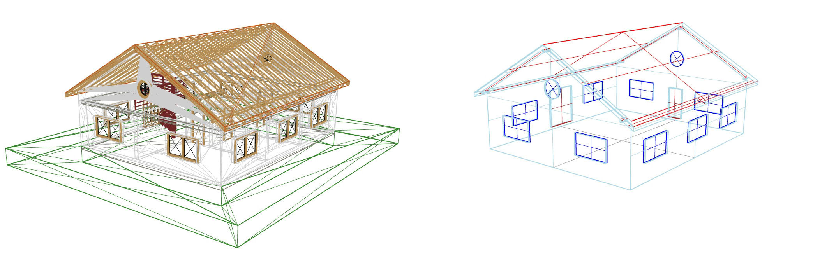
Figuur 1 Een wireframe representatie van een BIM-model (links) en een exterieur GIS-model (rechts).
De manier waarop ruimtes binnen het gebouw worden gerepresenteerd, is daarentegen wel vergelijkbaar tussen BIM- en volumetrische GIS-modellen. Beide gebruiken een enkele volumetrische vorm om een unieke ruimte binnen een gebouw aan te duiden. Deze volumetrische vorm kan worden gezien als een gesloten schil die de grens tussen het gebouw en de lucht van een ruimte aanduidt.
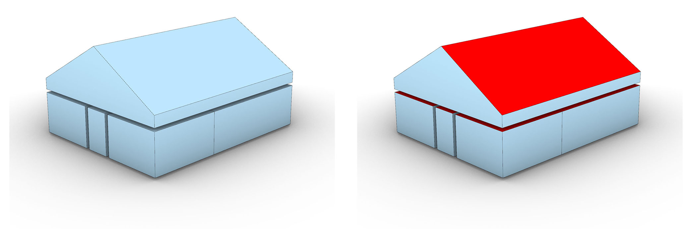
Figuur 2 Representatie van de kamers in een BIM-model (links) en GIS-model (rechts).
Over het algemeen is een gebouw in een BIM-bestand op het hoogst beschikbare detailniveau gerepresenteerd. In een GIS-bestand is dit vaak niet het geval. Een gebouw kan op meerde manieren gerepresenteerd worden in een enkel GIS-bestand. Dit kan variëren van (vanuit GIS bezien) zeer gedetailleerde volumetrische vormen tot zeer versimpelde niet-volumetrische oppervlakte. Deze variatie in representaties is aanwezig om toepassingen op verschillende detailniveaus mogelijk te maken, maar ook omdat GIS-databronnen niet altijd alle data beschikbaar hebben om alle bouwwerken op dezelfde manier te reconstrueren. Het is dus mogelijk om data met lagere precisie te combineren met data met hogere precisie indien er beperkte databronnen beschikbaar zijn. Om de verschillende kwaliteit van de representaties aan te duiden wordt in 3D-GIS de term Level of Detail (LOD) gebruikt. In BIM wordt de informatiebehoefte, inclusief decompositie en detail, beschreven met het Level of Information Need (LOIN). Daarnaast wordt in de BIM-praktijk nog vaak het Level of Development gebruikt, dat ook als LOD wordt afgekort. Die gelijke afkorting zorgt soms voor verwarring. De volgende paragrafen lichten de drie begrippen toe.
Dat de termen GIS Level of Detail (LOD) en BIM Level of Development (LOD) dezelfde afkorting gebruiken, zorgt soms voor verwarring.
2.2.1 Level of Information Need in BIM
De ISO 19650-serie schrijft voor dat een opdrachtgever vastlegt welke informatie die opdrachtgever nodig heeft. Hoe je die informatiebehoefte per object beschrijft, staat in NEN-EN-ISO 7817-1:2024 [ISO7817-1] (de opvolger van NEN-EN 17412-1:2020). Deze methode heet het Level of Information Need (LOIN).
Het LOIN is geen schaal met vaste niveaus. Het is een manier om per informatie-uitwisseling vast te leggen waarom informatie nodig is en welke informatie daar invulling aan kan geven. Hetzelfde object kan daardoor in één project meerdere informatiebehoeften hebben: een wand vraagt voor een kostenraming om andere informatie dan voor een omgevingsvergunning of voor een conversie naar een 3D-stadsmodel.
Informatiedoel
Voordat men bepaalt hoe gedetailleerd een object moet zijn, legt men vier dingen vast. Zonder deze voorwaarden is een informatiebehoefte niet te beoordelen: "gedetailleerd genoeg" bestaat alleen ten opzichte van een doel.
Voorwaarden voor het bepalen van een Level of Information Need
Voorwaarde
Beschrijving
Doel
Het doel beschrijft waarvoor men de informatie gebruikt. Bijvoorbeeld: toetsing van de maximale bouwhoogte in een omgevingsvergunning, of het afleiden van een LOD2-gebouwmodel.
Leveringsmoment
Dit aspect definieert op welk moment in het proces de informatie beschikbaar moet zijn. Bijvoorbeeld: bij de vergunningaanvraag of bij de oplevering.
Actoren
Hiermee maakt men duidelijk welke actor de informatie levert, welke actor ontvangt, en welke actor gebruikt. Bijvoorbeeld: de ontwerpende partij levert, de gemeente of de beheerder van een basisregistratie ontvangt.
Object en decompositie
Object en decompositie stelt de mate van decompositie van het object in onderdelen. Men kan een afvalbak als één geheel modelleren, of in twee delen met een losse bak en een losse poer, of nog verder gedecomponeerd.
Informatiebehoefte
Per object en per doel wordt de informatiebehoefte uitgesplitst in de drie soorten informatie: geometrische informatie, alfanumerieke informatie en documentatie. Voor geometrische informatie worden afspraken gemaakt over vijf aspecten:
Aspecten van geometrische informatie in het Level of Information Need
Aspect
Beschrijving
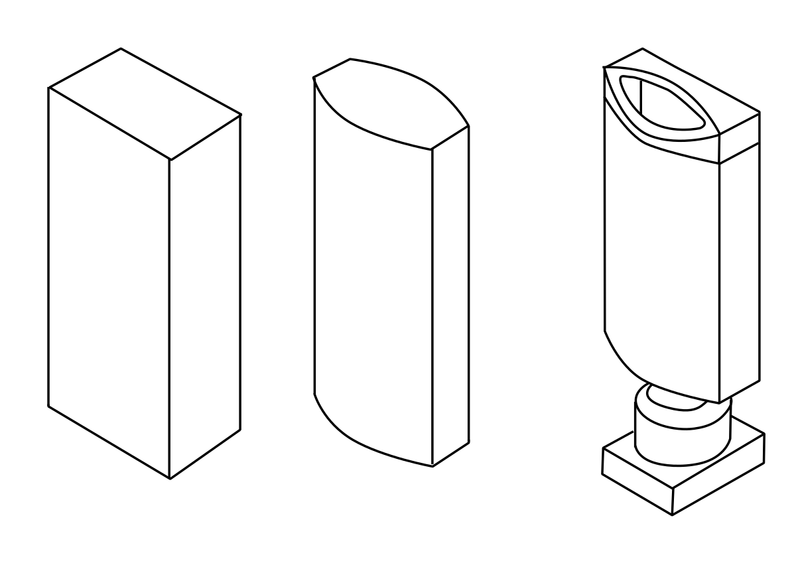
Detail
Beschrijft het detail van de geometrie van het object vergeleken met het object in de werkelijkheid. De Level of Development-niveaus van het BIMForum kan men gebruiken om dit detailniveau te duiden. Dit geldt per objecttype en niet voor het hele model. Zie Level of Development in BIM.
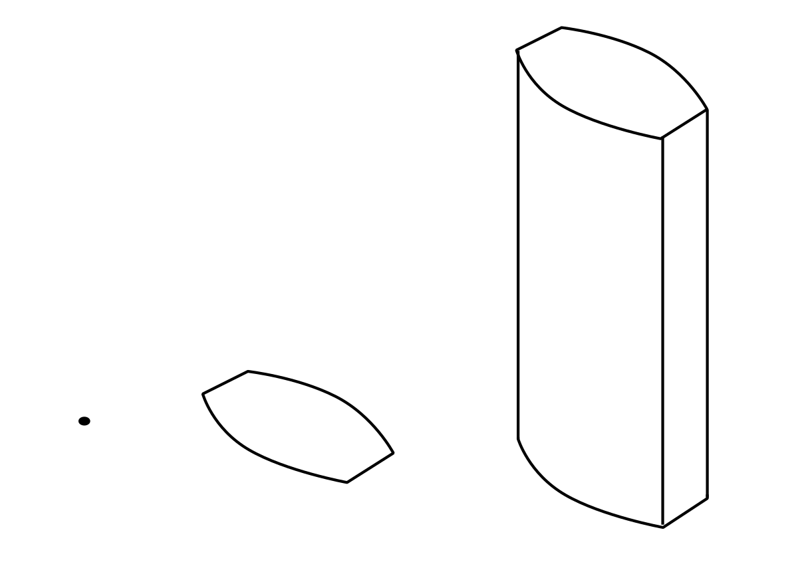
Dimensie
Deze waarde beschrijft in hoeveel dimensies een object wordt weergegeven: 0D, 1D, 2D of 3D. Hogere dimensies zijn mogelijk wanneer bijvoorbeeld tijd of metingen worden toegevoegd.
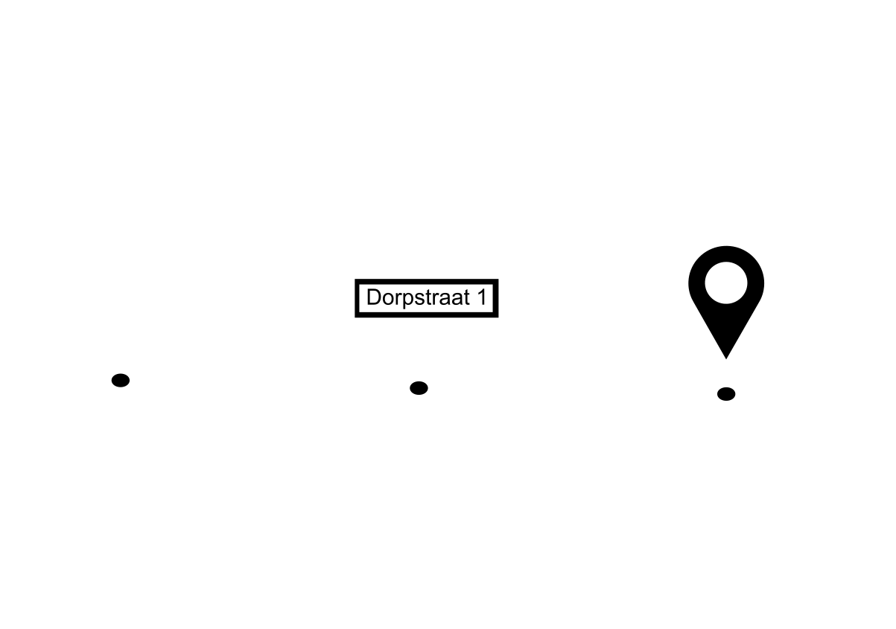
Locatie
Deze waarde duidt hoe de plaats van een object is vastgelegd. Bijvoorbeeld absoluut in een coördinatenstelsel of relatief ten opzichte van een ander object. Voor conversie naar Geo is dit aspect bepalend, omdat het object zonder absolute locatie niet in een geo-omgeving kan worden geplaatst.
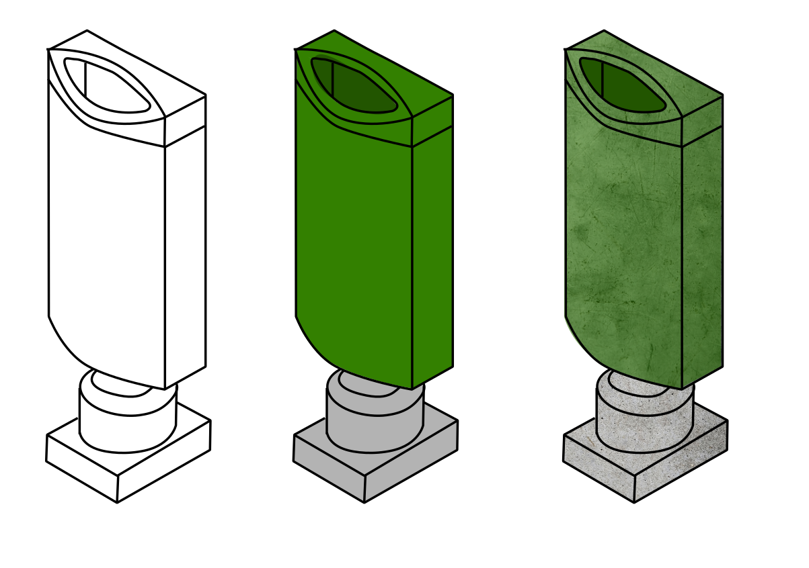
Voorkomen
Dit attribuut specificeert de kleur en/of textuur van een object, en in hoeverre die overeenkomt met het object in de werkelijkheid
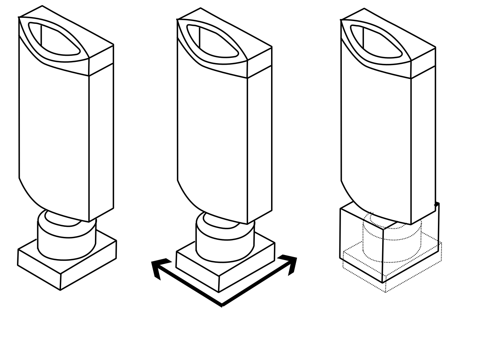
Parametrische functionaliteit
Beschrijft of een object na levering nog aanpasbaar is, en zo ja, hoe.
Het LOIN geeft met alfanumerieke informatie de mogelijkheid om vast te leggen welke niet-geometrische attributen bij een object vastgelegd dienen te worden. Bijvoorbeeld entiteit-type, classificatie of eigenschappen. Met documentatie stelt men in het LOIN vast welke documenten, zoals tekeningen, certificaten of rapporten, aan een object gekoppeld moeten zijn.
Noot: Gebruik het Level of Information Need als uitgangspunt
2.2.2 Level of Development in BIM
In de BIM-praktijk wordt nog veel gewerkt met het Level of Development (LOD) van het BIMForum [BIMFORUM-LOD], oorspronkelijk opgesteld door het American Institute of Architects (AIA). De volledige omschrijvingen per niveau staan in bijlage G. Het BIMForum onderscheidt de volgende niveaus:
Het Level of Development legt met één getal (LOD 100, LOD 200, enzovoort) tegelijk detail, betrouwbaarheid, beoogd gebruik en projectfase vast. Meestal wordt dat getal voor het hele model afgesproken, en het is niet te herleiden tot toetsbare eigenschappen in IFC. Het Level of Information Need is de genormeerde opvolger: het splitst deze onderdelen uit per object en per doel, en stemt de geometrische, alfanumerieke en documentgebonden informatie af op het beoogde gebruik. Wie met LOD-niveaus werkt, kan de omschrijving van een LOD-niveau voor geometrie gebruiken als waarde voor het aspect Detail binnen een LOIN. Zie bijlage G Level Of Development voor een meer uitgebreide toelichting op de BIM-LOD-levels.
2.2.3 Level of Detail (LOD) Framework in GIS
In GIS wordt “Level of Detail” gebruikt om aan te geven hoe gedetailleerd een GIS-model is in relatie tot het object in werkelijkheid.
De GIS Level of Details worden gedefinieerd in de CityGML 3.0-standaard [CITYGML30]. De standaard definieert 4 hoofdniveaus, LOD0 tot LOD3. Hierbij krijgt de geometrie van een model bij hoger LOD-niveau meer detail. De hoofdniveaus worden breed ondersteund in toepassingen.
De documentatie van CityGML over LOD is algemeen. De volgende definities kunnen worden gegeven ten aanzien van gebouwen:
LOD van een gebouw zoals beschreven in de CityGML3.0-standaard
Level
Beschrijving
LOD0
Een representatie van een gebouw of vertrek met niet-volumetrische geometrie zoals een punt, vlak (polygoon) of meerdere vlakken (voor bijvoorbeeld de 'footprint' of 'roofprint').
LOD1
Een representatie van een gebouw of vertrek als een blok- of prismavorm.
LOD2
Een representatie van een gebouw of vertrek als een volume met (meestal) verticale muren, waarbij de vlakken die het dak representeren zijn verfijnd.
LOD3
Een representatie van een gebouw of vertrek als een schil of een collectie van constructieve elementen. Dit is de enige LOD die gevelopeningen ondersteunt.
De in CityGML3.0-standaard beschreven LODs kunnen worden gebruikt voor zowel exterieur als interieur. In CityGML 2.0 was er een aparte LOD die interieur ondersteunde, LOD4. Deze was anders opgebouwd dan LOD0-3. LOD0-3 kent een structuur waarbij de buitenkant een enkele schil is die het model representeert. LOD4 volgt een BIM-achtige structuur waarbij de representatie van het gebouw bestaat uit losse objecten. LOD4 kan worden geïnterpreteerd als een (gefilterde) 1 op 1 conversie van een BIM-model.
In CityGML3.0 is de rol van LOD3 veranderd om de BIM-achtige structuur te ondersteunen die voorheen onder LOD4 viel. Dit betekent dat LOD3 kan zijn opgebouwd als een schilmodel maar ook als een collectie van constructieve elementen. Hoewel LOD4 officieel niet meer wordt ondersteund, komt het in de praktijk nog voor. In deze modellen is LOD3 opgebouwd als een schilmodel en LOD4 als een collectie van constructieve elementen.
In de praktijk wordt het LOD-framework vooral gebruikt voor gebouwen. Bouwwerken zoals bruggen, tunnels en sluizen worden in de documentatie niet zo uitgebreid beschreven als gebouwen. In theorie kunnen de LODs ook toegepast worden op deze bouwwerken omdat het LOD-framework van CityGML open en flexibel is. De verschillende LOD-abstracties van infrastructurele bouwwerken lijken minder bruikbaar omdat gebouwen en infrastructurele bouwwerken erg van vorm verschillen.
Verfijnd LoD-framework 3D Geoinformation, TU Delft
Het CityGML LOD-framework is relatief open en generiek. Dit maakt het makkelijk om een model in het framework te passen. Maar daarmee is het soms ook moeilijk om precies vast te stellen hoe een abstractie het originele gebouw in de werkelijkheid weergeeft. In 2016 hebben Biljecki et al. [BILJECKI2016] daarom een verfijning gemaakt die voortbouwt op het CityGML2.0 LOD-framework. Dit is gedaan door iedere CityGML LOD op te splitsen in vier subgroepen. Zo is LOD1 opgesplitst in LoD1.0, 1.1, 1.2 en 1.3. Het eerste nummer van de verfijnde LoD komt overeen met de CityGML LOD. Het tweede nummer geeft de verdere verfijning aan. De documentatie van de verfijnde LoD is uitgebreider dan die van de CityGML-standaard. Ontwikkelingen in 3D-data-inwinning en modellering alsmede gebruik in de praktijk en de zo opgedane ervaringen, leiden voortdurend tot inzichten die de standaard en LoD-beschrijvingen kunnen verbeteren.
Op basis van meerdere bronnen kunnen de LoDs van het verfijnde framework op de volgende manier worden gedefinieerd:
Uitbreiding van het LoD-framework
Level
Beschrijving
LoD0.0
Voetafdruk, dakuitlijn of geprojecteerde omtrek van gebouwen of onderdelen die groter zijn dan 6m. De representaties van gebouwen die aan elkaar grenzen mogen worden samengevoegd
LoD0.1
Een 2D-projectie van alle "grote" elementen van een gebouw (>4m, > 10m2) geplaatst op grondniveau. De representaties van gebouwen die aan elkaar grenzen mogen worden samengevoegd
LoD0.2
Een 2D-projectie van alle elementen van een gebouw geplaatst op grondniveau en optioneel aangevuld door een 2D-projectie op dakhoogte.
LoD0.3
Een 2D-projectie van alle elementen van een gebouw geplaatst op grondniveau en aangevuld met een 2D-projectie van alle losse dakelementen geplaatst op de tophoogte van ieder element.
LoD1.0
Een opwaartse extrusie van de LoD0.0 voetafdruk of neerwaartse extrusie van de LoD0.0 dakuitlijn naar een afgesproken hoogte
LoD1.1
Een opwaartse extrusie van LoD0.1 naar de afgesproken gebouwhoogte (vaak de noklijn) (of neerwaartse extrusie van de dakuitlijn).
LoD1.2
Een opwaartse extrusie van LoD0.2 naar de afgesproken gebouwhoogte (vaak de noklijn) of neerwaartse extrusie van de dakuitlijn.
LoD1.3
LoD1.2-vorm verrijkt met de meerdere horizontale LoD0.3 dakelementen, indien deze een minimaal hoogtesprong hebben (bijvoorbeeld 2m) tot grondniveau en samengevoegd tot een enkel volume
LoD2.0
Een neerwaartse extrusie van ieder groot dakelement (>4m, > 10m2) tot grondniveau samengevoegd tot een enkel volume.
LoD2.1
Een neerwaartse extrusie van ieder dakelement tot grondniveau (of opwaartse extrusie van het grondvlak tot het dakelement) samengevoegd met het dakelement tot een enkel volume. Het verschil met LoD2.0 is dat kleine details zoals uitstulpingen (groter dan 2 vierkante meter) ook worden meegenomen
LoD2.2
Een neerwaartse extrusie van ieder dakelement en dakbovenbouw (zoals dakkapellen) met minimale omvang tot grondniveau samengevoegd met het dakelement tot een enkel volume. Het kan ook gaan om een opwaartse extrusie van het grondvlak tot het dakelement
LoD2.3
LoD2.2 uitgebreid met expliciet gemodelleerde overhang als deze groter is dan bijvoorbeeld 0.2m. In dit geval worden dus de werkelijke geometrieën van roofprints en footprints gebruikt, waardoor het volume nauwkeuriger is
LoD3.0
LoD2.2 aangevuld met gedetailleerde informatie over dakstructuren, zoals ramen op het dak. Dakkapellen of ramen in muren worden niet meegenomen.
LoD3.1
LoD2.2 aangevuld met gedetailleerde informatie verkregen vanaf de grond, d.w.z. terrestrische inwinning (in tegenstelling tot LoD3.0). Deze LoD kan uitkragingen/overhang, ramen en deuren bevatten, met LoD3.2 detail op de gevel (façade).
LoD3.2
Gedetailleerd schilmodel van het gebouw met elementen die groter zijn dan (bijvoorbeeld) 1m.
LoD3.3
Gedetailleerd schilmodel van het gebouw met elementen die groter zijn dan (bijvoorbeeld) 0.2m.
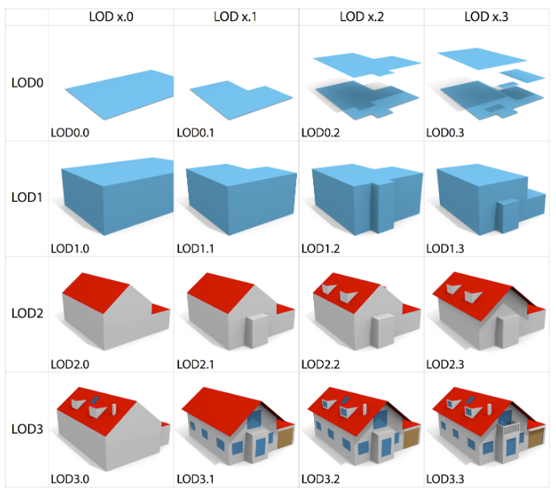
Figuur 6
Voorbeeld van de 16 LoD's beschreven door de TU Delft in 2016.
Dit framework is een verfijning van de eisen voor de LoD-abstracties ten opzichte van het CityGML2.0/3.0 LOD-framework maar kan nog steeds tot verschillende interpretaties leiden. Een van de onduidelijkheden betreft het gebruik van een voetafdruk of een geprojecteerd dakcontour bij de verschillende volumetrische LoD-representaties die gebaseerd zijn op extrusie (LoD1.x en 2.x). Het gebruik van een van beide wordt niet duidelijk beschreven of uitgesloten door het framework. Hierdoor wordt in de praktijk de dakcontour (dakuitlijn), de voetafdruk of een andere brongeometrie (zoals de geprojecteerde maximale omvang) gebruikt. Dit kan resulteren in verschillende representaties van hetzelfde gebouw zonder dat dit expliciet vermeld wordt. Zie meer hierover bij het hoofdstuk Uitbreidingen & aanpassingen van de LoD-frameworks
Noot: voetafdruk (BGT) vs roofoutline vs geprojecteerde maximale omtrek (BAG)
Dit aangepaste LoD-framework is ontwikkeld voor gebouwen en niet voor infrastructurele bouwwerken zoals bruggen, tunnels en sluizen. Er zijn wel initiatieven om LoDs van andere type objecten dan bouwwerken te definiëren, zoals voor vegetatie, infrastructuur/transport en terrein. Deze worden ook gebruikt in de praktijk, ook al is dat minder dan het verfijnde LoD-framework voor gebouwen.
2.2.4 Uitbreidingen & aanpassingen van de LoD-frameworks
Zowel het CityGML2.0 LOD-framework, het CityGML3.0 LOD-framework, als het TU Delft verfijnde framework worden gebruikt in de praktijk. Modellen die in de praktijk beschikbaar zijn passen soms niet helemaal op deze LOD-frameworks, mede omdat er recent technologieën beschikbaar zijn gekomen die het mogelijk maken om GIS-modellen te genereren op andere manieren. Bij het opstellen van de bestaande frameworks werd uitgegaan van de destijds beschikbare inwintechniek van metingen om de LOD-abstracties te vormen. De CityGML1.0 LOD-standaard werd geïntroduceerd in 2008 en versie 3.0 is nog steeds in grote lijnen vergelijkbaar met versie 1.0. De TU Delft verfijning is uit 2016. Het is daarom ook belangrijk dat er onderzoek gedaan wordt naar uitbreidingen en aanpassingen van de bestaande LOD-frameworks afgestemd op nieuwe mogelijkheden.
Voor de voorliggende praktijkrichtlijn is het met name relevant om te kijken naar BIM als databron voor 3D-GIS-bestanden en hoe en welke bestaande, nieuwe of aangepaste LoDs hiermee kunnen worden gegenereerd.
In 2025 is er onderzoek gedaan naar mogelijke aanvullende LoDs voor GIS-modellen die rekening houden met BIM als databron. In de publicatie "Defining LoDs to support BIM-based 3D building abstractions in GIS" [VANDERVAART2025] zijn aanvullingen beschreven op het LoD-framework zodat men rekening kan houden met de unieke beperkingen, maar vooral ook mogelijkheden van BIM-modellen. LoDe.1, een van de experimentele LoD op basis van dit onderzoek zijn ontwikkeld, wordt op dit moment toegepast voor visualisatie door de gemeente Eindhoven als alternatief voor 1 op 1 vertaling.
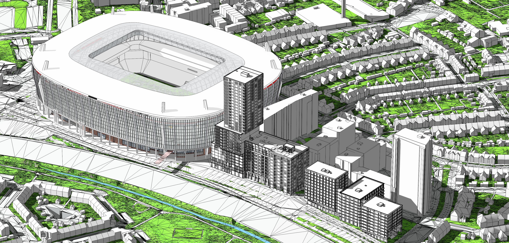
Figuur 7
Voorbeeld van het 3D-stadsmodel van de gemeente Eindhoven dat is verrijkt met LoDe.1 modellen via de IfcEnvelopeExtractor. Deze modellen worden omringd door LoD2.2-modellen.
Een formeel en vastgesteld standaard LOD-framework voor BIM- en geo-modellen maakt mogelijk dat men kan stellen: dit BIM-model voldoet aan LOD X en kan volgens transformatieprofiel Y worden geëxporteerd naar een LoD Z Geo-model.
Noot: Gestandaardiseerd LOD-framework
Voetafdruk of dakomtrek (of andere geprojecteerde gebouwomtrek) als extrusiebron
LoD1, 2, 1.2, 1.3, 2.1, 2.2 en 2.3 zijn vormen die gemaakt zijn door een oppervlak te extruderen. Het is van belang dat gespecificeerd wordt welke oppervlaktes de basis (= extrusiebron) vormen voor het genereren van deze volumetrische vorm. Een model dat gebaseerd is op de voetafdruk zal in de meeste gevallen een andere vorm hebben dan het model dat is gebaseerd op de dakomtrek. Veel gebouwen hebben een dak dat over de gevel (en ook de voetafdruk) heen uitsteekt. Bij deze gebouwen zal een extrusie gebaseerd op de dakomtrek dus groter uitvallen dan een extrusie gebaseerd op de voetafdruk. De keuze om òf voetafdruk òf dakomtrek òf een andere bron/vorm te gebruiken, is meestal afhankelijk van welke van deze geometrieën voorhanden is. Het is belangrijk om hier expliciet in te zijn.
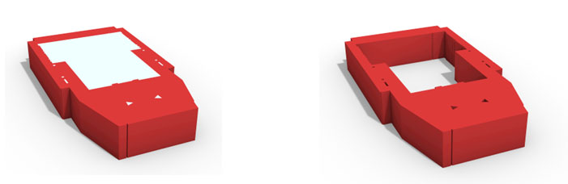
Figuur 8
Deze LoD1.2-representatie van het aulagebouw van de TU Delft is gebaseerd op de dakomtrek (links). Met rood is het deel aangegeven dat zou vervallen ten opzichte van een op voetafdruk gebaseerde extrusie. Het vervallen deel is rechts geïsoleerd weergegeven. Het verschil in volume tussen de twee resulterende vormen is ongeveer 54.000m3
In de CityGML 3.0-standaard [CITYGML30] wordt de term "voetafdruk" genoemd als bronoppervlak voor de extrusie van ruimtes, maar voor de extrusie van de buitenschil is het onduidelijk wat de databron kan zijn. In het TUD verfijnde LoD-framework van Biljecki et al. [BILJECKI2016] worden voetafdruk én dakomtrek als opties genoemd: "LOD0 is a representation of footprints and optionally roof edge polygons marking the transition from 2D to 3D GIS. LOD1 is a coarse prismatic model usually obtained by extruding an LOD0 model.". Op basis van dit framework kan een LoD1 zowel gebaseerd zijn op de voetafdruk als op de dakomtrek. Bij de LoD2.x-groep wordt beschreven dat: "When roof overhangs are not available, the walls are usually obtained as projections from the roof edges to the ground, inherently increasing the volume of the building". De LoD2.x-modellen kunnen volgens dit framework dus ook gebaseerd zijn op zowel de dakomtrek als de voetafdruk.
Daarnaast worden de termen "voetafdruk/footprint" en "dakuitlijn/dakomtrek" niet altijd consistent gebruikt. Zo kunnen bijvoorbeeld polygonen die de dakuitlijn van hetzelfde gebouw representeren verschillende vormen hebben afhankelijk van de interpretatie/gebruik van dit concept.
De term "dakuitlijn" of "dakomtrek" kan worden gebruikt voor een polygoon die de projectie van het bovenaanzicht van een gebouw/model representeert. Deze term wordt echter soms ook gebruikt voor de 2DBAG-polygoon, of in ieder geval het bovengrondse deel van de 2DBAG-geometrie. Volgens de BAG-specificaties [IMBAG], de BAG-polygoon niet altijd de dakuitlijn als zodanig representeert. Dakoverstekken worden alleen meegenomen wanneer het gaat om bouwelementen die daadwerkelijk een afgesloten en bruikbare binnenruimte creëren. Bouwelementen zoals dakoverstekken, dakranden, goten, entree-overkappingen en vergelijkbare beschuttende constructies worden daarom niet opgenomen in de BAG-geometrie.
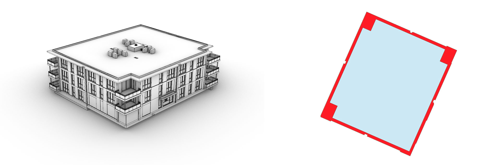
Figuur 9
Het verschil tussen de BAG-polygoon en een dakuitlijn is goed zichtbaar bij een gebouw met balkons. Het gebouw (links) heeft een BAG-polygoon (rechts in grijs) die kleiner is en een andere vorm heeft dan de dakuitlijn (rechts in rood). Als de regels voor het opstellen van een BAG-vorm worden gevolgd, zoals bij de BAG-output van de IfcEnvelopeExtractor, ontstaat er echter een andere polygoon (rechts in blauw) dan de daadwerkelijke BAG-vorm van de 2DBAG-database (rechts in grijs). Dit voorbeeld BIM-model is gebruikt voor ILS voor ruimten in de omgevingswet gemaakt door de gemeente Rotterdam en Kuiper Compagnons.
In Nederland wordt voor 3D-gebouwreconstructie veelal gebruik gemaakt van de 2DBAG als extrusiebron voor LoD1.x- en 2.x-groepen, zoals bij het 3DBAG. Eerder beschreef de website van het 3DBAG de 2DBAG-brongeometrie als volgt: “De polygonen in de BAG representeren de omlijning van panden als de projectie van bovenaf (inclusief ondergrondse delen).”. Dit is conform de BAG-specificaties, maar zonder de bovenstaande uitzonderingen. Hierdoor was het niet duidelijk dat de gebruikte extrusiebron (de 2DBAG) niet de dakuitlijn representeert, maar de projectie van bovenaf met de genoemde uitsluitingen. Op de 3DBAG-website is deze beschrijving voor de BAG-polygoon aangevuld om dit te verduidelijken.
De term "voetafdruk/footprint" heeft een vergelijkbaar probleem in gebruik. Het wordt soms gebruikt voor een polygoon die een horizontale doorsnede op een bepaalde hoogte (vaak maaiveldhoogte) door het gehele bouwwerk representeert. Maar de voetafdrukpolygoon kan ook een vorm zijn die aan strengere eisen voldoet, zoals een BGT-polygoon.
De BGT bevat de zogenaamde voetafdruk- of maaiveldgeometrie, dat wil zeggen de begrenzing van een pand daar waar het de grond raakt. In veel gevallen valt de BGT-geometrie samen met de BAG-geometrie. Een uitzondering is bijvoorbeeld een gebouw op 'palen'. In de BGT wordt de voetafdruk van deze kolommen opgenomen als deze voldoen aan bepaalde voorwaarden. De eisen van BAG-geometrie in relatie tot de BGT-geometrie staan beschreven in het IMGEO-objectenhandboek.
Het is belangrijk om deze eisen aan de 2D-geometrie te begrijpen om ook te begrijpen wat de impact is op de extrusie als de BAG (of BGT) als extrusiebron wordt gebruikt.
Op het faculteitsterrein van de TU Delft staan twee gebouwen die de impact van de extrusiebron op de te reconstrueren geometrie duidelijk maken, gebruikmakend van de BAG als extrusiebron.
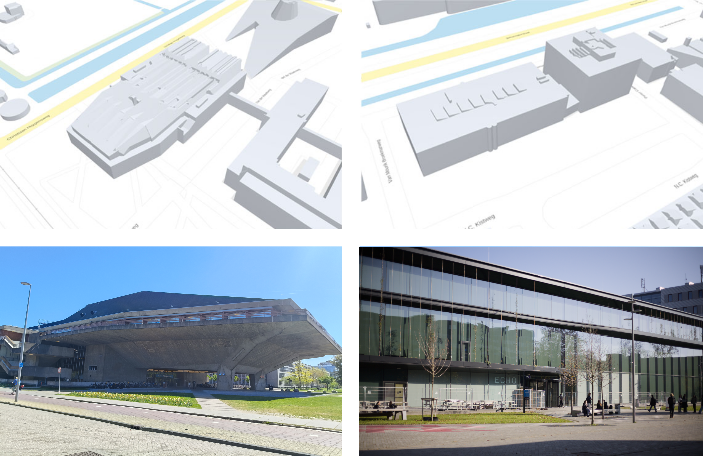
Figuur 10
Voorbeeld van het gebruik van 2DBAG als bronoppervlaktes voor de extrusie, zoals gedaan wordt in de 3DBAG. Links in de figuur is de aula van de TU Delft gevisualiseerd. De BAG-polygoon (de geprojecteerde buitenomtrek) omvat de overhang van dit gebouw, omdat deze overhang een bouwvolume betreft. Rechts is gebouw Echo. De luifels van dit gebouw zijn wel deel van de volledige dakomtrek, maar niet van de 2DBAG-polygoon (omdat de dakoverstekken geen bouwelementen bevatten die onderdeel zijn van een bouwvolume). De draaideuren van de entree die onder deze luifels staan zijn, volgens de BAG-eisen, wel onderdeel van de 2DBAG-geometrie en daardoor ook de basis voor de extrusie in 3DBAG. Dit geeft mogelijk, incorrect, de indruk dat de voetafdruk of de BGT-polygoon als bron is gebruikt voor deze extrusie. De specificaties van de 2D-extrusiebron zijn daarom belangrijk om de verschillen in de 3D-reconstructie te begrijpen.
NB1: Uit de definitie van de 2DBAG-geometrie volgt ook dat ondergrondse onderdelen worden meegenomen in de 2D-geometrie zoals ondergrondse parkeergarages. Bij de 3DBAG-reconstructie worden deze panddelen uit de geometrie gefilterd op basis van de hoogtedata van het maaiveld op deze locaties.
NB2: Voor de 3DBAG is gekozen voor 2DBAG als extrusiebron en niet BGT, omdat 2DBAG, net als AHN, een soort van bovenaanzicht geeft van de panden. Daarom passen beide databronnen goed op elkaar, zeker daar waar het gaat om gebouwen met kolommen en onderdoorgangen. In 2026 loopt een onderzoek om onderdoorgangen te modelleren in 3DBAG door deze te detecteren op basis van een BGT-BAG-analyse en de hoogte vervolgens te detecteren in oblieke luchtfoto's en LiDAR op straatniveau. De resultaten hiervan implementeert men in de 2026 release van de 3DBAG. Zie [PETERS2026].
Noot: Maak aanvullende afspraken rondom voetafdruk of dakomtrek
Noot: Vastgestelde transformatieprofielen voor BIM-naar-Geo per toepassing
2.3 Bestandsformaten
Wanneer men een conversie wil doen van open BIM naar open Geo kan men van verschillende bestandsformaten gebruik maken. Hieronder zijn een aantal belangrijke bestandsformaten beschreven voor het converteren van open BIM naar open Geo.
2.3.1 CityGML XML & CityGML CityJSON
CityGML is een open conceptueel datamodel voor het opslaan van 3D-geodata. CityGML definieert verschillende objecten (classes) en hun relaties voor de meest relevante topografische objecten zoals gebruikt in stedelijke en regionale modellen. In tegenstelling tot meshbestandstypen zoals OBJ en STL maakt CityGML het mogelijk om ook attributen voor ieder object op te slaan.
Naast een datamodel is CityGML ook een data-encoding. De gelijke benaming van het datamodel en data-encoding kan tot verwarring leiden. Voor het conceptuele datamodel CityGML, is zowel een GML-, JSON- als RDF-encoding beschikbaar.
De GML-encoding is gebaseerd op een XML-datamodel. XML is een vrij omvangrijk formaat dat ook lastig te lezen is door gebruikers. Een alternatief is CityJSON, een encoding gebaseerd op een JSON-datamodel. Deze encoding is lichter dan XML en ook makkelijker door gebruikers te begrijpen. Een CityGML-bestand in de XML-encoding is gemiddeld ongeveer 7 keer zwaarder dan een CityGML-bestand in de CityJSON-encoding (zie tabel hieronder en zie CityJSON bestandsgrootte voor meer informatie). CityJSON kent echter ook beperkingen. Zo is niet het gehele CityGML-datamodel in de CityJSON-encoding beschikbaar.
Er is software beschikbaar die CityGML-bestanden van de ene naar de andere encoding kan omzetten, waardoor afhankelijk van de toepassing de ene of de andere encoding kan worden gebruikt.
dataset
CityJSON v2.0
CityGML-XML v3.0
textures
factor kleiner
3DBAG
7.0MB
40MB
none
5.7X
Den Haag
2.7MB
19MB
none
7.0X
Ingolstadt
4.8MB
40MB
none
8.3X
Montréal
5.6MB
53MB
none
9.5X
New York
110MB
682MB
none
6X
Railway
4.5MB
39MB
ZIP
8.7X
Rotterdam
2.7MB
18MB
ZIP
6.7X
Vienna
5.6MB
40MB
ZIP
7.1X
Zürich
293MB
2100MB
none
7X
In de onderstaande codefragmenten kan de XML (boven) en CityJSON (onder) encoding van CityGML vergeleken worden. Deze twee fragmenten laten de definitie zien van hetzelfde object met een aantal attributen. De geometrie is verwijderd uit de fragmenten. Het is duidelijk te zien dat de XML-encoding veel meer karakters nodig heeft om dezelfde informatie te modelleren. Dit draagt bij aan de extra bestandsgrootte.
Meer informatie over CityGML is te vinden in de standaard [CITYGML30] en op de OGC-website. OGC heeft het datamodel voor de GML/XML-encoding ontwikkeld. De CityJSON-encoding is ontwikkeld onder leiding van de TU Delft en is later door OGC vastgesteld als OGC-communitystandaard. Meer over CityJSON is te vinden in de specificatie [CITYJSON20] en op de CityJSON-website.
2.3.2 GeoJSON
GeoJSON is een open uitwisselformaat voor geografische gegevens. Het is, net zoals CityGML CityJSON, gebaseerd op de JSON-encoding. De manier waarop de data is opgeslagen is echter anders. Ten opzichte van CityGML heeft GeoJSON meer beperkingen. GeoJSON-bestanden zijn daardoor wel eenvoudiger en worden door meer generieke GIS-applicaties ondersteund dan 3D-formaten zoals CityJSON.
De Industry Foundation Classes (IFC) zijn een set van gestandaardiseerde, digitale beschrijvingen van objecten in de gebouwde omgeving voor bouwinformatiemodellen (BIM). IFC is een open internationale standaard voor het delen van data van de gebouwde omgeving. De standaard bevat definities voor data die benodigd is voor gebouwen en infrastructurele werken over de gehele levenscyclus bezien, van ontwerp en constructie tot beheer. De standaard wordt voornamelijk gebruikt in de AEC-sector (Architecture, Engineering & Construction). IFC bestaat uit een schema, een documentatie, property (kenmerken) en quantity (hoeveelheden) sets en het mechanisme van het uitwisselformaat. IFC biedt machine-interpreteerbare informatie en maakt daarmee automatisering van workflows mogelijk. Het is net als andere open standaarden software-onafhankelijk en voor iedereen beschikbaar. Binnen het formaat is het mogelijk om gebouwen, wegen, spoor, waterwegen en havenfaciliteiten te modelleren.
In deze praktijkrichtlijn wordt de BIM-naar-Geo-workflow beschreven voor open uitwisseling van BIM en Geo. Hiervoor baseert de praktijkrichtlijn zich voornamelijk op het IFC-uitwisselformaat voor BIM en CityGML (JSON-encoding) voor Geo.
2.3.4 3D Tiles
Voor het grootschalig streamen en renderen van BIM-modellen is de OGC-standaard 3D Tiles [3DTILES] te gebruiken. Met een tileset.json kan het formaat schakelen tussen verschillende Level of Detail. Deze standaard is primair bedoeld voor visualisatie en niet voor het modelleren of analyseren van modellen. GlTF en het binary formaat daarvan, GLB, is het primaire tegelformaat voor 3D Tiles. Het is mogelijk om attribuutinformatie mee te nemen in dit bestandsformaat, die moet vanwege de snelheid van streamen en renderen zoveel mogelijk beperkt te blijven. Wanneer attributen van belang zijn, kan men beter een bestandsformaat als CityJSON kiezen.
Voor meer informatie, zie de handreiking 3D Tiling [3DTILING] en zie convertors als ifc2b3dm. Er zijn ook betaalde converters of add-ins Cesium-Revit-add-in die men kan gebruiken.
3. Methodes van BIM naar Geo brengen
Er zijn verschillende methodes om BIM-modellen naar een GIS-omgeving te brengen. Ze lopen op van eenvoudig, met weinig eisen aan het BIM-model, tot complex, met strenge eisen maar een beter bruikbaar GIS-model:
Direct BIM/IFC openen in Geo: BIM- en GIS-modellen worden samen in één softwareomgeving geopend, zonder conversie.
Directe 1-op-1-vertaling: ieder BIM-object wordt omgezet naar een object in een GIS-formaat, zoals GeoJSON of CityJSON.
Gefilterde 1-op-1-vertaling: alleen van een selectie wordt ieder BIM-object omgezet naar een object in een GIS-formaat, bijvoorbeeld alle objecten die samen de buitengevel vormen. Een variant hierop is een hybride model met alleen de buitenoppervlakken (LoDe.1).
Shell-extractie: uit het BIM-model wordt een gesloten schil afgeleid die het GIS-datamodel volgt.
Iedere methode heeft een andere uitkomst en past bij andere toepassingen.
3.1 Direct BIM/IFC openen in Geo
Er zijn softwarepakketten die het mogelijk maken om BIM en GIS-modellen te openen in één omgeving of viewer. Dit kan met open en soms ook met gesloten formaat. Dit is voor de gebruiker een makkelijke manier van integratie. De eisen waaraan een BIM-model moet voldoen zijn laag en het openen van het model in de GIS-omgeving is relatief snel. Dit is ideaal voor renders en visualisaties, visuele analyses en analyses binnen het ecosysteem van de viewer. De applicaties die dit faciliteren zijn vaak commerciële en/of closed-source software, die een geïntegreerde en stabiele gebruikerservaring bieden, maar waarbij dit ten koste gaat van interoperabiliteit door de gebondenheid aan het ecosysteem van de leverancier. Integratie tussen verschillende software van andere leveranciers buiten dit ecosysteem brengt vaak problemen met zich mee. Dit kan een gebruiker beperken tot een relatief kleine selectie aan analysemogelijkheden. Het maakt het ook lastig om met andere partijen samen te werken en de data al dan niet publiekelijk te delen.
Voorbeelden (niet limitatief) van toepassingen waarin Geo en BIM in één omgeving kunnen worden geopend zijn:
Hoewel de onderliggende implementatie van het openen van BIM in Geo doorgaans niet openbaar inzichtelijk is, bieden sommige oplossingen wel transparantie in de vorm van configureerbare en inzichtelijke workflows. Hierdoor is het conversieproces deels te volgen, maar blijft de exacte werking van de software vaak verborgen.
3.2 Directe 1-op-1-vertaling
Een andere methode om BIM naar Geo te brengen is een zo direct mogelijke 1-op-1 vertaling van alle elementen in het BIM-bestand naar Geo. Hierbinnen kan onderscheid worden gemaakt tussen alleen de directe vertaling van de geometrie of een complete directe mapping inclusief attributen. Het verschil tussen de twee is dat de mapping inclusief de attributen ook de attributen van het IFC-model zo veel als mogelijk intact houdt, terwijl een conversie van de geometrie alleen de geometrie overzet en de attributen negeert. Een 1-op-1-conversie van enkel de geometrie resulteert meestal in structureel andere bestanden (zoals obj) terwijl een 1-op-1-mapping meestal de IFC-structuur (in beperkte mate) vasthoudt. De bestanden die ontstaan door deze 1-op-1-mapping kunnen dus worden gezien als een IFC-model/structuur met een GIS-extensie. Eén IFC-instantie resulteert in dit geval in één feature.
Dit soort omzetting is een makkelijk en relatief snel proces. Tijdens de conversie kunnen weinig fouten optreden. Het resulterende bestand kan worden geopend door iedere software die de GIS-encoding ondersteunt. In dat opzicht is het veelzijdiger dan de vorige optie die de gebruiker bindt aan een softwareomgeving. Maar ook al heeft een 1-op-1 vertaald bestand een GIS-encoding, het voldoet niet aan een GIS-datamodel. Ook zijn lang niet alle IFC-attributen te mappen naar Geo-attributen en vice versa. Dit beperkt de bruikbaarheid van deze modellen.
Aanvullend is de overzetting van de geometrie geen volledige 1-op-1-vertaling. Impliciete IFC-geometrie moet tijdens de conversie worden omgezet naar expliciete geometrie. Hoe nauwkeurig dat gebeurt, bepaalt mede de bestandsgrootte van het resultaat (zie Meshing).
3.2.1 Vertaling naar GeoJSON
Het GeoJSON-formaat zelf is beschreven in het hoofdstuk GeoBIM informatielandschap. Bij een 1-op-1-vertaling wordt elke IFC-instantie één GeoJSON-feature. Drie eigenschappen van GeoJSON bepalen hoe die vertaling eruitziet:
Geen objecttypen. GeoJSON kent geen classificatie van features. De IFC-entiteit (bijvoorbeeld IfcDoor) en de IFC-attributen worden daarom als gewone properties opgenomen.
Alleen eenvoudige geometrietypen. GeoJSON ondersteunt punten, lijnen en vlakken (Simple Features), maar geen volumes. Een volumetrisch IFC-object wordt daardoor een verzameling losse vlakken (MultiPolygon).
WGS 84-coördinaten. Volgens de standaard gebruikt GeoJSON lengte- en breedtegraad in WGS 84. Coördinaten uit een RD-georefereerd BIM-model moeten dus worden omgerekend.
Vertaling van BIM naar Geo kan resulteren in een kleinere bestandsgrootte. Maar wanneer het BIM-model veel impliciete geometrie bevat, beschreven door een functie, resulteert het expliciet maken van deze geometrie, beschreven door grenzen en coördinaten, juist in een toename van de bestandsgrootte.
model
Bestandsgrootte IFC (KB)
Bestandsgrootte GeoJSON 1-op-1-mapping (KB)
A20 Corridor
7.787
2.094
aisc_sculpture_param
314
4.206
ifcbridge-model01
14.817
26.049
ifcbridge-model04
55
296
ifcbridge-model05
25
205
tabel_chairs
705
48.641
kievitsweg_R25
13.706
65.386
Een voorbeeld van een tool om IFC naar GeoJSON te converteren is ifc2gis-converter
3.2.2 CityGML en CityJSON
Het is ook mogelijk om een IFC 1-op-1-vertaling naar de CityGML (JSON encoding) te maken. Het datamodel van CityGML geeft de optie om IFC-types te vertalen naar CityGML-types. Zo heeft CityGML bijvoorbeeld de types "Building", "BuildingPart" en "BuildingRoom" voor een gebouwmodel of "Bridge", "BridgePart" en "BridgeFurniture" voor een brugmodel. Gebruik van deze types bij de 1-op-1-mapping geeft meer betekenis aan de dataset dan de directe GeoJSON-vertaling. De IFC-attributen kunnen direct worden vertaald naar de CityGML "attributes".
3.2.3 Complicaties
Zoals vermeld kunnen veel viewers en analysesoftware de 1-op-1 vertaalde GeoJSON, CityJSON of CityGML-bestanden openen. Hoewel het in CityJSON/CityGML mogelijk is om extra betekenis van het model aan te duiden, geldt voor al deze 1-op-1 vertaalde modellen dat analyses maar beperkt kunnen worden toegepast. Analysesoftware verwacht vaak een specifiek geo-gebaseerd datamodel. Doordat het vertaalde 1-op-1-model hier niet aan voldoet, kan dit resulteren in trage, onbetrouwbare of niet-functionele analyses.
Bijvoorbeeld: Een zonlichtsimulatie test alle vlakken die mogelijk zonlicht ontvangen. Bij een shell-extractie zal deze analyse snel gedaan kunnen worden, zie shell-extractie, omdat met deze abstractie de buitenkant van een bouwwerk bekend is. Bij een directe 1-op-1-vertaling is dat niet het geval en zal deze analyse op alle oppervlaktes van het model gedaan moeten worden. Dit resulteert in een traag proces dat mogelijk niet succesvol is.
Een ander probleem is dat door het expliciet maken van de impliciete IFC-geometrie, de bestanden van een 1-op-1-mapping kunnnen erg zwaar zijn. Een stedelijk model gevuld met dit soort modellen zal veel problemen kunnen geven. De oorspronkelijke IFC-modellen hebben daarom soms een kleinere bestandsgrootte. Goed geoptimaliseerde IFC- of IFCZIP-modellen kunnen zelfs enkele malen kleiner zijn.
*Enkel de IfcBeam-, IfcColumn-, IfcCovering-, IfcCurtainWall-, IfcDoor-, IfcMember-, IfcPlate-, IfcRoof-, IfcSlab-, IfcWall-, IfcWallStandardCase- en IfcWindow-klassen en gerelateerde attributen zijn overgezet
3.3 Gefilterde 1-op-1-vertaling
Een beperkte remedie voor de grote bestanden die ontstaan bij een directe 1-op-1-vertaling is een gefilterde 1-op-1-mapping. Hierbij worden alleen specifieke objecten vertaald. Bijvoorbeeld alleen objecten die deel uitmaken van de buitengevel van een gebouw zet men om naar een GIS-encoding. Dit kan op een aantal verschillende manieren geïmplementeerd worden. De meest voorkomende maakt gebruik van een objectattribuut (bijvoorbeeld isExternal in IFC). Dit is een gemakkelijke en snelle filtering en zal tijdens de conversie weinig problemen opleveren. Deze methode vertrouwt echter op het correcte gebruik van de attributen door de makers van het model. Het correcte gebruik van attributen kan niet altijd worden gegarandeerd. Mensen maken fouten of zijn onbekend met het attribuut of het belang ervan. Mogelijk moet daarom het resulterende model gecorrigeerd worden. Een detectie met behulp van raycasting zoals LoD4.2 van de IfcEnvelopeExtractor is complexer en trager maar wordt niet beïnvloed door het correct gebruik van attributen.
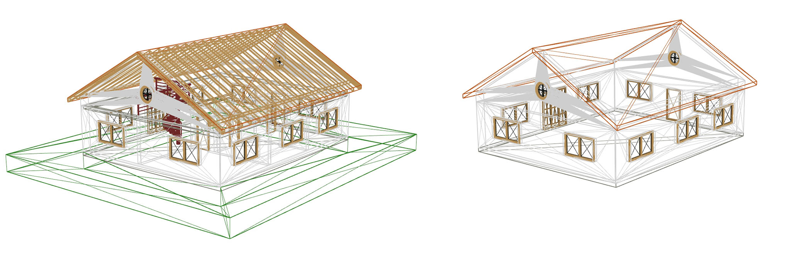
Figuur 11Wireframe-representatie die het verschil tussen een gefilterde (rechts) en ongefilterde (links) 1-op-1-vertaling/mapping weergeeft
De filtering binnen de 1-op-1-mapping kan verder door worden gezet dan alleen de filtering van externe objecten. Zo heeft de IfcEnvelopeExtractor als een van de mogelijke outputs LoDe.1. Deze output bevat alleen de externe surfaces van een BIM-model. Dit kan worden gezien als een hybride GIS-model dat tussen een 1-op-1-mapping en shell-extractie in valt. Deze hybride modellen hebben geen volumetrische objecten zoals in modellen uit een 1-op-1-mapping. Net zoals schilmodellen hebben deze hybride modellen een relatief klein aantal surfaces. De hybride modellen hebben ook een kleine bestandsgrootte. Ze onderscheiden zich echter weer van schilmodellen doordat ze niet lucht-dicht (waterdicht) volumetrisch zijn. Voor sommige GIS-gerelateerde operaties zijn deze modellen echter een uitkomst.
Ook is het mogelijk om specifieke entiteiten om te zetten. Zo kan men kiezen om wel de muren (geclassificeerd als IfcWall) maar niet het meubilair (geclassificeerd als IfcFurniture) 1-op-1 te vertalen.
3.4 Shell-extractie
Een bestand dat volledig een GIS-datamodel volgt, kan alleen worden gecreëerd door een vorm van shell-extractie toe te passen. Bij shell-extractie wordt een schilmodel gegenereerd van een BIM-model. Dit is dus een ander principe dan het hierboven genoemde 'filteren' op basis van een bepaald attribuut of eigenschap. De shell-extractie draagt bij aan een betere interoperabiliteit, hoewel hierbij een deel van de oorspronkelijke data verloren gaat. Dit geldt zowel voor de geometrie als de attributen. Volumetrische externe objecten zoals wanden (buitenmuren) en daken worden oppervlaktes die deel zijn van een volumetrische schil. Interne elementen kunnen volledig vervallen. Dit proces is dus ook niet omkeerbaar.
Figuur 12Een wireframe-representatie die het verschil tussen een bron-BIM-model (links) en een GIS-model (rechts) na shell-extractie weergeeft
Aanvullend is shell-extractie een complex proces waarbij problemen kunnen optreden, mede afhankelijk van de kwaliteit van de inputmodellen. Schilmodellen met een hoge precisie kunnen alleen gecreëerd worden indien de input BIM-modellen voldoen aan strenge eisen. Deze eisen zijn niet alleen semantisch (dat wil zeggen eisen om specifieke attributen te gebruiken) maar ook geometrisch. Dit maakt het lastig om deze eisen af te dwingen met een InformatieLeveringSpecificatie (ILS/IDS). Zelfs als alle eisen nageleefd worden, zijn er situaties waarbij het schilmodel niet correct gemaakt kan worden.
Schilmodellen met een lagere nauwkeurigheid of precisie stellen lagere eisen aan het input BIM-model. Zo kunnen blokmodellen of voxelisaties worden gemaakt van bijna alle BIM-modellen, ook van schets- en kladmodellen. Hoe hoger de verwachte precisie van het GIS-model, hoe strenger de eisen aan het inputmodel en hoe complexer het proces om de shell-extractie te creëren.
Het genereren van schilmodellen van BIM-bestanden is momenteel vooral beschikbaar in experimentele onderzoekssoftware. Verschillende methodes worden nog steeds (door)ontwikkeld en onderzocht. Er is nog geen standaard methode voor deze conversie. De beschikbare softwareoplossingen werken op basis van verschillende methodes en kunnen daardoor ook andere output genereren op basis van dezelfde BIM input. Daarnaast werkt niet alle shell-extractie software volgens het LoD framework dat in GIS wordt aangehouden. Zo genereert de toepassing BIMShell alleen een schil van hoge kwaliteit en een voxelisatie. De toepassing IfcEnvelopeExtractor volgt een aangepaste interpretatie van het LoD framework van Biljecki et al. [BILJECKI2016]. Output kan daardoor verschillen tussen verschillende toepassingen en softwarepakketten.
Noot: Shell-extractie metadata
Ondanks deze problemen leveren deze schilmodellen, gegenereerd op basis van een BIM-bron, ook veel voordelen. De resulterende modellen hebben een kleine bestandsgrootte en worden ondersteund door vrijwel alle beschikbare GIS-software. Deze modellen zijn daarnaast ook het meest geschikt vanwege hun geometrische kwaliteit voor complexe GIS analyses.
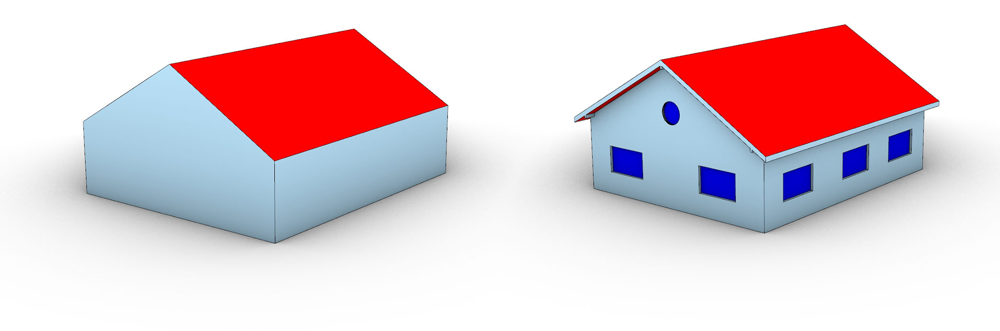
Figuur 13De modellen in de 3DBAG met de hoogste kwaliteit zijn de LoD2.2 modellen (links). GIS-geometrie op basis van BIM-modellen zou hogere kwaliteit modellen in LoD3.2/LoD3.3 (rechts) kunnen leveren.
Deze schilmodellen zijn niet alleen waardevol voor de realisatie of analyse van het gebouw dat is omgezet (ook in relatie tot de omgeving) maar zij kunnen ook worden gebruikt om bestaande stedelijke modellen aan te vullen of te verrijken. BIM-modellen bevatten meer geometrisch detail dan een remote-sensingmeting (zoals laserscans) waarop de meeste stedelijke modellen zijn gebaseerd. De GIS-modellen van een BIM bron kunnen daardoor dus ook een hogere kwaliteit/meer detail bieden. GIS-schilmodellen van een BIM bron kunnen aanvullend worden gebruikt in stedelijke GIS-modellen. Daarnaast kan een beschikbaar BIM-model van een nieuw gebouw sneller worden omgezet naar een GIS-schilmodel dan dat dit gebouw kan worden ingemeten en omgezet kan worden naar een GIS-model. Daardoor kunnen de modellen ook gebruikt worden om een stedelijk model sneller te updaten. Een belangrijke voorwaarde hiervoor is dat de BIM-modellen van deze nieuwe gebouwen beschikbaar zijn.
Figuur 14De spoorzone van Delft is een gebied waar veel nieuwbouw plaatsvindt en laat zien dat 3DBAG vertraagd update. Twee gebouwen zijn wel aanwezig in 2DBAG (de grijze omtrekken) maar een 3D-representatie is nog niet beschikbaar. BIM-gebaseerde GIS-modellen kunnen hier een uitkomst bieden, indien BIM-modellen beschikbaar zijn.
3.5 Vergelijking van de methodes
De tabel hieronder zet bovenstaande methodes naast elkaar. De tabel laat zien dat geen enkele methode voor alle toepassingen de beste is. De beoogde toepassing bepaalt wat zwaarder weegt: snelheid, interoperabiliteit, volledigheid van de informatie, bestandsgrootte of analysemogelijkheden.
Direct openen
1-op-1-vertaling
Gefilterde 1-op-1-vertaling
Hybride model (LoDe.1)
Shell-extractie
Eisen aan het BIM-model
Laag
Laag
Laag tot middel: afhankelijk van correct gebruik van attributen zoals IsExternal
Middel
Hoog: semantisch én geometrisch
Conversieproces
Geen conversie
Eenvoudig en snel
Eenvoudig (filter op attribuut) of complexer (detectie met raycasting)
Complex
Complex, vooral experimentele software
Interoperabiliteit
Laag: gebonden aan het ecosysteem van de leverancier
Open GIS-formaat, maar volgt geen GIS-datamodel
Open GIS-formaat, maar volgt geen GIS-datamodel
Open GIS-formaat, deels aansluitend op GIS-datamodel
Hoog: volgt het GIS-datamodel
Bestandsgrootte
Groot
Groot, kan groter worden dan het IFC-bestand
Kleiner (circa 7–28% van IFC)
Klein
Klein (circa 1–6% van IFC)
Analysemogelijkheden
Alleen binnen de software
Beperkt en vaak traag
Beperkt
Geschikt voor een deel van de GIS-bewerkingen (niet waterdicht)
Ruim, ook complexe ruimtelijke analyses
Informatieverlies
Geen
Weinig: niet alle attributen zijn te mappen
Objecten buiten het filter vervallen
Volumes en interne objecten vervallen
Veel, en niet omkeerbaar
Geschikt voor
Visualisatie en analyses in één softwarepakket
Visualisatie en delen in een open formaat
Visualisatie van het exterieur met lichtere bestanden
Visualisatie in een 3D-stadsmodel
Analyses, aanvullen en actualiseren van stedelijke modellen
4. Geometrie BIM naar Geo
4.1 Impliciete en expliciete geometrie
Geometrie kan impliciet of expliciet zijn gedefinieerd. Expliciete geometrie is geometrie die volledig is uitgeschreven, dat wil zeggen: alle coördinaten van de vertices, edges, faces en curves. Er is geen procedure of wiskundige berekening nodig om de geometrie op te stellen. Bij impliciete geometrie is dit anders. De geometrie is beschreven als een wiskundige of procedurele definitie. Pas bij rendering of conversie wordt geometrie vertaald naar vertices, edges, faces en curves.
In de Geo-formaten CityJSON, CityGML en GeoJSON maakt men voornamelijk gebruik van expliciete geometrie. In het open-BIM-formaat IFC kan men zowel impliciete als expliciete geometrie opslaan. Een softwaregebruiker is zich niet altijd bewust van het type geometrie dat is gemodelleerd.
Complexe impliciete geometrie kan bij conversie naar expliciete CityJSON-geometrie een groot bestand opleveren.
De geometrieën van het BIM-model worden vertaald naar Geo-geometrieën. Waar nodig worden IFC-geometrieën omgezet naar solids of polygonen. Dit kan op verschillende detailniveaus. Een hoger detailniveau resulteert in een nauwkeurigere representatie en vergroot de bestandsgrootte.
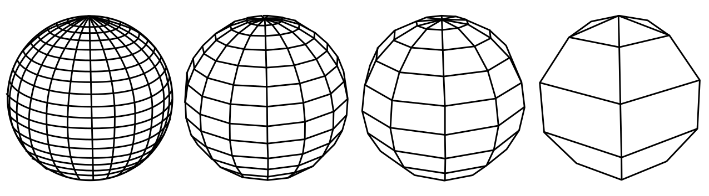
Figuur 16Meshing van dezelfde geometrie op verschillend detailniveau
4.3 Technieken voor shell-extractie
Zoals eerder beschreven is shell-extractie nu vooral beschikbaar in experimentele vorm voor het van BIM naar GIS brengen. Hierdoor zijn er nog geen standaard methodes ontwikkeld en gebruikt iedere software een eigen benadering. Dit hoofdstuk beschrijft de verschillende manieren waarop sommige schilmodellen worden gegenereerd door verschillende beschikbare software. Dit is een selectie van de processen om een complex BIM-model te converteren naar een versimpeld Geo-model.
4.3.1 Voxelisatie
Een shell-extractiemethode die wordt gebruikt is voxelisatie. Voxelisatie benadert de vorm van een gebouw/bouwwerk met behulp van VOlumetrische piXELS (voxels). De resulterende vorm kan worden gezien als een blokkendoosrepresentatie van het inputmodel. Dit is op dit moment geen standaard GIS-vorm die wordt beschreven in bestaande LoD-frameworks. Een Geo-model dat is gegenereerd als voxelisatie van een BIM-model kan echter heel waardevol zijn. Voxelisatie kan namelijk aspecten van een gebouw opslaan die verder alleen in hele complexe LoD-modellen beschikbaar zijn (LoD3+), zoals overhang (dakoverstek) en gevelopeningen. Voxelistatie is minder precies dan deze LoD3+-modellen maar het resulterende model is wel een stuk robuuster en sneller. Daar waar een LoD3+-vorm niet gemaakt kan worden door een schilextractor vanwege onvoldoende kwaliteit of een te grote complexiteit van het inputmodel kan mogelijk een voxelistatie wel gemaakt worden.
Voxelisatie komt met specifieke problemen waarvoor nog geen goede oplossingen zijn. Zo is de vorm van het gevoxeliseerde model afhankelijk van de voxelgrootte en de rotatie van het grid dat gebruikt werd tijdens de voxelisatie.
Van der Vaart et al. [VANDERVAART2024] beschrijven het effect van verschillende voxelgrootte op het volume en oppervlakte van een externe schilrepresentatie van een IFC-model. Hieruit blijkt dat de oppervlakte van de voetafdruk, het volume van de gehele schil en de visuele representatie beter worden benaderd met kleinere voxels. Als de voxelgrootte correct wordt gekozen, is het voxel-gebaseerde model ook preciezer op deze aspecten dan de LoD2.2-representaties.
Op basis van de grootte van een model wordt een "ideale" voxelgrootte gepresenteerd door Van der Vaart et al. [VANDERVAART2024]. Deze waardes zijn mogelijk al verouderd, zo zijn elementen zoals bestandsgrootte niet meegenomen en ook is het onderzoek gedaan met een oude versie van de IfcEnvelopeExtractor. Sinds dit onderzoek is de voxelisatiecode versneld en zijn de rekentijden uit het onderzoek niet meer representatief.
Figuur 17Animatie die het effect op de resulterende voxelschil laat zien bij verfijning van de gekozen voxelgrootte. De grootte gaat van 21,78 m naar 0,09 m door bij iedere stap de voxelgrootte door twee te delen. Het inputmodel is het Schependomlaan model.
4.3.2 Schil met hoge resolutie
Een schil met hoge resolutie kan op verschillende manieren worden gemaakt. De meest gebruikte technieken zijn ray-casting en alpha shapes.
4.3.2.1 Ray casting
Ray-casting is een proces waarbij rechte lijnen (rays) worden gebruikt om te testen of een polygoon deel uitmaakt van de buitenschil van een gebouw. Het resultaat van een ray-castingproces is echter niet direct een correct gesloten buitenschil. Na een ray-castingproces is extra correctie nodig om een gesloten buitenschil te maken van de geselecteerde elementen. Zo kunnen de resulterende polygonen maar gedeeltelijk deel uitmaken van de buitenschil of kleine openingen bevatten.
De eerste stap van een ray-castingproces is puntenpopulatie. In de meest simpele vorm van ray-casting worden alle polygonen van een model bedekt met punten. Vanaf deze punten worden één of meer lijnen getrokken in de globale normaalrichting van de polygoon. Voor iedere lijn wordt er getest of de lijn met andere polygonen van het model gesneden wordt. Als een lijn niet wordt gesneden dan is het punt "zichtbaar" vanaf de buitenkant van het gebouw, en dus maakt de polygoon waar dit punt op rust deel uit van de buitenschil. Als alle lijnen uit alle punten op een polygoon worden gesneden kan dus de aanname worden gedaan dat deze polygoon geen rol speelt bij het modelleren van de buitenschil. Deze polygoon kan dus worden verwaarloosd.
De polygonen die gevonden worden bij ray-casting spelen een rol bij het modelleren van de buitenschil. Maar deze kunnen mogelijk gedeeltelijk deel van de buitenschil en deel van het interieur zijn. Aanvullend kunnen er kleine gaten tussen polygonen aanwezig zijn in het BIM-model. Deze kleine gaten worden mee overgenomen en moeten op een manier gesloten worden voordat een gesloten buitenschil kan worden gemaakt.
De beschreven manier van ray-casting is erg simpel, maar ook relatief zwaar en traag. Er zijn veel optimalisaties om dit proces te versnellen. Een correct gemodelleerd BIM-model maakt gebruik van (de juiste) types/classes voor objecten. Op basis van deze types kan er al een filtering worden toegepast voorafgaand aan de ray-casting. Meubels (IfcFurniture) zullen bijvoorbeeld niet zo snel deel uitmaken van de buitenschil van een gebouw. Objecten met dit type hoeven dus niet behandeld te worden door het ray-castingproces, maar kunnen direct worden genegeerd. Dit versnelt het proces doordat vanaf deze objecten dus geen ray-casting hoeft te worden gedaan, maar ook omdat het voor deze objecten niet nodig is de rays van andere polygonen te snijden.
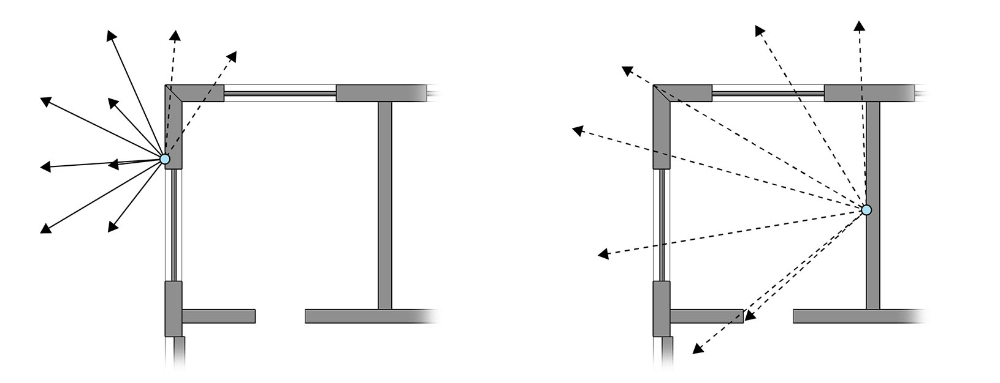
Figuur 18
Een voorbeeld van een ray-castingproces. De afbeelding laat twee raycastingprocessen zien in een 2D-plattegrond van een kamer. Links is een punt zichtbaar omdat de lijnen die eruit worden getrokken niet snijden met geometrie. Rechts is het punt niet zichtbaar omdat alle lijnen die eruit worden getrokken wel snijden met geometrie.
De IfcEnvelopeExtractor gebruikt "voxel assisted ray-casting". Het gebruikt een voxelisatie om de hoeveelheid en lengte van de rays voor het raycastingproces te beperken. Dit wordt gedaan door de voxels die om een punt op een polygoon liggen te evalueren. Als er geen voxels om het punt heen liggen die geclassificeerd zijn als "external" dan kan de aanname worden gedaan dat deze polygoon geen rol speelt bij het modelleren van de buitenschil. Als er wel 'external' voxels om het punt heen liggen dan kunnen de middelpunten van deze voxels worden gebruikt als eindpunt voor de rays. Dit zorgt ervoor dat er geen onnodig lange lijnen worden getrokken waardoor de hoeveelheid berekeningen kan worden teruggedrongen.
Aanvullend kan nog voor de aanvang van het ray-castingproces een filtering van objecten worden gedaan met behulp van de voxels. Met voxels is het makkelijk om te bepalen of ze buiten of binnen het gebouw liggen, maar ook of de voxels snijden met de geometrie. De voxels die snijden met het gebouw en een buurman hebben die buiten het gebouw ligt kunnen worden gezien als een buitenschilvoxels. De geometrie van het gebouw dat snijdt met deze buitenschilvoxels kan worden geïsoleerd en worden gezien als "mogelijk" deel van de buitenschil. Door deze selectie kan ook al een deel van de interne objecten worden genegeerd.
De kwaliteit van de resultaten van deze twee voxelondersteunde processen is erg gevoelig voor het formaat van de voxels. Als de voxels te groot zijn, kan dit resulteren in objecten die incorrect worden verwaarloosd. Als de voxels te klein zijn, vertraagt het process sterk en is het mogelijk dat de buiten- en binnenkant van het gebouw niet correct worden gedetecteerd.
4.3.2.2 Alpha shapes
Alpha shapes of Alpha wrapping is een proces waarbij polygonen worden gemaakt die puntenwolken omsluiten. In het kort: dit wordt gedaan door stapsgewijs een gesloten primitieve vorm (vaak een bal in 3D of een cirkel in 2D) te gebruiken om een polygoon (de alpha shape) bij te snijden totdat deze de puntenwolk strak omhult. De primitieve vorm kan alleen delen van de polygoon wegsnijden als er geen punten in de vorm liggen.
Omdat het alpha-shapeproces enkel werkt met puntenwolken, moet de BIM-geometrie omgezet worden naar een puntenwolk. Dit kan worden gedaan op een vergelijkbare manier als bij de ray-castingprocessen.
De resulterende vorm van de alpha shape is altijd een gesloten object. Dit is een "correct" schilmodel, maar wel een benadering van de buitenschil. De alpha shape is bijna altijd anders dan de BIM-brongeometrie. De alpha shape is een mesh met hoge resolutie die vooral in concave hoeken zal afwijken van de buitenschil van het input-BIM-model.
Noot: Plaats voor alpha shape in GIS
De afwijking in de concave hoeken komt omdat de primitieve vorm die wordt gebruikt om de alpha shape bij te snijden niet diep in de concave hoeken past. Deze afwijking kan in beperkte mate worden gecorrigeerd door de primitief die wordt gebruikt kleiner te maken. Een te kleine primitief zorgt echter voor een trager en minder robuust proces. Aanvullend heeft een kleinere primitief ook een puntenwolk met hogere resolutie nodig. Als de diameter van de primitief kleiner is dan de afstand tussen 2 punten op een polygoon van het BIM-model dan zal deze polygoon niet correct gerepresenteerd worden in de output.
Wang et al. [WANG2024] laten zien dat de alpha shape op zichzelf niet het resultaat hoeft te zijn van de shell-extractie maar ook als een tussenstap kan worden gebruikt. Bij dit onderzoek gebruiken ze de alpha shape om de polygonen die deel zijn van de buitenschil van het BIM-model te vinden. Dit wordt gedaan door te testen welke polygonen van het BIM-model het dichtst bij het zwaartepunt van iedere driehoek van de alpha-shapemesh liggen.
Deze groep van polygonen heeft echter hetzelfde probleem als de groep van polygonen die worden gevonden bij het ray-castingproces. De groep moet worden gecorrigeerd voordat een gesloten buitenschil kan worden gemaakt.
4.3.3 Keuze van een techniek
De technieken sluiten elkaar niet uit en worden in de praktijk vaak gecombineerd. Voxelisatie is robuust en werkt ook bij minder goed gemodelleerde BIM-modellen, maar is minder precies. Raycasting sluit nauwkeurig aan op de BIM-geometrie, maar vraagt een correctiestap om tot een gesloten schil te komen. Alpha wrapping levert altijd een gesloten schil op, maar benadert de vorm en wijkt af in concave hoeken. De IfcEnvelopeExtractor combineert bijvoorbeeld voxelisatie en raycasting.
5. Entiteit en Attribuut BIM naar Geo
Voor het transformeren van BIM- naar Geo-informatie is het mappen van entiteiten en attributen van belang. Waar geometrie vooral de vorm en locatie van een ding vastlegt, beschrijft de entiteit wat het ding is en bevatten attributen gegevens over eigenschappen zoals materiaal, functie, voorkomen, afmeting of classificatie. Bij de transformatie van BIM naar Geo moeten naast geometrie ook deze entiteiten en attributen correct worden vertaald tussen standaarden. Omdat BIM- en Geo-standaarden verschillen in datastructuur, detailniveaus en semantische definities, is dit een uitdaging.
5.1 Entiteitmapping
Er zijn verschillende entiteitmappingen van IFC naar CityGML/CityJSON ontwikkeld ter ondersteuning van de conversie tussen BIM en Geo. Een vroeg voorbeeld is de masterthesis Automatic generation of CityGML LoD3 building models from IFC models van Sjors Donkers [DONKERS2013]. Daarnaast heeft de National University of Singapore een ifc2citygml-mapping (2019) gemaakt. Ook de Technische Universität München (TUM) voorziet in een mapping en converter van IFC naar CityGML 3.0.
De Hong Kong University of Science and Technology (HKUST) heeft IFC-naar-CityGML-mappingen gepubliceerd in een BIM/GIS-omgeving, en de Nationale Technische Universiteit van Athene heeft onderstaande mapping uitgewerkt.
De verschillende mappingen richten zich op verschillende LoD's en/of attribuutmappingen en daarmee op verschillende aspecten van een BIM-naar-Geo-conversie. De benaderingen vullen elkaar aan en laten zien dat er geen algemeen geaccepteerde, uniforme mapping bestaat die alle aspecten van een BIM-naar-Geo-conversie afdekt.
Het is niet mogelijk om elke entiteit in IFC naar een entiteit in het basismodel van CityGML te mappen. Men zal altijd een keuze moeten maken welke entiteiten hierbij van belang zijn. Wel is het mogelijk om een of meer uitbreidingen (Application Domain Extensions, ADE's) op CityGML te maken om alle IFC-entiteiten een plek te bieden. Dit is beschreven door Biljecki et al. in "Extending CityGML for IFC-sourced 3D city models" [BILJECKI2021].
Een voorbeeld van een ADE voor IFC-entiteiten in CityGML is weergegeven in bijlage B.
Naast verschillende Levels of Detail (LoD's) zijn er ook verschillende decompositieniveaus die men vanuit één gedetailleerd BIM-model kan genereren. Zie bijlage A.
Zoals in de BIM basis ILS - hoofdstuk classificatie [BIM-BASIS-ILS] is aangegeven, dient men in BIM naast het juiste gebruik van entiteiten ook de juiste classificatie te gebruiken. Ook classificaties kan men mappen. Er zijn verschillende classificatiestandaarden en objectbibliotheken in BIM en Geo, zoals NL-SfB, NLCS, ETIM, NEN 2767-4 en IMBOR, en soms domeinspecifieke standaarden zoals SATO van Rijkswaterstaat voor tunnels.
Noot: Entiteitmapping op basis van entiteit of op basis van classificatie
5.2 Attribuutmapping
Entiteitmapping beschrijft hoe objecttypen uit een BIM-model worden gekoppeld aan objecttypen in een Geo-model. Attribuutmapping beschrijft hoe de eigenschappen van deze objecten worden vertaald en overgenomen van de attributen van het bronmodel naar die van het doelmodel.
Voor de mapping zijn verschillende opties:
1-op-1-mapping
n-op-1-mapping (aggregatie)
1-op-n-mapping
Afgeleide of berekende attributen
Transformaties tussen hiërarchische niveaus
Externe bronnen
5.2.1 1-op-1-mapping
Sommige attributen kan men direct, 1-op-1, mappen. Zo komt het attribuut "name" van een "IfcBuilding" overeen met het attribuut "naam" van een "IMBOR:Gebouw". Een schets van zo'n mapping van IFC 4.3 naar IMBOR is opgenomen in bijlage D. Beide attributen hebben dezelfde betekenis en kunnen daarom zonder aanvullende transformatie aan elkaar worden gekoppeld. De 1-op-1-mappingen vormen vaak maar een zeer beperkt deel van een totale attribuuttransformatie. Door verschillen in doel, structuur en detailniveau tussen BIM- en Geo-informatiemodellen moeten veel attributen worden afgeleid, geaggregeerd of via aanvullende transformatieregels worden bepaald.
5.2.2 n-op-1-mapping (aggregatie)
Meerdere attributen in het bronmodel worden samengevoegd tot één attribuut in het doelmodel. Een bronmodel kent bijvoorbeeld de attributen "lengte", "breedte" en "hoogte", terwijl het doelmodel (IMBOR) één attribuut "afmetingen" (l × b × h) kent.
Een ander voorbeeld zijn de attributen "straat", "huisnummer" en "postcode", die in een ander model samen het attribuut "adres" vormen.
5.2.3 1-op-n-mapping
Eén attribuut in het bronmodel wordt verdeeld over meerdere attributen in het doelmodel. Een object met objecttype "fietspad rood asfalt" in BIM wordt in CityGML bijvoorbeeld een object met als attribuut functie = "fietspad" en als attribuut type verharding = "asfalt".
Zo kan ook de naam "Bank type B12 groen" in IMBOR worden opgesplitst in objecttype = "Bank", typeaanduiding = "B12" en kleur = "groen".
Ook de NLCS-naam, die meerdere kenmerken in één naam combineert, is hiervan een goed voorbeeld.
5.2.4 Afgeleide of berekende attributen
De waarde van een attribuut in het doelmodel wordt berekend uit gegevens in het bronmodel. Zo kan de gebouwhoogte worden berekend uit de bouwlagen (IfcBuildingStorey) en de geometrie van het BIM-model.
Uit de inhoud van de netto ruimten en de bouwdelen (products) kan de bruto inhoud (conform NEN 2580 [NEN2580]) worden bepaald. Op vergelijkbare wijze kan de bruto vloeroppervlakte (BVO) (conform NEN 2580) worden berekend.
5.2.5 Transformaties tussen hiërarchische niveaus
Zowel in Geo- als in BIM-informatiemodellen komen verschillende decompositieniveaus voor. Attributen van objecten op een hoger decompositieniveau kunnen worden afgeleid of geaggregeerd uit objecten op een lager decompositieniveau. Daarbij is vaak sprake van een specifieke relatie tussen een attribuut van een samengesteld object en een attribuut van één of meerdere onderliggende objecttypen waaruit dat object is opgebouwd.
Zo kan een objecttype "elementverharding" op een lager decompositieniveau bestaan uit een band, trottoirkolkdeksels en bestrating. Het attribuut "formaat" op het hogere decompositieniveau betreft het formaat van de stenen of tegels in het bestratingsvlak, niet het formaat van de band of de trottoirkolk die ook deel uitmaken van de elementverharding. Het formaat kan dus alleen worden afgeleid uit de hele stenen waaruit het bestratingsvlak op het lagere decompositieniveau bestaat.
Daarom zijn expliciete afleidings- of aggregatieregels nodig, waarin wordt vastgelegd van welk onderliggend objecttype en attribuut de waarde op een hoger decompositieniveau wordt afgeleid.
Bij een conversie van IFC naar CityGML is het niet altijd mogelijk om alle benodigde informatie uitsluitend uit het IFC-model af te leiden. Externe bronnen kunnen onder meer worden ingezet voor het aanvullen van ontbrekende attributen, het bepalen van classificaties, het afleiden van functies of het verrijken van objecten met contextinformatie. Voorbeelden hiervan zijn basisregistraties (zoals adressen- en gebouwenregistraties), topografische datasets en hoogtebestanden.
5.3 Combinatie van mappingroutes
Een volledige entiteit- en attribuutmapping van BIM naar Geo is in de praktijk een combinatie van de hierboven beschreven opties, zoals beschreven in Extending CityGML for IFC-sourced 3D city models [BILJECKI2021].
In deze figuur staat "0" voor de informatie die niet van BIM naar Geo hoeft te gaan. Het getal "1" staat voor aanwezig in CityGML en "2" voor een aanvulling op CityGML in de vorm van een ADE. Het getal "3" staat voor de externe bronnen die kunnen ondersteunen bij het genereren van CityGML. De letter "a" staat voor de directe 1-op-1-mappingen en "b" voor de procesmappingen.
Onderstaand voorbeeld laat zien hoe al deze routes binnen één conversie van BIM naar Geo worden gebruikt. Meubels worden buiten beschouwing gelaten voor de conversie ("0"). Voor de entiteit raam bestaat een 1-op-1-mapping naar CityGML ("1a"). Het aantal verdiepingen kan worden berekend en in CityGML worden vertaald ("1b"). Het materiaaltype van een object kan een 1-op-1-mapping naar een CityGML-ADE zijn ("2a"); het aantal toegangspunten van een ruimte kan een procesmapping naar een ADE zijn ("2b"). Ten slotte is het aantal bewoners alleen vanuit externe bronnen ("3") toe te voegen.
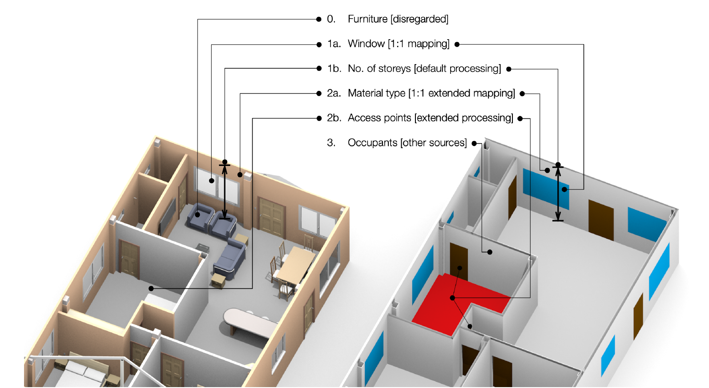
Figuur 25Voorbeeld van routes van attribuutmapping binnen één conversie
Hieronder is een voorbeeldresultaat van bovenstaande attribuutmapping weergegeven. Een aantal attributen op gebouwniveau maakt deel uit van het basismodel van CityGML. Aanvullende ADE-properties geven na de mapping meer informatie over dit gebouw.
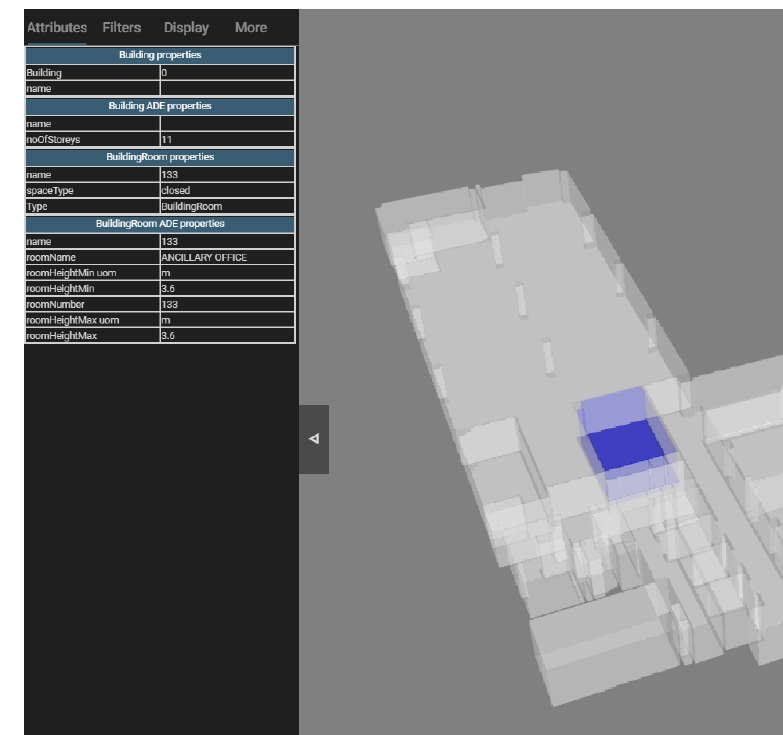
Figuur 26Voorbeeldresultaat van attribuutmapping met CityGML- en ADE-attributen
6. Levenscyclus van BIM naar Geo
6.1 Levenscyclus volgen GEBORA
Geo- en BIM-objecten kunnen hetzelfde fysieke bouwwerk beschrijven, maar vanuit verschillende perspectieven en detailniveaus. Gedurende de gehele levenscyclus van een bouwwerk, van ontwerp en realisatie tot beheer, renovatie en sloop, staan deze objecten met elkaar in relatie. Wijzigingen in BIM-objecten, zoals aanpassingen aan afmetingen, functies of constructieve elementen, hebben gevolgen voor de Geo-objecten. Een consistente koppeling tussen Geo- en BIM-data is daarom essentieel om informatie gedurende de levenscyclus van een object actueel en betrouwbaar te houden.
Wanneer een functionele behoefte bestaat (bijvoorbeeld men wil wonen) dan wordt er een technische uitwerking gemaakt van een object dat voorziet in de functionele behoefte. Er wordt bijvoorbeeld een woning ontworpen. De technische entiteit werkt men vaak uit in BIM. Na verschillende ontwerp-iteraties realiseert men de entiteit en voorziet het, bij goed ontwerp, in de functionele behoefte.
6.2 Maatregel en status
Een entiteit kan een maatregel en een status van deze maatregel meekrijgen. Op basis van deze maatregel en status kan de BIM-naar-Geo conversie tot verschillende acties leiden.
6.2.1 Maatregel
In BIM definieert men een maatregel die men uit kan voeren op een entiteit. Dit kan volgens de GWSW-maatregelontologie een van de volgende maatregelen zijn:
Aanleggen
Buiten gebruik stellen
Conserveren
Onderhouden
Onderzoeken
Renoveren
Repareren
Vervangen
Verwijderen
6.2.2 Status maatregel
Een maatregel heeft daarnaast een status. Deze status kan zijn:
Gepland
In uitvoering
In voorbereiding
Uitgevoerd
Vervallen
Zowel de maatregel als de status maatregel zijn nodig om te weten op welke manier men een entiteit van BIM naar Geo moet brengen.
6.2.3 Status functioneren
Naast de status van de maatregel kent een bouwwerk een status functioneren. Deze beschrijft in welke fase van de levenscyclus het bouwwerk zelf zich bevindt, los van de werkzaamheden die eraan worden uitgevoerd. De status functioneren kan zijn:
In ontwerp (ONT)
In aanleg
In gebruik (ACT)
Buiten gebruik
De maatregel hoort bij het BIM-object. Het Geo-object neemt de maatregel en de status maatregel alleen over in een planversie, zolang de maatregel nog niet is uitgevoerd. De status functioneren van het Geo-object volgt die van het BIM-object pas wanneer de status maatregel Uitgevoerd is. Tot dat moment blijft in de Geo-omgeving de bestaande situatie geldig.
6.2.4 Van BIM-object naar Geo-object
Onderstaande tabel laat voor een bouwwerk zien welke maatregel, status maatregel en status functioneren het BIM-object en het Geo-object hebben, en hoe de Geo-omgeving reageert op het BIM-object.
Situatie
BIM-object
Geo-object
Reactie in de Geo-omgeving
Maatregel
Status maatregel
Status functioneren
Maatregel
Status maatregel
Status functioneren
Aanleg in ontwerp
Aanleggen
Gepland of In voorbereiding
In ontwerp (ONT)
Aanleggen¹
Gepland of In voorbereiding¹
In ontwerp (ONT)¹
Planversie maken¹, anders geen actie
Aanleg in uitvoering
Aanleggen
In uitvoering
In aanleg
Aanleggen¹
In uitvoering¹
In aanleg¹
Planversie bijwerken¹
Gerealiseerd
Aanleggen
Uitgevoerd
In gebruik (ACT)
–
–
In gebruik (ACT)
Geo-object maken; een eventuele planversie krijgt een "nen3610:eindgeldigheid"
Wijziging in ontwerp
Bijv. Renoveren
Gepland of In voorbereiding
In gebruik (ACT)
Renoveren¹
Gepland of In voorbereiding¹
In gebruik (ACT)
Bestaande versie blijft geldig, eventueel met een planversie ernaast¹
Gewijzigd
Bijv. Renoveren
Uitgevoerd
In gebruik (ACT)
–
–
In gebruik (ACT)
Geo-object wijzigen: nieuwe versie; de vorige versie krijgt een "nen3610:eindgeldigheid"
Buiten gebruik gesteld
Buiten gebruik stellen
Uitgevoerd
Buiten gebruik
–
–
Buiten gebruik
Geo-object wijzigen: nieuwe versie zonder "nen3610:eindgeldigheid"
Verwijderd
Verwijderen
Uitgevoerd
Buiten gebruik
–
–
Buiten gebruik
Afhankelijk van de afspraken in de Geo-omgeving: Geo-object in de historie plaatsen (de laatste versie krijgt een "nen3610:eindgeldigheid" en het object een "nen3610:objectEindtijd", zie Versies in de levenscyclus) of daadwerkelijk uit de database verwijderen
Vervallen
Elke maatregel
Vervallen
Ongewijzigd
–
–
Ongewijzigd
Geen BIM-naar-Geo-conversie; een eventuele planversie vervalt
¹ Alleen wanneer de Geo-omgeving plangegevens ontvangt.
De status van de maatregel zegt dus iets over de werkzaamheden, de status functioneren iets over het bouwwerk. Een uitgevoerde maatregel kan de status functioneren van een bouwwerk veranderen. Een bouwwerk met de maatregelAanleggen heeft tijdens de uitvoering de status functionerenIn aanleg. Wanneer de maatregel Uitgevoerd is, wordt de status functioneren In gebruik (ACT). Na een uitgevoerde maatregel Buiten gebruik stellen wordt de status functioneren Buiten gebruik. Bij maatregelen zoals Onderhouden of Repareren blijft de status functioneren in de regel In gebruik (ACT).
Bij een BIM-naar-Geo-conversie helpt de status functioneren om de bestaande situatie te onderscheiden van de plansituatie. Objecten met de status functioneren In ontwerp (ONT) of In aanleg horen bij de toekomstige situatie, objecten met de status In gebruik (ACT) bij de huidige situatie.
Een verplaatsing van een object kan men modelleren als een tweevoudige wijziging waarin het object een versie met de maatregel "verwijdering" en een versie met de maatregel "plaatsing" krijgt.
6.3 Versies in de levenscyclus
Wanneer men BIM naar Geo brengt, kan men bestaande Geo-data wijzigen. Er kunnen nieuwe objecten ontstaan, er kunnen objecten verdwijnen of er kunnen nieuwe versies van bestaande Geo-objecten ontstaan. Ook is het in theorie mogelijk om een BIM-object op te nemen als één van de versies van een registratie-object. Het plan is dan geen apart object, maar een versie in de versiegeschiedenis van datzelfde object. Ook kan een BIM een eigen versie-reeks hebben. Een BIM-versie kan dan eventueel als planversie in de Geo-omgeving worden opgenomen.
Onderstaand voorbeeld toont hoe meerdere versies van een bouwwerk gemodelleerd kunnen worden. Een "nen3610:begingeldigheid" geeft aan vanaf wanneer een versie geldig is. Een "nen3610:eindgeldigheid" beschrijft wanneer een versie niet meer geldig is. Wanneer een versie geen waarde heeft voor "nen3610:eindgeldigheid" bestaat het object, en is dus geldig. Wanneer een bouwwerk buiten gebruik wordt gesteld, ontstaat een nieuwe versie die de status functioneren "Buiten gebruik" heeft, met een "nen3610:begingeldigheid" die overeenkomt met de "nen3610:eindgeldigheid" van de vorige versie. Deze versie heeft geen "nen3610:eindgeldigheid": het bouwwerk bestaat nog, maar is niet meer in gebruik. Wanneer een bouwwerk daadwerkelijk verwijderd wordt, krijgt de laatste versie ook een "nen3610:eindgeldigheid". Voor het object kan men met nen3610:ObjectEindtijd" een tijdsaanduiding meegeven waarop het object in de werkelijkheid niet meer geldig is. Gaat aan het verwijderen een periode vooraf waarin het bouwwerk buiten gebruik is, dan wordt dat vastgelegd met de maatregel Buiten gebruik stellen: er ontstaat een versie met de status functioneren "Buiten gebruik". Bij het verwijderen krijgt de laatste versie een eindGeldigheid en het object een objectEindtijd. Wordt een bouwwerk direct vanuit gebruik verwijderd, dan is geen tussenversie nodig: de objectEindtijd legt vast dat het object niet meer bestaat.
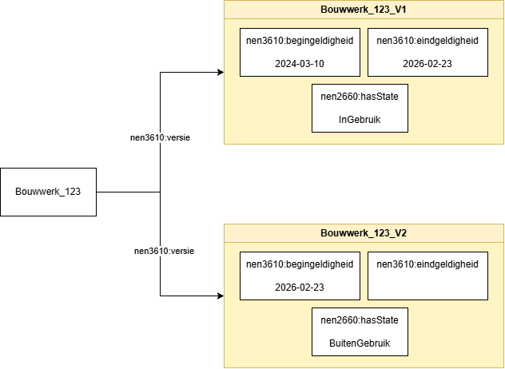
Figuur 28
Voorbeeld van een bouwwerk dat in een nieuwe versie buiten gebruik is.
Onderstaand voorbeeld toont de Geo- en BIM-versies van een bouwwerk. Een bouwwerk in een BIM-omgeving kan een plan zijn voor een bestaand bouwwerk die bestaat in een (Geo-)registratie. Het plan kan dan een versie zijn van het bouwwerk. Wanneer het plan (BIM) daadwerkelijk gerealiseerd is, is de versie van het plan "nen3610:eindgeldigheid". Er ontstaat dan een versie die een gerealiseerd plan is met een "nen3610:begingeldigheid". Dit gerealiseerde plan "invalideert" een versie in de Geo-omgeving en genereert een versie in de Geo-omgeving. Er kan een relatie gelegd worden tussen een BIM-reeks en een GEO-reeks met de relaties nen2660:isPlanFor uit het NEN2660 vocabulair en prov:generated uit het PROV vocabulair.
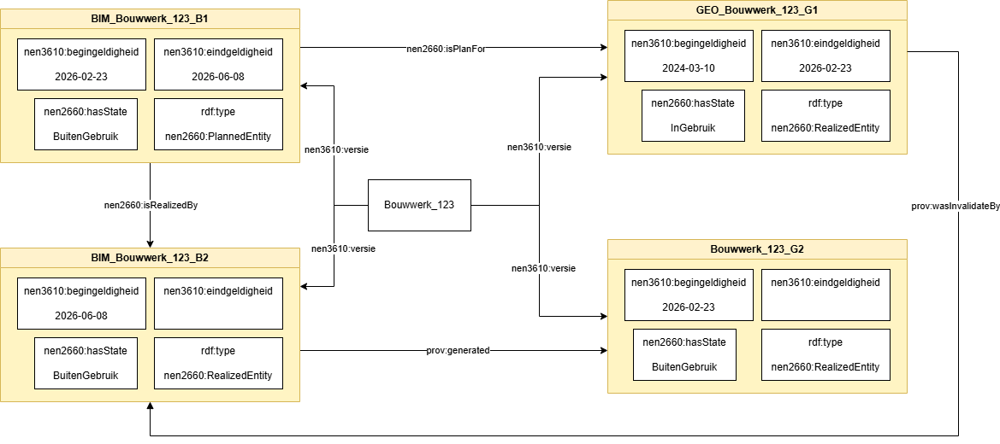
Figuur 29
Voorbeeld van een bouwwerk met Geo- en BIM-versies, waarbij een gerealiseerde BIM-versie een Geo-versie genereert.
Onderstaande tabel toont de levenscyclus van een bouwwerk van aanleg tot verwijdering. Het BIM-model en het Geo-object hebben elk een eigen reeks versies (B1, B2, … en G1, G2, …). Een nieuwe versie geeft de vorige versie een eindGeldigheid. In BIM ontstaat in elke fase een nieuwe versie; in de Geo-omgeving pas wanneer de status maatregel Uitgevoerd is.
Fase
Maatregel
Status maatregel
BIM-versie (status functioneren)
Geo-versie (status functioneren)
Aanleg in ontwerp
Aanleggen
Gepland of In voorbereiding
B1 geldig (In ontwerp)
– ¹
Aanleg in uitvoering
Aanleggen
In uitvoering
B1 eindGeldigheid, B2 geldig (In aanleg)
– ¹
Gerealiseerd
Aanleggen
Uitgevoerd
B2 eindGeldigheid, B3 geldig (In gebruik)
G1 geldig en het object een objectBegintijd (In gebruik)
Wijziging in ontwerp
Bijv. Renoveren
Gepland of In voorbereiding
B3 eindGeldigheid, B4 geldig (In gebruik)
G1 geldig (In gebruik) ¹
Gewijzigd
Bijv. Renoveren
Uitgevoerd
B4 eindGeldigheid, B5 geldig (In gebruik)
G1 eindGeldigheid, G2 geldig (In gebruik)
Buiten gebruik stellen in ontwerp
Buiten gebruik stellen
Gepland of In voorbereiding
B5 eindGeldigheid, B6 geldig (In gebruik)
G2 geldig (In gebruik) ¹
Buiten gebruik gesteld
Buiten gebruik stellen
Uitgevoerd
B6 eindGeldigheid, B7 geldig (Buiten gebruik)
G2 eindGeldigheid, G3 geldig (Buiten gebruik)
Verwijderen in ontwerp
Verwijderen
Gepland of In voorbereiding
B7 eindGeldigheid, B8 geldig (Buiten gebruik)
G3 geldig (Buiten gebruik) ¹
Verwijderd
Verwijderen
Uitgevoerd
B8 eindGeldigheid (eindstand)
G3 eindGeldigheid (eindstand) en het object een objectEindtijd
6.4 Toepassing van levenscyclus in basisregistraties
De tabellen hierboven beschrijven de levenscyclus op een algemene manier, op basis van NEN 3610 [NEN3610]. In de praktijk legt elke registratie de levenscyclus op een eigen manier vast. Grofweg zijn er drie benaderingen:
een statuslevenscyclus: het object houdt van plan tot sloop dezelfde identificatie en doorloopt verschillende statussen (bijvoorbeeld BAG en IMKL);
alleen de bestaande situatie met formele historie: een object vervalt wanneer het niet meer bestaat, maar de identificatie blijft geregistreerd (BGT);
een apart planobject naast het bestaande object, met een eigen identificatie en de plus-status 'plan' of 'historie' (IMGeo).
Voor een BIM-naar-Geo-conversie bepaalt deze benadering of plangegevens kunnen worden opgenomen, of een plan leidt tot een nieuwe versie of een nieuw object, en hoe het einde van een object wordt vastgelegd. Hieronder is dit voor een aantal registraties uitgewerkt.
6.4.1 BGT en IMGEO
De BGT legt alleen de bestaande situatie vast, met formele historie; toekomstige topografie hoort niet in de BGT. IMGeo kan daarnaast plantopografie bevatten, als apart planobject met een eigen identificatie. Onderstaande tabel vergelijkt per situatie de tabel over de levenscyclus hierboven met de werkwijze in BGT en IMGeo.
Situatie
Tabel nu
BGT
IMGeo
Aanleg in ontwerp / in uitvoering
Planversie¹
Geen actie: toekomstige topografie hoort niet in de BGT
Apart planobject met eigen ID, plus-status 'plan', zonder plaatsbepalingspunten. Geen onderscheid ontwerp/aanleg
Gerealiseerd (nieuw object)
Geo-object maken; planversie krijgt een eindgeldigheid
Nieuw object met objectBeginTijd = tijdstipRegistratie
Het planobject blijft bestaan met dezelfde ID; plus-status gaat van 'plan' naar 'bestaand'
Wijziging in ontwerp
Bestaande versie geldig, planversie ernaast
Geen actie
Bestaand object plus een apart planobject met eigen ID
Gewijzigd
Nieuwe versie; vorige krijgt een eindgeldigheid
Klopt: zelfde ID, nieuwe versie; vorige krijgt eindRegistratie
Geometrie van het planobject gaat naar het bestaande object (ID blijft). Het planobject wordt beëindigd en houdt status 'plan'
Buiten gebruik gesteld
Nieuwe versie met Buiten gebruik
Komt niet voor: geen status functioneren. Bestaat het fysiek nog, dan verandert er niets
Idem
Verwijderd
Historie (eindgeldigheid) of uit de database
Klopt met historie: het object vervalt (objectEindTijd = eindRegistratie), de ID blijft geregistreerd. Uit de database verwijderen komt niet voor
Optioneel plus-status 'historie'
Vervallen
Planversie vervalt
Geen actie
Planobject beëindigen
¹ Alleen wanneer de Geo-omgeving plangegevens ontvangt.
6.4.2 BAG
De BAG houdt zowel materiële als formele historie bij, volgens het Historiemodel BAG 2018 [BAG-HISTORIE]. Elke wijziging, zoals een statuswijziging van "Pand in gebruik" naar "Verbouwing pand", levert geen nieuw object op, maar een nieuw voorkomen van hetzelfde object. Het vorige voorkomen krijgt een eindGeldigheid en een eindRegistratie. De begingeldigheid volgt uit een brondocument, zoals een vergunning, en kan ook in de toekomst liggen. Daardoor kan de BAG een plansituatie al vastleggen.
Het einde van een object legt de BAG niet vast met een eindGeldigheid, maar met een eindstatus op het laatste voorkomen, bijvoorbeeld "Pand gesloopt". Dat laatste voorkomen houdt geen eindGeldigheid, zodat het object later nog kan "herleven". Correcties met terugwerkende kracht zijn niet toegestaan: een fout wordt hersteld als een reguliere wijziging. Alleen een voorkomen met een begingeldigheid in de toekomst mag inactief worden gemaakt.
Ten opzichte van de tabel over de levenscyclus betekent dit dat de BAG plan, uitvoering en realisatie als opeenvolgende voorkomens van één object vastlegt. De rij Verwijderd verloopt in de BAG via een eindstatus in plaats van een eindGeldigheid.
6.4.3 IMKL
IMKL [IMKL], het informatiemodel voor de uitwisseling van kabels en leidingen (KLIC), is een uitbreiding op het INSPIRE-thema Utility Networks. IMKL beschrijft alleen de huidige situatie: er zijn geen verschillende versies van hetzelfde object in omloop. De levenscyclus wordt vastgelegd met de INSPIRE-attributen:
validFrom: het tijdstip waarop het object in de werkelijkheid voor het eerst aanwezig is. Voor geplande objecten kan dit in de toekomst liggen;
validTo: het tijdstip vanaf wanneer het object niet meer in de werkelijkheid voorkomt, bijvoorbeeld wanneer een kabel uit de grond is gehaald;
beginLifespanVersion en endLifespanVersion: het moment waarop het object in de registratie van de bronhouder is aangemaakt en daaruit is verwijderd. Omdat IMKL alleen de huidige situatie beschrijft, is endLifespanVersion altijd leeg.
De toestand van een net-element wordt aangegeven met currentStatus. INSPIRE kent hiervoor de waardelijst ConditionOfFacilityValue met vijf waarden: functional, projected, underConstruction, disused en decommissioned. IMKL beperkt deze in de IMKL-waardelijstConditionOfFacilityIMKLValue tot drie waarden:
geprojecteerd (projected): "De faciliteit wordt ontworpen. De bouwwerkzaamheden zijn nog niet begonnen."
functioneel (functional): "De faciliteit is functioneel."
buiten gebruik (disused): "De faciliteit wordt niet meer gebruikt, maar wordt niet of is niet ontmanteld."
Ten opzichte van de tabel over de levenscyclus kent IMKL dus geen aparte status voor een leiding in aanleg (underConstruction) of een ontmantelde leiding (decommissioned). Een verwijderde leiding wordt vastgelegd met validTo, net als de objectEindtijd in NEN 3610. Leidingen die buiten gebruik zijn, blijven onderdeel van IMKL: ze liggen nog in de grond en zijn relevant bij graafwerkzaamheden. Met de huidige modellering is het niet mogelijk om een geplande statuswijziging uit wisselen. Dit komt omdat er van ieder object slechts 1 versie wordt uitgewisseld en bij een geplande wijziging is er sprake van twee versies: de huidige en de gepland. Geplande aanleg en verwijdering kunnen wel uitgewisseld worden omdat er dan slechts 1 versie hoeft te worden uitgewisseld.
6.5 Weergave van plan- en bestaande situatie
Bij het integreren van BIM in Geo ontstaat een uitdaging rondom de levenscyclus van objecten. Een geplande geometrie uit een BIM-model wordt gecombineerd met de bestaande Geo-registratie, maar zonder correcte toepassing van tijds- en levenscyclusattributen blijft de geometrie van bouwwerken die in ontwerp zijn, zichtbaar. Hierdoor worden de huidige en toekomstige situaties overlappend weergegeven.
Bovenstaand voorbeeld is gemaakt met een toepassing die gebruik maakt van 3D Tiles volgens de [3DTILES]-standaard. Deze standaard kent de functie "style.show". Hierin kan men met een boolean (true/false) per object (feature) aangeven of deze wordt weergegeven. Het brengen van BIM naar Geo en het correct weergeven van temporele (ontwerp)situaties is geen opgave voor een standaard, maar voor de applicaties en toepassingen.
7. BIM naar Geo-datasets
Op het moment van schrijven worden BIM-modellen beperkt ingezet als bron voor het voeden van geo-basisregistraties en landelijke of regionale geo-datasets. In de praktijk worden deze registraties veelal bijgewerkt via afzonderlijke, vernieuwde inmetingen, administratieve processen of andere gegevensbronnen. De toenemende beschikbaarheid van kwalitatief hoogwaardige open BIM-modellen biedt een kans om dit proces te verbeteren. Door relevante gegevens uit BIM-modellen op een gestandaardiseerde en geautomatiseerde wijze te ontsluiten, kunnen geo-datasets actueler, consistenter en efficiënter worden gecreëerd en beheerd, terwijl dubbele gegevensverzameling wordt verminderd.
Om een BIM-model te kunnen converteren naar een geo-dataset, moet het voldoen aan vooraf gedefinieerde modeleisen. Als de benodigde geometrie, attributen of classificaties in BIM ontbreken, kan geo-informatie voor een bepaalde geo-dataset niet of niet volledig uit het BIM-model worden afgeleid. De modeleisen voor BIM verschillen per geo-dataset. Dit komt doordat elke geo-datasets een eigen informatiemodel, objectdefinities en attribuutvereisten kent. Het beoogde doel (de target geo-dataset) bepaalt daarom welke informatie in het BIM-model aanwezig moet zijn om een succesvolle conversie mogelijk te maken.
7.1 Overzicht van landelijke datasets
Onderstaande tabel geeft een aantal landelijke en regionale datasets, met het informatiemodel en het LOD van de geometrie. De tabel is niet uitputtend.
Overzicht van een aantal nationale/regionale datasets
De vereisten die per Geo-dataset gesteld moeten worden aan een BIM-model zijn op te delen in twee categorieën: geometrische vereisten en semantische vereisten. De geometrische vereisten beschrijven de benodigde geometrische representatie en het vereiste detailniveau (LOD), terwijl de semantische vereisten betrekking hebben op de benodigde attributen, classificaties en eigenschappen voor de betreffende geo-dataset. De vereisten stelt men vast in informatieleveringsspecificaties (ILS'en). Hoe een ILS is opgebouwd en welke generieke eisen gelden, staat in InformatieLeveringsSpecificatie (ILS).
Het opdelen van ILS'en in afzonderlijke specificaties maakt hergebruik van informatie-eisen mogelijk. Door geometrische eisen en semantische eisen apart te definiëren, kunnen onderdelen van een ILS opnieuw worden toegepast voor verschillende geo-datasets. Hierdoor hoeft niet voor iedere nieuwe toepassing een volledige ILS opnieuw te worden opgesteld en kunnen bestaande specificaties efficiënter worden beheerd en onderhouden. Zo kan de ILS-Gebouw-LOD0vlak worden hergebruikt voor BGT en BAG. De conversie verschilt wel: de BGT gebruikt de voetafdruk op maaiveld, de BAG het bovenaanzicht (dakomtrek volgens de BAG-regels (zonder dakoverstekken)), zie Uitbreidingen & aanpassingen van de LOD-frameworks. Ook een generieke ILS-Basisregistratie, met begrippen als identificatie, objectBegintijd, objectEindtijd, relatieveHoogteligging en status, kan bij meerdere registraties worden hergebruikt. Hoe de levenscyclus per registratie verschilt, staat in Toepassing van levenscyclus in basisregistraties.
7.3 Toepassingsprofielen
Onderstaand overzicht laat zien hoe verschillende ILS'en in samenhang kunnen worden toegepast voor landelijke datasets. Bij elke dataset hoort een transformatieprofiel, bijvoorbeeld BIM2BGT: de afspraken over de LOD-definitie, de ILS, de object- en attribuutmapping en de transformatieregels, zoals aanbevolen in Uitbreidingen & aanpassingen van de LOD-frameworks. De eisen die in deze ILS'en thuishoren, zijn uitgewerkt in Van BIM-eis naar Geo-product; de tabel in Overzicht: welke eisen bij welk Geo-product geeft per Geo-product dezelfde samenstelling van ILS'en. Het overzicht is verkennend en bedoeld als inspiratie voor verdere uitwerking.
Een succesvolle transformatie van een BIM-model naar een GIS-bestandsformaat begint bij het maken van de juiste afspraken vóór de start van het modelleerwerk. Zonder duidelijke kaders bestaat de kans dat een BIM-model te complex of kwalitatief ontoereikend is. Dit kan de mogelijkheden voor gebruik in een geografisch informatiesysteem en conversie naar Geo, in een later stadium, beperken.
Een BIM-model is vaak niet geschikt voor hergebruik in een geografisch informatiesysteem. Een model dat men maakt en gebruikt voor ontwerp, calculatie en/of uitvoering, kan tegelijkertijd onbruikbaar zijn voor conversie naar Geo omdat de informatie die nodig is voor de conversie niet is vastgelegd. Redenen zijn: de georeferentie ontbreekt, de gebruikte eenheden zijn onduidelijk, objecten zijn gemodelleerd als generieke bouwdelen zonder typering (zonder ObjectType of Name), of de geometrie is visueel acceptabel maar niet gesloten. Zulke tekortkomingen zijn achteraf niet of alleen tegen hoge kosten te herstellen.
Een succesvolle transformatie van BIM naar een GIS-formaat begint daarom vóór het modelleerwerk, met expliciete afspraken over hoe er wordt gemodelleerd en wat er wordt geleverd, in welke vorm en met welke kwaliteit. Door deze afspraken te maken en ze bij het modelleren na te leven, wordt automatische conversie betrouwbaar, robuust en herhaalbaar. Zonder kaders blijft elke conversie handwerk, en daarmee een eenmalige exercitie in plaats van een reproduceerbaar proces.
Voor het vastleggen van die afspraken biedt de ISO 19650-reeks [ISO19650-1], de internationale norm voor informatiemanagement in de gebouwde omgeving, het procesframework: wie levert welke informatie, wanneer, in welke vorm en op basis waarvan wordt die informatie geaccepteerd.
8.2 Informatieketen volgens ISO 19650
ISO 19650 gaat uit van een ketenbenadering. Informatie wordt niet alleen voor de eigen organisatie gecreëerd, maar juist voor uitwisseling en hergebruik door andere partijen. Dat uitgangspunt is voor GeoBIM essentieel: de partij die het BIM-model maakt is doorgaans niet de partij die er in de Geo-omgeving mee verder werkt.
De norm kent daarvoor een cascade van informatiebehoeften. Elke eis in een informatieleveringsspecificatie (ILS) is uiteindelijk te herleiden tot een organisatiedoel. Een eis die niet tot een doel te herleiden is, kan worden geschrapt. Door die keten expliciet te maken, wordt voorkomen dat een ILS eisen bevat zonder duidelijk doel.
Behoefte/Eis
Voorbeeld
Organizational Information Requirement (OIR)
"Wij willen vastgoed beheren en daarom hebben wij informatie nodig." "Wij willen vergunningen beoordelen op Omgevingsplan of Technische activiteit en daarom hebben wij informatie nodig."
Asset Information Requirements (AIR)
"Voor vastgoedbeheer hebben wij de gegevens nodig van gebruiksfuncties, materiaal, onderhoud, levensduur, constructie en gebruik."
Asset Information Model (AIM)
"In het assetbeheersysteem kennen wij het object 'Ruimte', 'Geleiderrail', 'Airco-unit', 'Buitengevel' of 'Dakafwerking' met de attributen 'materiaal', 'levensduur', 'constructie' en 'gebruik', en de activiteit 'onderhoud' die een koppeling krijgt naar een gebouw."
Project Information Requirements (PIR)
"Voor de renovatie van dit bouwwerk hebben wij informatie nodig om het ontwerp, de realisatie en de toekomstige overdracht naar beheer mogelijk te maken."
Exchange Information Requirements (EIR)
"Deze asset- en projectinformatie moet door deze betrokken partijen op afgesproken momenten en in afgesproken formats worden geleverd."
Project Information Model (PIM)
"Tijdens het project wordt deze informatie vastgelegd in het Project Information Model een set met allerlei verschillende bestanden, databases etc. "Informatie containers" volgens de norm"; materiaal, levensduur en constructie worden na oplevering doorgegeven aan het Asset Information Model."
IFC-model (BIM)
"Gestructureerde data en de geometrie van bouwwerken worden in projecten vaak uitgewisseld als IFC-STEP-bestanden, vooral tussen teken- en modelleersystemen"
Een ILS is in deze termen de Nederlandse invulling van een EIR (Exchange Information Requirements). De herziening van ISO 19650 (DIS 2026) vervangt de term EIR door IPR (Information Product Requirement) en gaat van een 8- naar een 9-stapsproces.
8.3 Generieke eisen aan het BIM-model voor conversie naar Geo
Onderstaande onderwerpen komen in vrijwel elke BIM-naar-Geo-toepassing terug. Ze zijn geordend van drager (bestand / information container) naar inhoud (geometrie en semantiek). Welke van deze eisen daadwerkelijk gelden en hoe streng, hangt af van het Geo-product dat gemaakt moet worden; die koppeling wordt gelegd in Van BIM-eis naar Geo-product.
8.3.1 Bestandsformaat en schema
Leg vast in welk schema geleverd wordt. IFC4 en IFC4X3_ADD2 (gepubliceerd als ISO 16739-1:2024 [ISO16739-1]) zijn de schema's waarop de huidige generatie IDS- en conversiesoftware is gebouwd; IFC2X3 wordt door veel software nog ondersteund, maar mist IfcMapConversion en IfcProjectedCRS en is daarmee ongeschikt voor een sluitende georeferentie. Veel BIM-software kan IFC in meerdere versies exporteren, maar staat standaard nog vaak op IFC2X3. Leg daarom in de leveringsafspraak niet alleen vast dát er een IFC-bestand wordt geleverd, maar ook met welke exportinstellingen het wordt gemaakt: schema IFC4 of IFC4X3_ADD2, met georeferentie.
Noot: Bestandsformaat en schema
8.3.2 Bestandsnaamgeving en informatiecontainers
Bestandsnaamconventies beschrijven afspraken voor het eenduidig identificeren en beheren van informatiebestanden. De bestandsnaam bevat alleen de metadata die nodig zijn voor beheer en uitwisseling. Gegevens als projectcode, discipline, status en versie horen niet allemaal in de bestandsnaam; leg deze vast in het model, bijvoorbeeld in Pset_ProjectInformation. [ISO19650-4] biedt hiervoor een uitgewerkte conventie.
8.3.3 Eenheden en maatvoering
Consistent gebruik van eenheden voorkomt schaalfouten bij conversie. Fouten van factor 1000 (millimeter versus meter) of 0,3048 (voet versus meter) zijn in de praktijk de meest voorkomende oorzaak van modellen die op een verkeerde locatie of op een verkeerde schaal in de GIS-omgeving belanden. Leg vast welke eenheden gelden, laat de eenheden expliciet in IfcUnitAssignment opnemen, en toets bij ontvangst of de bounding box van het model binnen een plausibele orde van grootte valt.
8.3.4 Georeferentie
Georeferentie is de meest kritische eis: zonder correcte georeferentie is elk ander gegeven in het model ruimtelijk onbruikbaar. Per project wordt een methode van georeferentie gekozen en vastgelegd. Zie hiervoor de praktijkrichtlijn Georefereren GeoBIM [GEOBIM-GEOREF].
Noot: Georeferentie op level 50
8.3.5 Ruimtelijke structuur
De conversie naar Geo is afhankelijk van de hiërarchie in het model. Een IfcWall die niet in een IfcBuildingStorey zit en een IfcBuildingStorey die niet aan een IfcBuilding is gekoppeld, zijn niet toe te wijzen aan een gebouw of bouwlaag, en daarmee niet af te leiden naar een pand, een gebouwhoogte of een verdiepingsoppervlak.
Noot: Volledige ruimtelijke structuur
8.3.6 Semantische typering
Voor een betrouwbare conversie is het noodzakelijk dat objecten zijn toegewezen aan een passende entiteit uit een nationaal of internationaal informatiemodel, in dit geval het IFC-schema. Een model waarin gevels, daken en vloeren allemaal als IfcBuildingElementProxy zijn geëxporteerd, is geometrisch volledig, maar bevat geen bruikbare semantiek.
Naast de entiteit is het PredefinedType van belang: het onderscheid tussen IfcSlab.FLOOR en IfcSlab.ROOF bepaalt of een vlak als grond- of als dakvlak wordt geïnterpreteerd, en een IfcSpace met PredefinedType = GFA of PARKING is iets anders dan een IfcSpace met PredefinedType = SPACE.
Noot: Semantische typering
8.3.7 Nationale typering met het USERDEFINED-patroon
De types en enumeraties in het IFC-schema zijn internationaal vastgesteld en dekken de nationale begrippen niet volledig. Zo kent IfcSpaceTypeEnum in IFC4 zes waarden (SPACE, PARKING, GFA, INTERNAL, EXTERNAL en USERDEFINED), terwijl het Nederlandse bouwregelgevingsdomein tientallen ruimtelijke begrippen onderscheidt: verblijfsgebied, verblijfsruimte, functiegebied, functieruimte, gebruiksgebied, bedgebied, restruimte, buitenruimte, tarraruimte, brandcompartiment, subbrandcompartiment, vluchtroute. Die begrippen zijn juridisch gedefinieerd en niet onderling uitwisselbaar; ze zijn evenmin terug te brengen tot de zes internationale waarden zonder betekenisverlies.
Het IFC-schema voorziet hierin. Het te gebruiken patroon is: PredefinedType = USERDEFINED, met de nationale term in ObjectType bij een occurrence (instantie), of in ElementType wanneer het type-object (IfcSpaceType) de drager is. Dit is de route die het schema zelf voorschrijft: de CorrectPredefinedType-where-rule van IfcSpace schrijft voor dat ObjectType moet bestaan zodra PredefinedType de waarde USERDEFINED heeft. Deze combinatie blijft daarmee volledig binnen het schema en de validatieregels.
De verwachting is dat elk land deze aanpak volgt: nationale ruimtelijke concepten in de eigen taal en de eigen regelgeving, ondergebracht in een eigen, gepubliceerde USERDEFINED-lijst. Deze praktijkrichtlijn onderschrijft die aanpak, om drie redenen:
Het is schemaconform. Er wordt geen eigen property set en geen eigen entiteit geïntroduceerd. Generieke IFC-software leest het model zonder aanpassing; alleen de betekenis van de term vraagt om een externe bron.
Het is toetsbaar. ObjectType is een gewoon IFC-attribuut en dus met een IDS-attribuutfacet te selecteren en te verifiëren. Een eigen Pset zou dat ook kunnen, maar zou de eis buiten het schema plaatsen en de IDS moeilijker combineerbaar maken met andere bron-ILS'en.
Het is uitwisselbaar. Zolang de termenlijst als classificatie in de bSDD [BSDD] is gepubliceerd, heeft elke term een URI met daaraan gekoppelde definitie. Daarmee is een nationale term internationaal interpreteerbaar zonder dat het schema hoeft te veranderen, en is de vertaalslag naar een Geo-objecttype een mapping tussen twee URI's in plaats van tussen twee tekstwaarden.
Het nadeel van dit patroon is dat ObjectType een vrij tekstveld is: zonder afspraak ontstaat hetzelfde interpretatieprobleem als bij een ontbrekende typering. De termenlijst moet daarom vast, gepubliceerd en versiebeheerd zijn. De ILS somt de toegestane waarden op en eist niet alleen dat het veld gevuld is.
Noot: Nationale typering met USERDEFINED
Een uitgewerkt voorbeeld van dit patroon, ontleend aan de ILS voor Ruimten in de Omgevingswet, staat in bijlage Nationale ruimtetypen.
8.3.8 Classificatie
Door middel van classificatie kan een object verder worden gespecificeerd en eenduidig worden gecategoriseerd volgens een gestandaardiseerde systematiek. In Nederland zijn NL-SfB, NLCS [NLCS] en ETIM gangbaar. Classificatie wordt in IFC vastgelegd via IfcClassificationReference en IfcRelAssociatesClassification, en niet als eigenschap in een property set, omdat IFC bij een classificatiereferentie ook de naam, versie en bron van het classificatiesysteem meeneemt.
Let bij het formuleren van eisen op het detailniveau van de code. NL-SfB-code 31 staat voor buitenwandopeningen en omvat zowel ramen (31.2x), deuren (31.3x) als puien (31.4x). Een regel die 31 rechtstreeks aan IfcWindow koppelt, is dus te grof; gebruik de subcodes, of laat de eis meerdere entiteiten toe. Voor eenduidige verwijzing is het aan te raden classificatiecodes te ontsluiten via de bSDD, zodat de eis naar een URI verwijst in plaats van naar een tekstuele code.
Classificatie van ruimten met de nationale termenlijst. Classificatie is niet voorbehouden aan bouwdelen. Waar een nationale ruimtetypering volgens het USERDEFINED-patroon in ObjectType is vastgelegd (zie Nationale typering), verdient het aanbeveling om diezelfde term ook als classificatie aan het object te hangen, uit de bSDD-publicatie waarin de termenlijst is opgenomen. Voor de Nederlandse ruimtebegrippen is dat de dictionary Omgevingswet Ruimten van buildingSMART Nederland, waarin onder meer verblijfsgebied, verblijfsruimte, functiegebied, functieruimte, gebruiksgebied, bedgebied, restruimte, buitenruimte, tarraruimte, brandcompartiment, subbrandcompartiment en vluchtroute zijn gedefinieerd. De classificatiewaarde is in dat geval identiek aan de ObjectType-waarde. Deze dubbele vastlegging is bewust gekozen:
ObjectType is de typering waar het IFC-schema zelf mee werkt. Elke IFC-applicatie leest het attribuut, ook zonder enige kennis van de Nederlandse begrippenset. Het is de drager van de typering in het model.
De classificatie is de drager van de betekenis. IfcClassificationReference neemt naast de code ook de naam, bron, editie en Location van het classificatiesysteem mee. Daarmee verwijst de term naar een definitie op een URI, met een versie erbij. ObjectType kan die informatie als vrij tekstveld niet dragen.
Voor conversie naar Geo is de classificatie het meest bruikbaar. Een mapping van "Verblijfsruimte" naar een geo-objecttype op basis van een tekstwaarde is een afspraak die nergens is vastgelegd en ongeldig wordt bij elke wijziging in schrijfwijze. Een mapping tussen twee URI's is een verifieerbare koppeling tussen twee gedefinieerde begrippen. De classificatie maakt de nationale typering machine-interpreteerbaar, terwijl ObjectType haar schemaconform houdt. Beide zijn nodig.
Twee praktische aandachtspunten:
Consistentie is per term te toetsen, niet generiek. IDS kent geen variabelen en kan de waarde van het ene facet (een controle) niet vergelijken met die van het andere. De eis "classificatie is gelijk aan ObjectType" is dus niet in één specificatie uit te drukken. Zij wordt afgedwongen door per begrip één specificatie te schrijven die op ObjectType selecteert en de bijbehorende classificatie verplicht stelt. De ILS voor Ruimten in de Omgevingswet [ILS-RUIMTEN] is op deze manier opgebouwd. Met één specificatie per begrip en de bSDD-URI als identifier.
Leg de schrijfwijze van het classificatiesysteem vast. Het classificatiefacet in IDS wordt vergeleken met IfcClassification.Name in het IFC-bestand. Systeemnaam, code en URI-fragment kunnen van elkaar verschillen: een dictionary die Omgevingswet Ruimten heet, kan in de URI Omgevingswet-Ruimten dragen. De ILS moet daarom expliciet voorschrijven welke exacte tekenreeks in IfcClassification.Name hoort te staan, en welke waarden voor Source, Edition en Location gelden. Zonder die afspraak matcht het facet niet en faalt een verder correct model.
Noot: Classificatie van nationale typering
8.3.9 Attributen en properties
Objecten krijgen afgesproken vaste attributen en properties, zoals:
Status object: In ontwerp, In aanleg, In gebruik, Buiten gebruik
IsExternal: het onderscheid tussen binnen en buiten, doorslaggevend voor elke omhullende- of gevelextractie
Geef bij het formuleren van deze eisen de voorkeur aan gestandaardiseerde property sets (Pset_* uit het IFC-schema) boven eigen, nationale of projectgebonden sets. Elke eigen Pset is een eigenschap die generieke conversiesoftware niet kent en die dus per project opnieuw gemapt moet worden. Is een eigen set onvermijdelijk, hanteer dan de naamgevingsconventie uit NPR-CEN/TR 17654 en publiceer de definities in de bSDD.
8.3.10 Geometrierepresentatie
Eisen aan de geometrie ontbreken vaak in ILS'en, terwijl hier bij conversie de meeste problemen ontstaan. Een model kan semantisch volledig in orde zijn en toch geen bruikbaar Geo-object opleveren, omdat de geometrie niet aan de eisen van een GIS-omgeving voldoet.
GIS-formaten gaan uit van gesloten, oriënteerbare volumes en vlakken. BIM-software staat daarentegen veel toe wat visueel klopt maar topologisch niet: open volumes, dubbele of overlappende vlakken, vlakken met nuldikte, zelfdoorsnijdende solids en booleaanse constructies die pas bij het uitrekenen van de vorm blijken te falen. Een omhullende laat zich niet betrouwbaar afleiden uit een verzameling losse vlakken die net niet op elkaar aansluiten.
Noot: Gesloten geometrie
Voor hogere detailniveaus gelden twee aanvullende eisen:
Openingen. Ramen en deuren worden gemodelleerd in een daadwerkelijke sparing (IfcOpeningElement via IfcRelVoidsElement) die het element vult (IfcRelFillsElement). Openingsvlakken in de Geo-dataset worden uit die relatie afgeleid; een raam dat als los volume tegen een dichte wand is geplaatst, levert geen opening op.
Ruimten. Waar interne geometrie nodig is, worden IfcSpace-objecten geleverd met sluitende begrenzing, zonder overlap en zonder gaten, zodat de ruimten optellen tot de bouwlaag en de bouwlagen tot het gebouw.
8.3.11 Doublures en doorsnijdingen
Er is sprake van een doublure als hetzelfde fysieke object op dezelfde locatie meer dan eens voorkomt binnen een aspectmodel, coördinatiemodel of project. Er is sprake van een doorsnijding als twee objecten deels door elkaar heen steken. Beide zijn in een BIM-omgeving vaak onschuldig, omdat de visualisatie klopt, maar leiden in een GIS-omgeving tot dubbeltellingen in oppervlakte- en volumeberekeningen en tot onbetrouwbare clashcontroles.
8.3.12 Metadata
Een IFC-model bevat in de header metadata over zichzelf: opsteller, applicatie, gebruikt schema, tijdstip van export. Die metadata is noodzakelijk maar niet voldoende voor publicatie in een Geo-context.
Aanvullende metadata in DCAT- of GeoDCAT-vorm bevordert publicatie, catalogisering, vindbaarheid, interpreteerbaarheid en hergebruik. Dit sluit aan op de aanbeveling in Technical guidelines for digital building logbooks van Ecorys, TNO, Arcadis en Contecht.
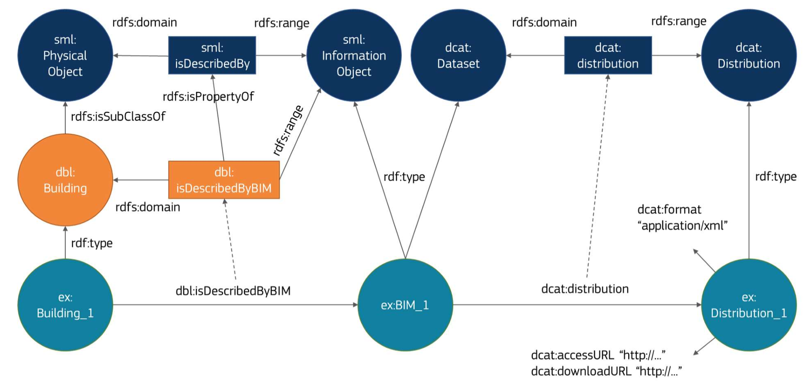
Figuur 32
Semantisch model fysieke objecten en informatieobjecten
8.4 De invloed van BIM-modelkwaliteit op GeoBIM
Het naleven van bovenstaande afspraken maakt een BIM-model geschikt voor koppeling en hergebruik binnen een Geo-omgeving. Objecten kunnen automatisch worden herkend en vertaald naar geo-objecten doordat geometrie, semantiek, classificatie en metadata eenduidig en zo specifiek mogelijk zijn vastgelegd. De noodzaak voor handmatige bewerking neemt af en BIM-informatie wordt betrouwbaarder bruikbaar voor beheer, analyse en besluitvorming.
Concreet betekent dit:
Georeferentie zorgt ervoor dat BIM en Geo ruimtelijk op elkaar aansluiten. Een object uit het BIM-model, bijvoorbeeld een brug of een leiding, komt op de juiste positie in een GIS-kaart terecht.
Typering en classificatie maken objecten herkenbaar.
Een IfcWall, IfcPipeSegment of IfcBridgePart kan worden gekoppeld aan het juiste Geo-objecttype.
Attributen en properties zorgen dat relevante informatie behouden blijft.
Materiaal, status, levensfase of beheerinformatie wordt meegenomen naar de Geo-dataset.
Sluitende geometrie maakt afleiding mogelijk.
Volumes, oppervlakten, hoogten en voetafdrukken zijn alleen berekenbaar uit gesloten geometrie.
Gestandaardiseerde metadata maakt datasets vindbaar en begrijpelijk.
Gebruikers weten wat het model bevat, wie het heeft gemaakt, welke versie het is en waarvoor het geschikt is.
Het voorkomen van doublures en doorsnijdingen voorkomt interpretatieproblemen.
Objecten worden niet dubbel weergegeven of verkeerd gecombineerd in BIM/GIS-omgevingen.
Clashcontroles worden betrouwbaarder.
Doordat objecten eenduidig zijn gemodelleerd en correct zijn gegeorefereerd, zijn geometrische conflicten beter op te sporen.
8.5 Landelijke BIM-afspraken
In Nederland bestaan landelijke BIM-afspraken die zorgen voor een eenduidige werkwijze en die interoperabiliteit, datakwaliteit en samenwerking bevorderen. In lijn met ISO 19650 zijn deze afspraken opgebouwd uit drie samenhangende onderdelen: de InformatieLeveringsSpecificatie (ILS), het Informatieprotocol (IP) en het BIM Uitvoeringsplan (BUP). Samen beschrijven zij de informatie-eisen, de afspraken over informatiebeheer, verantwoordelijkheden en eigendom, en de inrichting van de BIM-samenwerking.
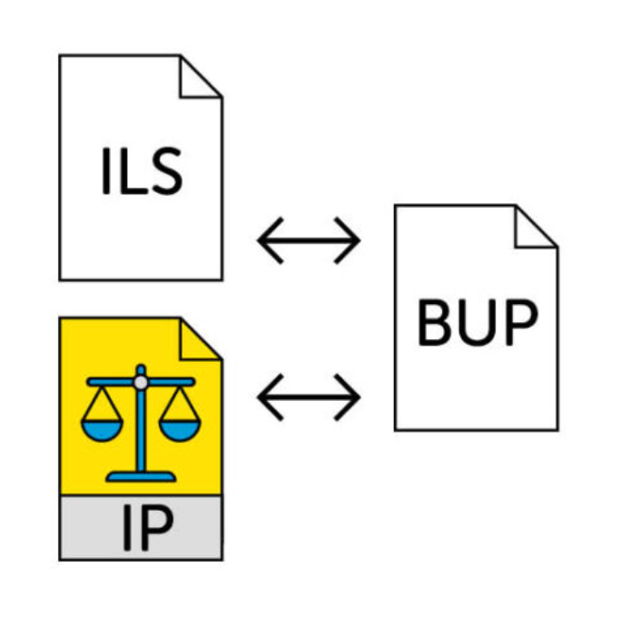
Figuur 33
Informatieleveringsspecificatie (ILS), Informatieprotocol (IP) en BIM-uitvoeringsplan (BUP) als contractuele afspraak over data-creatie, -overdracht en -gebruik.
Bron: DigiGO.
De rolverdeling is als volgt: de ILS beschrijft wat er geleverd wordt, het Informatieprotocol verankert dat juridisch en het BUP beschrijft hoe het projectteam daaraan gaat voldoen. In deze praktijkrichtlijn ligt de nadruk op de ILS, omdat die de randvoorwaarden bevat die de technische conversie van BIM naar Geo mogelijk maken.
DigiGO beheert een aantal templates en sectorbrede standaarden, waaronder de BIM Basis ILS (gericht op de bouw), de BIM Basis Infra (gericht op infrastructuur), de ILS Ontwerp & Engineering, het nationaal model Informatieprotocol en het nationaal template BIM Uitvoeringsplan. Deze richtlijnen bieden een set afspraken en handvatten voor het gestructureerd en eenduidig uitwisselen van digitale informatie. Organisaties en projecten werken de landelijke sectorafspraken verder uit en leggen die uitwerking vast in contracten.
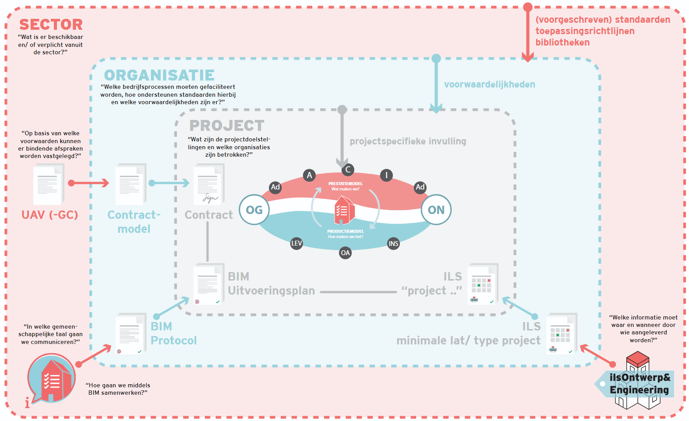
Figuur 34
Samenwerking in BIM op basis van sectorafspraken
Gestandaardiseerd BIM is een voorwaarde voor BIM-naar-Geo-conversie, maar het is geen voldoende voorwaarde. Aan beide zijden bestaan afspraken (de BIM Basis ILS aan de ene kant, BGT|IMGeo en de basisregistraties aan de andere), maar een verbindende laag tussen beide werelden ontbreekt. Een model dat volgens de BIM Basis ILS is opgebouwd en een dataset volgens IMGeo sluiten daardoor niet één-op-één op elkaar aan. Een toekomstig toepassingsprofiel kan die koppeling ondersteunen door afspraken vast te leggen over objectidentificatie, geometrie, semantiek en informatie-uitwisseling.
8.6 InformatieLeveringsSpecificatie (ILS) en Information Delivery Specification (IDS)
Een ILS legt vast welke informatie, wanneer en door welke partij geproduceerd moet worden.
In Nederland wordt "ILS" gebruikt als overkoepelende term. Daardoor bevat een ILS in de praktijk vaak elementen van wat volgens de buildingSMART-terminologie een IDM (Information Delivery Manual), een IDS (Information Delivery Specification) of een EIR (Exchange Information Requirements) heet. In de buildingSMART-systematiek omvat een IDM zowel een EIR als een IDS. Dat verschil is meer dan terminologisch: een IDM beschrijft het proces en de rollen, een IDS beschrijft de toetsbare eis op een informatiecontainer. Als beide in één document worden vermengd, ontstaan eisen die niet te automatiseren zijn.
Een ILS conform het begrip IDS kan in mens- en/of computerinterpreteerbare vorm worden opgesteld. Voor het laatste zijn twee gangbare routes:
buildingSMART heeft de standaard Information Delivery Specification (IDS) [IDS10] ontwikkeld, sinds versie 1.0 een vastgestelde buildingSMART-standaard. Een IDS is een XML-bestand dat aangeeft welke data vastgelegd moet worden en waaraan die moet voldoen. Hetzelfde bestand kan in uiteenlopende applicaties worden gebruikt om IFC-bestanden tegen die eisen te valideren.
Vanuit de Nederlandse en Europese normalisatie zijn respectievelijk NEN 2660-2 [NEN2660-2] en Building information modelling (BIM) — Semantic modelling and linking (SML) NEN-EN 17632 [EN17632-1] ontwikkeld. Hiermee is het mogelijk om via de Linked Data-standaard SHACL restricties vast te leggen en door de computer te laten valideren. Hoe modellen volgens NEN 2660-2 technisch worden uitgewerkt, beschrijven de Technische modelleerrichtlijnen voor linked data in de gebouwde omgeving. Deze richtlijnen zijn niet normatief en sluiten aan op NEN 2660-2 en NL-SBB.
Om te voorkomen dat voor iedere ILS opnieuw over objecten en kenmerken wordt nagedacht, is het sterk aan te raden een bestaande standaard of ontologie als basis te gebruiken. Voorbeelden zijn de ILS O&E [ILS-OE], IMBOR [IMBOR] en de NLCS [NLCS]. Hergebruik van standaarden vergroot bovendien de herkenbaarheid van de data tussen disciplines.
8.6.1 Opbouw van een IDS
Een IDS-bestand bestaat uit twee delen: een ids:info-blok met metadata over de specificatie zelf (titel, auteur, versie, datum, leveringsmoment) en een ids:specifications-blok met een lijst van specificaties.
Elke specificatie is een zelfstandige, toetsbare regel en bestaat uit twee helften:
Applicability: op welke objecten de regel van toepassing is. De selectie kan gebeuren op entiteit (IfcWall), op classificatie (NL-SfB 31), op eigenschap, op materiaal of op een relatie met een ander object. Met minOccurs/maxOccurs op de applicability wordt bovendien uitgedrukt hoeveel van die objecten er in het model moeten zitten. Zo dwingt minOccurs="1" af dat er ten minste één zo'n object aanwezig is.
Requirements: waaraan die objecten moeten voldoen. Ook hier zijn de bouwstenen entiteit, relatie, classificatie, attribuut, eigenschap en materiaal. Per eis is met cardinality aan te geven of die verplicht, optioneel of juist verboden is.
Deze bouwstenen heten facets. Waarden zijn vast op te geven of te begrenzen met een XML-restrictie: een opsomming van toegestane waarden, een patroon of een numeriek bereik.
Een specificatie leest daarmee altijd als: "voor alle objecten die aan A voldoen, geldt eis B". Zie bijlage Voorbeeld-IDS'en voor uitgewerkte voorbeelden.
Enkele praktische aandachtspunten bij het schrijven:
Entiteits- en typenamen worden in hoofdletters geschreven (IFCWALL, niet IfcWall).
Het ifcVersion-attribuut is verplicht en accepteert IFC2X3, IFC4 en IFC4X3_ADD2, eventueel meerdere tegelijk.
Vul description en instructions volledig in. instructions is bedoeld voor de modelleur en kan door de BIM-applicatie worden getoond. Hier wordt uitgelegd hoe aan de eis kan worden voldaan, en niet alleen dát eraan voldaan moet worden.
Een eigenschap wordt aangesproken op de naam zoals die in het IFC-bestand staat (baseName), niet op de vertaalde weergave in de gebruikersinterface.
8.6.2 Mogelijkheden en grenzen van IDS
Een geslaagde IDS-validatie betekent niet dat een model automatisch bruikbaar is voor conversie. IDS toetst de semantische inhoud van een IFC-bestand: welke entiteiten aanwezig zijn, welke attributen, eigenschappen, classificaties, materialen en relaties zij hebben, en welke waarden daarin zijn toegestaan. Wat een IDS niet toetst is geometrie en topologie: of een volume gesloten is, of twee objecten elkaar doorsnijden, of een contour klopt.
Deze controles vragen om aanvullende software of scripts, bijvoorbeeld in Python met de bibliotheek IfcOpenShell, of na conversie met een tool als val3dity
Georeferentie toetsen met IDS
Georeferentie wordt vaak ook tot de onderwerpen gerekend die IDS niet kan toetsen. In de praktijk blijkt dat niet geheel juist.
De aanname is begrijpelijk. IfcMapConversion en IfcProjectedCRS zijn afgeleid van IfcCoordinateOperation respectievelijk IfcCoordinateReferenceSystem, en dus niet van IfcRoot. Zij zijn geen objecten in de gebruikelijke zin: ze hebben geen GlobalId, geen eigenschappen en geen relaties. De IDS-documentatie is geschreven vanuit objecten, zoals muren, deuren en ruimten, en zegt niets over entiteiten die daarbuiten vallen.
In de praktijk is toetsing toch mogelijk. De ILS voor Ruimten in de Omgevingswet bevat specificaties die rechtstreeks IFCMAPCONVERSION en IFCPROJECTEDCRS als applicability nemen, en die door gangbare validatiesoftware worden uitgevoerd. Bij de totstandkoming van deze praktijkrichtlijn is dat nagegaan met de referentie-implementatie uit IfcOpenShell: de specificaties zijn schemavalide, worden uitgevoerd en werken zoals bedoeld. Een model zonder georeferentie faalt op de minOccurs-eis, een model met een onvolledig ingevulde IfcMapConversion of een niet-toegestane EPSG-waarde faalt op de attribuuteis.
Daarmee is een aanzienlijk deel van level 50 wel machinaal af te dwingen vanuit de ILS zelf:
Wat een IDS aantoonbaar kan toetsen
Wat een IDS niet kan toetsen
Is er een IfcMapConversion of IfcMapConversionScaled aanwezig?
Klopt de waarde: ligt het model werkelijk op die coördinaat?
Zijn Eastings, Northings, OrthogonalHeight, XAxisAbscissa, XAxisOrdinate en Scale gevuld?
Komt de vastgelegde rotatie overeen met de werkelijke oriëntatie van de geometrie?
Is er een IfcProjectedCRS, en heeft die een toegestane EPSG-aanduiding?
Is de schaalfactor consistent met de IfcUnitAssignment van het model?
Is het verticale datum ingevuld?
Ligt de modelgeometrie in de buurt van de opgegeven oorsprong?
De scheidslijn loopt dus niet tussen "georeferentie wel of niet", maar tussen aanwezigheid en vorm, die met IDS toetsbaar zijn, en juistheid, die alleen is vast te stellen door de geometrie zelf te bekijken. Dat onderscheid is belangrijk: met de eerste toets worden de meeste fouten uit de praktijk al gevonden, omdat ontbrekende of half ingevulde georeferentie veel vaker voorkomt dan verkeerd ingevulde waarden.
Hierbij is één technisch punt van belang. IDS kent geen automatische overerving van entiteiten; de gebruikershandleiding stelt expliciet dat alle entiteiten afzonderlijk moeten worden opgesomd. Een specificatie op IFCMAPCONVERSION is daardoor niet van toepassing op IfcMapConversionScaled, ook al is dat een subtype hiervan. Dit kan leiden tot tenonrechte afgekeurde modellen. Momenteel dienen al de entiteiten (sub- en superklassen) waar regels voor gelden dus expliciet in de opsomming in de IDS staan. De uitgewerkte specificaties staan in bijlage Georeferentie in een IDS.
Dat dit werkt, berust op implementatiegedrag en niet op een expliciete uitspraak in de standaard. De IDS-documentatie beschrijft het entiteitsfacet in termen van objecten en gaat niet in op entiteiten die niet van IfcRoot zijn afgeleid. Software zoals BIM.works voert dergelijke specificaties uit, maar of dat zo blijft, is niet vastgelegd. Een implementatie die de objectgerichte lezing strikt volgt, zou de specificatie kunnen negeren zonder dat iemand het merkt; dat is erger dan falen. Voor georeferentie, de meest kritische eis bij elke koppeling tussen BIM en Geo, is dat onbevredigend. Deze praktijkrichtlijn gaat in de tussentijd uit van de werkende praktijk.
Noot: Georeferentie-entiteiten in IDS
8.6.3 Validatie van bestanden voor BIM-naar-Geo conversie in drie stappen
Voor BIM-naar-Geo-conversie blijft een controle in drie stappen de aangewezen werkwijze:
Bestandsvalidatie en precondities: is het IFC-bestand schemavalide, ligt de modelgeometrie in de buurt van de opgegeven oorsprong, en is de omvang van het model plausibel? Een model dat hier faalt, hoeft niet verder getoetst te worden.
Semantische validatie (IDS/SHACL): zijn de vereiste objecten, typeringen, classificaties en eigenschappen aanwezig en correct gevuld? Inclusief de aanwezigheid en vorm van de georeferentie.
Geometrisch-topologische validatie: zijn volumes gesloten en niet-zelfdoorsnijdend, zijn er geen doublures of ongewenste doorsnijdingen, telt de opbouw van grof naar fijn op, en kloppen de georeferentiewaarden ten opzichte van de werkelijke geometrie?
Ten opzichte van de gangbare voorstelling verschuift de georeferentie hiermee gedeeltelijk van stap 1 naar stap 2. Het voordeel daarvan is dat wat in de ILS staat, de indiener zelf vooraf kan controleren. Wat in stap 1 en 3 overblijft, vraagt nog steeds om afspraken in de tekstuele ILS en om aanvullende, geometrische controlesoftware. Een ILS voor BIM naar Geo kan dus nog altijd niet uitsluitend uit een IDS-bestand bestaan, maar met een IDS kan meer worden getoetst dan vaak wordt aangenomen.
8.7 Samenstellen van IDS'en
8.7.1 Modulariteit
Voor elke Geo-doeldataset gelden deels dezelfde en deels andere eisen. Een pand dat de BGT moet vullen, een pand dat de BAG moet vullen en een pand dat een 3D-model moet vullen, delen de eisen aan georeferentie, ruimtelijke structuur en typering, maar verschillen in geometrieniveau en in de attributen die meegeleverd moeten worden.
Een complete ILS per doeldataset betekent dat gedeelde eisen steeds worden gekopieerd. Dat leidt tot extra onderhoud en tot versies die van elkaar gaan afwijken. De modulaire route is om de eisen op te delen in kleine, herbruikbare ILS'en:
Bron-ILS
Bevat
Hergebruik
ILS-Gebouw
ruimtelijke structuur, typering en attributen van een bouwwerk
in elke gebouwgerelateerde levering
ILS-Basisregistratie
generieke attributen die elke basisregistratie nodig heeft (identificatie, status, bronhouder)
in elke levering aan een basisregistratie
ILS-Gebouw-LOD0vlak
de eisen aan de geometrie van een gebouw voor een LOD0-vlak
in elke levering van een gebouw als LOD0-vlak, zoals aan BGT en BAG
ILS-BGT
de specifieke attributen en geometrie-eisen van BGT|IMGeo
alleen bij levering aan de BGT
Een levering van een gebouw aan de BGT is dan de samenstelling ILS-Gebouw-LOD0vlak + ILS-Gebouw + ILS-Basisregistratie + ILS-BGT. Een levering aan de BAG hergebruikt de eerste drie en vervangt alleen de laatste.
8.7.2 Technische werking
Een IDS-bestand is een geordende lijst van onderling onafhankelijke specificaties. Elke specificatie draagt haar eigen applicability en haar eigen requirements; er is geen verwijzing van de ene specificatie naar de andere en geen gedeelde context.
Daaruit volgt dat samenstellen eenvoudig is: de samengestelde IDS bevat de specificatie-elementen van alle bron-ILS'en, ongewijzigd, in één ids:specifications-blok. Het resultaat is zonder verdere bewerking geldig volgens het IDS 1.0-schema, en een validator behandelt de samengevoegde specificaties precies zoals hij de losse bestanden achter elkaar zou behandelen.
De IDS-standaard voorziet in deze werkwijze ook expliciet. Het schema merkt bij het identifier-attribuut van een specificatie op dat globale uniciteit niet kan worden afgedwongen "because of the possibility to combine different 'specification' elements from several ids files". Samenstellen is dus voorzien, maar de standaard legt niet vast wat er semantisch gebeurt en welke regels daarbij gelden. Deze praktijkrichtlijn vult dat aan.
De betekenis van samenstellen is additief. Een model voldoet aan de samengestelde IDS dan en slechts dan als het aan elke afzonderlijke specificatie voldoet. De volgorde van de specificaties doet er niet toe, en een bron-ILS toevoegen kan het geheel alleen strenger maken, nooit soepeler.
8.7.3 Tegenstrijdige specificaties
Aanscherping is geen tegenspraak. Als de ene bron-ILS eist dat een eigenschap aanwezig is en een andere eist dat diezelfde eigenschap een bepaalde waarde heeft, dan geldt in de samenstelling de strengste eis. Hetzelfde geldt voor dubbel geformuleerde eisen: dat is redundant en lastiger te onderhouden, maar niet onjuist.
Van een echte tegenspraak is sprake wanneer twee specificaties overlappende applicability hebben en hun eisen door geen enkel object tegelijk vervuld kunnen worden. Drie herkenbare vormen:
required tegenover prohibited op hetzelfde facet: bijvoorbeeld de ene ILS eist Pset_BuildingCommon.YearOfConstruction en een andere verbiedt die eigenschap.
Disjuncte waardeverzamelingen: de ene ILS staat als entiteit alleen IFCWINDOW toe, de andere alleen IFCDOOR, voor dezelfde selectie objecten.
Onverenigbare ifcVersion: bron-ILS'en die op verschillende, elkaar uitsluitende schema's zijn geschreven.
Een tegenspraak die niet wordt opgemerkt, geeft geen foutmelding. Een samengestelde IDS met een tegenspraak is gewoon schemavalide. De validator meldt alleen dat één van de twee specificaties faalt, en dat voor elk model, ongeacht de inhoud. De fout presenteert zich als "het model voldoet niet", terwijl in werkelijkheid de afspraak niet klopt. Daardoor komt de fout ten onrechte bij de leverancier van het model terecht in plaats van bij de beheerder van de afspraak.
Deze eigenschappen zijn nagegaan op de IDS 1.0-schemadefinitie en op werkende bestanden. Drie bron-ILS'en zijn samengevoegd tot één IDS en tegen een IFC-model gevalideerd: alle specificaties slagen, zonder enige aanpassing aan de specificaties zelf. Een opzettelijk tegenstrijdige samenstelling is als schemavalide geaccepteerd zonder waarschuwing, en faalde vervolgens in beide richtingen: bij een model met de eigenschap faalde de verbiedende specificatie, bij een model zonder die eigenschap de verplichtende. Zie bijlage Wat er gebeurt bij een tegenspraak.
8.7.4 Regels voor samenstellen
Uit het bovenstaande volgen zeven afspraken. Zij vullen aan wat de IDS-standaard openlaat en zijn bedoeld om per doeldataset te worden toegepast.
Elke bron-ILS is een zelfstandig, versiebeheerd bestand. Bron-ILS'en worden gepubliceerd en beheerd als afzonderlijke artefacten, met een eigen naam, versie en beheerder.
Elke specificatie krijgt een globaal unieke identifier. Omdat de standaard geen uniciteit garandeert, is dit de enige manier om na samenvoeging te kunnen zien uit welke bron een gefaalde eis afkomstig is. Een herkomstprefix (GEB-01, BR-01, BGT-01) volstaat binnen één beheerorganisatie; de robuustere route is de identifier te laten samenvallen met de bSDD-URI van het begrip waarover de specificatie gaat, bijvoorbeeld https://identifier.buildingsmart.org/uri/bsnl/…/class/Verblijfsruimte. Dan is de identifier per definitie uniek, verwijst hij naar een definitie in plaats van naar een volgnummer, en is de herkomst ook buiten de eigen organisatie herkenbaar. De ILS voor Ruimten in de Omgevingswet past dit toe.
Samenstellen is additief en ongewijzigd. Specificaties worden bij het samenstellen niet herschreven, samengevoegd of geoptimaliseerd. Wat de bron-ILS zegt, staat ongewijzigd in de samenstelling.
Aanscherpen mag, versoepelen niet. Een bron-ILS met een smallere scope mag een eis strenger maken dan een generiekere bron-ILS. Het omgekeerde is geen geldige samenstelling maar een ontwerpfout in de afsprakenset.
Tegenspraken worden vóór publicatie opgelost, door de beheerder van de doeldataset, niet tijdens validatie en niet door de leverancier van het model.
De samengestelde IDS wordt als één bestand per doeldataset en leveringsmoment gepubliceerd, met een eigen versienummer en een ids:info die de gebruikte bron-ILS'en met hun versies benoemt.
Alleen de samengestelde IDS is contractueel. De bron-ILS'en zijn bouwstenen; de gepubliceerde samenstelling is waaraan geleverd en getoetst wordt. Dat voorkomt dat partijen op verschillende combinaties van bronversies uitkomen.
8.7.5 Wat een samenstelstap moet controleren
Omdat de standaard zelf niets controleert, hoort de controle in het samenstelproces te zitten. Een samenstelstap, handmatig of met een tool, signaleert ten minste:
specificaties met identieke of overlappende applicability;
required tegenover prohibited op hetzelfde facet binnen die overlap;
waardeverzamelingen die elkaar binnen die overlap uitsluiten;
dubbel voorkomende identifier-waarden;
onverenigbare ifcVersion-declaraties;
het aantal overgenomen specificaties per bron-ILS, zodat een stilzwijgend weggevallen bron opvalt.
Noot: Controleer een samengestelde IDS vóór publicatie
8.8 Van BIM-eis naar ILS naar Geo-product
8.8.1 ILS voor conversiemethode
Het hoofdstuk Methodes van BIM naar Geo brengen beschrijft de methoden om BIM naar Geo te brengen. Die methoden staan niet los van dit hoofdstuk: elke methode veronderstelt eisen aan het BIM-model.
Een methode die een verdiepingsoppervlak afleidt door de bouwlagen uit het IFC-bestand te nemen, werkt alleen als die bouwlagen er zijn, op de juiste hoogte staan en alle relevante objecten eraan gekoppeld zijn. Een methode die kameroppervlakken afleidt uit ruimten, werkt alleen als die ruimten aanwezig en sluitend zijn, en als ze werkelijk kamers zijn en niet, zoals ook mag in IFC, een parkeerplaats of een gebruiksoppervlakteruimte. Dat zijn eisen aan het BIM-model. Deze eisen samen bepalen de inhoud van een ILS.
Het vertalen van impliciete eisen naar een expliciete ILS levert drie dingen op:
de leverancier van het model weet vooraf aan welke eisen het model moet voldoen, in plaats van dit pas na een mislukte conversie te ontdekken;
een mislukte conversie wordt een aanwijsbare non-conformiteit in plaats van een onverklaarde fout in de software;
de methode wordt reproduceerbaar tussen verschillende softwarepakketten, omdat de aannames van de ene implementatie zichtbaar worden voor de andere.
LOD in dit hoofdstuk staat voor level of detail in de Geo-betekenis; zie Verschillen tussen BIM- en Geo-modellen voor het onderscheid met Level of Information Need en Level of Development.
8.8.2 Voorbeeld: ILS-uitwerking voor LOD 0.2 Gebouw
De methode voor LOD 0.2 met de IfcEnvelopeExtractor (zie ook Workflow IfcEnvelopeExtractor) leidt uit één brongebouwmodel meerdere vlakproducten af: een dakoppervlak, een grondvoetafdrukoppervlak, een verdiepingsoppervlak en een kameroppervlak. De methode wordt daar beschreven zonder afzonderlijke ILS. Er hoeft geen nieuwe informatie te worden toegevoegd, maar er gelden wel eisen. De methode leunt op de aanwezigheid van specifieke IFC-entiteiten, en dat zijn eisen aan het BIM-model.
Onderstaande tabel maakt die eisen expliciet en geeft ze een specificatienummer, zodat ze als bron-ILS ILS-Gebouw gepubliceerd kunnen worden.
Geo-product (LOD 0.2)
Afgeleid uit
Eis aan het BIM-model
Spec.
Verdiepingsoppervlak
IfcBuildingStorey
ten minste één bouwlaag, benoemd, met ingevulde Elevation
GEB-01
—
IfcRelContainedInSpatialStructure
elk fysiek element is aan een bouwlaag gekoppeld
GEB-02
Kameroppervlak
IfcSpace
ruimten aanwezig, sluitend en zonder overlap; PredefinedType ingevuld, zodat een kamer te onderscheiden is van een parkeerplaats (PARKING) of een gebruiksoppervlakteruimte (GFA); CompositionType correct ingevuld zodat een kamer (ELEMENT) te onderscheiden is van een zone (COMPLEX & PARTIAL)
GEB-03
—
IfcRelContainedInSpatialStructure
elk IfcSpace-object is aan een bouwlaag gekoppeld
GEB-04
Grondvoetafdrukoppervlak
fysieke elementen op maaiveldniveau aanwezig
ten minste één IfcElement aanwezig op bouwlaagniveau 00
GEB-05
—
IfcBuildingStorey
ten minste één bouwlaag, benoemd, startend met "00_" zoals in de BIM Basis ILS, met ingevulde Elevation
GEB-06
BGT-polygoon/Grondvoetafdrukoppervlak
fysieke elementen op maaiveldniveau aanwezig
ten minste één IfcElement aanwezig op bouwlaagniveau 00
GEB-05
—
IfcBuildingStorey
ten minste één bouwlaag, benoemd, startend met "00_" zoals in de BIM Basis ILS, met ingevulde Elevation
GEB-06
—
BVO-data aanwezig
BVO kan op vier manieren worden gemodelleerd: - Gebouwinhoud aanwezig volgens ILS voor ruimten in de Omgevingswet [ILS-RUIMTEN] met ObjectType Gebouwinhoud en Description Bruto Inhoud. - Bouwlaaginhoud aanwezig volgens ILS voor ruimten in de Omgevingswet [ILS-RUIMTEN] met ObjectType Bouwlaaginhoud en Description Bruto Inhoud. - Gebruikseenheid aanwezig volgens ILS voor ruimten in de Omgevingswet [ILS-RUIMTEN] met ObjectType Gebruikseenheid en Description Bruto Inhoud. - Gebruiksfunctie aanwezig volgens ILS voor ruimten in de Omgevingswet [ILS-RUIMTEN] met ObjectType Gebruiksfunctie en Description Bruto Inhoud. Aanvullend moet ieder object een IsExternal waarde hebben
GEB-07
Dakomtrek
fysieke elementen aanwezig
ten minste één IfcElement aanwezig
GEB-08
BAG-polygoon/Dakomtrek
BVO-data aanwezig
BVO kan op vier manieren worden gemodelleerd: - Gebouwinhoud aanwezig volgens ILS voor ruimten in de Omgevingswet [ILS-RUIMTEN] met ObjectType Gebouwinhoud en Description Bruto Inhoud. - Bouwlaaginhoud aanwezig volgens ILS voor ruimten in de Omgevingswet [ILS-RUIMTEN] met ObjectType Bouwlaaginhoud en Description Bruto Inhoud. - Gebruikseenheid aanwezig volgens ILS voor ruimten in de Omgevingswet [ILS-RUIMTEN] met ObjectType Gebruikseenheid en Description Bruto Inhoud. - Gebruiksfunctie aanwezig volgens ILS voor ruimten in de Omgevingswet [ILS-RUIMTEN] met ObjectType Gebruiksfunctie en Description Bruto Inhoud. Aanvullend moet ieder object een IsExternal waarde hebben
GEB-07
alle producten
IfcMapConversion of IfcMapConversionScaled, plus IfcProjectedCRS
georeferentie op level 50 aanwezig en juist
GEO-01, GEO-02 (aanwezigheid en vorm in IDS; juistheid als geometrische controle)
De laatste regel is de belangrijkste. Zonder georeferentie zijn alle afgeleide vlakken geometrisch correct maar ruimtelijk onbruikbaar. Het is tegelijk de regel die het scherpst laat zien waar de grens van IDS ligt: dat er een IfcMapConversion is en dat de zes transformatieattributen gevuld zijn, is met een IDS af te dwingen; of het model daarmee ook werkelijk op de goede plek en in de goede richting terechtkomt, blijkt pas uit de geometrie. Zie Mogelijkheden en grenzen van IDS voor die scheidslijn, en bijlage Georeferentie in een IDS voor de uitgewerkte specificaties.
De uitgeschreven specificaties GEB-01 tot en met GEB-05 staan in bijlage ILS-Gebouw.
8.8.3 Overzicht van eisen per Geo-product
Onderstaande tabel koppelt de generieke eisen uit dit hoofdstuk aan de methoden om BIM naar Geo te brengen. Zij is bedoeld als leeswijzer, niet als volledige mapping. De tabel sluit aan op de toepassingsprofielen in BIM naar Geo-datasets, waar per dataset de ILS'en en het bijbehorende transformatieprofiel staan.
Geo-product
Bron-ILS'en
Aanvullende eisen bovenop de basis
LOD1-volume-gebouw
ILS-Gebouw-LOD1volume
gesloten volumes; ten minste één IfcProduct met Body-geometrie
IfcSlab met PredefinedType, IfcRoof, IfcWall; volledige bouwlaagstructuur
3D-model met openingen
idem + ILS-Openingen
IfcWindow/IfcDoor in echte sparingen; classificatie consistent met typering
Twee begripskwesties die bij het uitwerken van deze mapping opgelost moeten worden:
IfcBuilding is niet hetzelfde als een pand. Een IfcBuilding kan meerdere panden omvatten of juist een deel van een pand zijn. De afbakening moet expliciet worden afgesproken: afleiden uit de externe elementen op maaiveldniveau, of expliciet aangeven met bijvoorbeeld een IfcZone per pand.
De attributenmapping van de basisregistraties naar IFC is nog niet compleet. Voor de identificatie bestaat een afspraak; voor de overige attributen nog niet.
Zie ook de use case-beschrijving IFC to CityGML conversion in de buildingSMART Use Case Management-omgeving.
9. Toepassingen
Dit hoofdstuk laat zien hoe de methodes van BIM naar Geo brengen in de praktijk met beschikbare software kunnen worden toegepast. Het overzicht hieronder geeft per applicatie aan welke methodes en uitvoerformaten worden ondersteund; daarna wordt elke applicatie kort toegelicht. Het overzicht is een selectie van veelgebruikte tools en geen volledige of vergelijkende marktanalyse.
9.1 Overzicht van applicaties
Applicatie
BIM/IFC direct openen
1-op-1-vertaling
Gefilterde 1-op-1-vertaling
Shell-extractie
CityGML LoD support
CityJSON LoD support
ESRI ArcGIS Pro
✅
✅
✅
❌
❌
❌
IFC2GeoJSON
❌
✅
✅
❌
❌
❌
Safe Software FME
❌
✅
✅
❌
✅
❌
IfcConvert
❌
✅
✅
❌
❌
❌
BIMShell
❌
✅
✅
✅
❌
❌
IfcEnvelopeExtractor
❌
✅
✅
✅
✅
✅
✅ = volledige support
❌ = geen support
9.2 BIM-bestanden in een GIS-omgeving brengen
9.2.1 ESRI ArcGIS Pro
In ESRI ArcGIS Pro zijn er tools beschikbaar om een bestaand BIM-model (IFC en Revit) om te zetten naar Geo. Er is tooling beschikbaar om BIM-modellen direct in de Esri-software te laden, een juiste geolocatie te geven en te converteren naar een ESRI File GeoDataBase (.gdb). De beschikbare tooling is beschreven op Esri BIM en GIS en op de bimfile to geodatabase webpagina's.
Met deze tooling is het mogelijk een 1-op-1-vertaling van het BIM-model te maken. Wel zal de originele geometrie vertaald worden naar een Multipatch zoals beschreven in deze ArcGIS-documentatie.
In de Esri-blog "Common Patterns for BIM and GIS Integration" staat beschreven dat het mogelijk is om alle informatie-uitwisseling via open standaarden (o.a. IFC en CityGML) plaats te laten vinden. Het converteren van gegevens van de ene standaard naar de andere kent vergelijkbare problemen als klassieke ETL-workflows. Dit leidt tot gegevensverlies, omdat bepaalde domein- of disciplinespecifieke informatie ontbreekt en omdat er verschillen zijn in de complexiteit waarmee geometrie wordt weergegeven. Het gegevensverlies kan nog groter worden wanneer gegevens vanuit een leveranciersspecifiek formaat via meerdere open standaarden worden geconverteerd en uiteindelijk weer in een ander leveranciersspecifiek formaat terechtkomen.
Esri ondersteunt deze aanpak doorgaans door gebruik te maken van bibliotheken en tools van derden om gegevens in open standaarden te kunnen lezen. Waar mogelijk wordt het aantal stappen in de gegevensconversie vereenvoudigd door te kijken naar ELT-workflows en -tools, bijvoorbeeld door IFC in de toekomst rechtstreeks in ArcGIS te kunnen lezen (bron: Esri-blog "Common Patterns for BIM and GIS Integration").
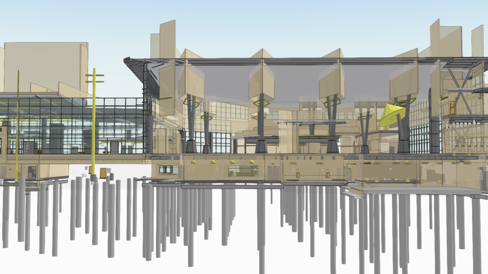
Figuur 35
IFC in ArcGIS in een 3D Object Scene Layers
Bron: Esri
9.2.2 IFC2GeoJSON
Het project Ifc2GeoJSON voorziet in tooling om IFC naar 3D GeoJSON te converteren. Ook is er een ifc2gis-webapplicatie van beschikbaar.
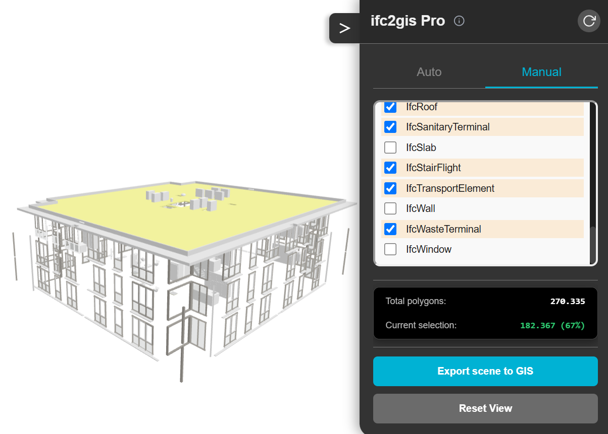
Figuur 36
IFC in ifc2gis: een gefilterde 1-op-1-vertaling op basis van een selectie
Bron: IFC2GIS
In deze tool worden web-ifc, three.js en GeoJSON gebruikt om de geometrie om te zetten. De IfcGeometryLoader voorziet in de transformatie van impliciete procedurele geometrie naar expliciete geometrie. Met deze functie is het mogelijk om parameters mee te geven voor het tesselleren van geometrie. In de Ifc2GeoJSON-tool is het niet mogelijk deze parameters aan te passen.
9.2.3 Safe Software FME
FME-software heeft verschillende functies beschikbaar om BIM naar Geo om te zetten.
De functies verschillen in het detailniveau van het BIM-model en het detailniveau van de output. LoD 3 is hierbij het meest complex, omdat het geen n-op-1- of 1-op-1-mapping, maar een n-op-n-mapping (en dientengevolge conversie) is.
De totale flow van de LOD 200 naar LoD3 CityGML-conversie is het meest complex. Voor een gebouw wordt er wederom een LOD 100-mesh gemaakt. Dit wordt aangevuld met een citygmlgeometrysetter. Hiermee kan een bepaalde CityGML LoD geduid worden. Verschillende IFC-entiteiten resulteren in de flow in verschillende CityGML-concepten.
IfcConvert is onderdeel van IfcOpenShell. IfcOpenShell is een toolkit die ondersteunt bij het lezen, schrijven en bewerken van BIM met behulp van IFC. Met IfcConvert is het mogelijk om IFC te converteren naar formaten als .obj, .dae, .glb, .stp, .igs, .xml, .svg, .h5, .ttl, .ifc, .rdb en .json.
Het is mogelijk om specifieke elementen wel of niet mee te nemen met IfcConvert, zoals beschreven in IfcConvert Usage.
Het creëren van CityJSON is onderzocht in samenwerking met de TU Delft. Dit is onder andere beschreven in dit GitHub-issue. IfcConvert voorziet momenteel niet in CityJSON-conversie. Wel is er een IfcCityJSON-converter, maar deze converter converteert CityJSON naar IFC, en niet andersom.
BIMShell is een extensie voor Trimble SketchUp. Met deze extensie is het mogelijk om een footprint shell te maken. Dit genereert een omhulsel dat overeenkomt met de geëxtrudeerde voetafdruk van het model (langs de z-as).
Daarnaast is er de functie Voxel Shell. Deze genereert een "gesloten benadering van de buitencontour van het model met behulp van een voxelgegevensstructuur". Hierbij kan de voxelresolutie worden ingesteld die wordt gebruikt om een omhulsel te maken.
Een kleinere resolutie zorgt voor een nauwkeuriger resultaat, maar vereist meer rekenkracht. Als het model openingen bevat die groter zijn dan de gekozen resolutie, is de kans groot dat het proces ook vlakken aan de binnenkant van het model genereert. Over het algemeen levert deze methode echter eenvoudigere modellen op dan de oorspronkelijke modellen.
Ten slotte is er de functie Out Shell Faces. Deze genereert een omhulselversie van het model door de vlakken die zich aan de buitenzijde bevinden te kopiëren. Hierbij kan de resolutie van het geoptimaliseerde raster worden ingesteld dat wordt gebruikt om vanaf de buitenzijde van het model stralen (rays) op het model af te vuren. Net als bij Voxel Shell geldt dat wanneer de binnen- en buitenruimte van het model niet goed van elkaar te onderscheiden zijn (bijvoorbeeld door openingen, een open deur of ramen), het resulterende omhullende model waarschijnlijk ook vlakken aan de binnenzijde zal bevatten.
De IfcEnvelopeExtractor is een opensource-C++-applicatie die BIM-modellen in IFC-formaat kan omzetten naar Wavefront OBJ, STEP en CityJSON. Deze omzetting is niet alleen een 1-op-1-omzetting van IFC naar een GIS-bestandstype. De applicatie zet de geometrie van het inputbestand om naar GIS-representaties volgens de GIS-datastructuur. De conversie volgt hierbij het LoD-framework van Biljecki et al. [BILJECKI2016]. Aanvullend zijn er een aantal experimentele LoD's en een 1-op-1-conversie beschikbaar. De tool ondersteunt de conversie van IFC naar in totaal 17 verschillende LoD's, zie bijlage Workflow IfcEnvelopeExtractor voor meer informatie.
De applicatie is toegankelijk via de GitHub-pagina. Hier zijn de broncode en gecompileerde programma's beschikbaar. De gecompileerde programma's zijn beschikbaar voor zowel Windows als Linux (Ubuntu). Gedetailleerde informatie over de methodes die ontwikkeld zijn in de code om de conversie uit te voeren, kan worden gevonden in het technische rapport van versie 0.2.6. Dit rapport is gebaseerd op een eerdere versie van de code; versie 0.3.x is de huidige versie, waarbij de dieper liggende logica gelijk of vergelijkbaar is gebleven.
De applicatie kan op twee manieren worden bediend: via een Graphical User Interface (GUI) of via een configuratiebestand (ConfigJSON). De GUI is makkelijker en sneller om mee te werken, zeker voor gebruikers die geen programmeerervaring hebben. De GUI geeft echter enkel controle over een deel van alle beschikbare instellingen. Dit is gedaan om de menu's overzichtelijk te houden. De beschikbare instellingen zijn gekozen op basis van wat de meest gebruikte instellingen zijn. Als deze instellingen te beperkend zijn, moet er met de ConfigJSON gewerkt worden. De ConfigJSON is een lijst met instellingen in JSON-encoding.
ifc2gis is een webtool die IFC-bestanden (BIM) omzet naar GeoJSON-formaat, zodat ze bruikbaar zijn in GIS-toepassingen. De tool is bedoeld voor stedenbouwkundigen, architecten en ontwikkelaars die werken met digitale tweelingen en BIM. De tool Ifc2GeoJSON is momenteel als applicatie ifc2gis via het web te gebruiken. Zowel een volledige als een gefilterde 1-op-1-vertaling is mogelijk. De tool ondersteunt geen geometrische shell-extracties.
A. Mapping tussen IFC en CityGML op verschillend decompositieniveau
Vanuit een gedetailleerd BIM-model is het mogelijk om op verschillende decompositieniveaus naar Geo te mappen.
Onderstaand voorbeeld laat zien dat vanuit eenzelfde IFC-model verschillende transformaties mogelijk zijn. Als voorbeeldmodel is het viaduct Viadotto Acerno gebruikt, een van de IFC 4.3-voorbeeldmodellen voor bruggen die via buildingSMART beschikbaar zijn gesteld.
De CityGML-voorbeelden hieronder zijn sterk vereenvoudigd. Ze laten alleen de opbouw van de objecten en hun onderlinge relaties zien, en bevatten geen volledige of geldige geometrie.
A.1 Decompositieniveau 1
Op decompositieniveau 1 wordt de brug als één geheel gemodelleerd.
Op decompositieniveau 3 kunnen binnen de brugdelen ook de afzonderlijke constructieve elementen, zoals oplegbalken en kolommen, als BridgeConstructiveElement vastgelegd.
Op decompositieniveau 4 kunnen ook de kleine onderdelen van die elementen, zoals bouten en voetplaten, als afzonderlijk BridgeConstructiveElement opgenomen en via een CityObjectRelation (containment) gekoppeld aan het element waartoe ze behoren.
Deze bijlage geeft twee voorbeelden bij het hoofdstuk Entiteit en attribuut BIM naar Geo. De eerste figuur laat zien hoe IFC-entiteiten en -attributen kunnen worden gemapt naar de BAG-objecten Pand, Verblijfsobject en Nummeraanduiding en naar het IMBOR-object Gebouw.
Figuur 51
Attribuutmapping van IFC-entiteiten en -attributen naar BAG- en IMBOR-entiteiten en -attributen.
De tweede figuur toont een Application Domain Extension (ADE) waarmee IFC-informatie die niet in het standaard CityGML-model past, toch in CityGML kan worden vastgelegd.
Figuur 52
ADE voor CityGML om IFC-informatie te borgen.
C. Levenscyclus
Onderstaande beelden visualiseren de flow van wijzigingen bij BIM en Geo.
C.1 Situatie
Stel men heeft in Geo de volgende entiteitsinstanties:
Weg 123, Weg 124, Weg 125, Parkeervak 123, Voetpad 123, Voetpad 124, Groenvak 123, Groenvak 124, Pand 123, Pand 124 en Pand 125.
En stel men heeft in BIM entiteitsinstanties op een lager decompositieniveau (kleinere onderdelen):
Tegelvlak 123, Band 123, Band 124, Hoekstuk 123, Kaasstuk 123 en Opsluitband 123.
En stel men heeft een connectie gemaakt tussen BIM en Geo.
Figuur 53Wegen die bestaan uit weginrichtingselementen
C.2 Vervangen van elementen
Men zou elementen van het voetpad kunnen vervangen. In onderstaande situatie is een wijziging aangebracht:
Band 123 is verwijderd en Band 125 is aangelegd (1-op-1-vervanging).
Band 124 is verwijderd en Band 126 is aangelegd (1-op-1-vervanging).
Hoekstuk 123 is verwijderd en Hoekstuk 124 is aangelegd (1-op-1-vervanging).
Kaasstuk 123 is verwijderd en Kaasstuk 124 is aangelegd (1-op-1-vervanging).
Deze maatregelen hebben de status Uitgevoerd.
In de huidige BGT zit geen koppeling tussen een BGT-object en de objecten waaruit deze kan bestaan. Voetpad 123 blijft in dat geval bestaan.
Bij een koppeling tussen BGT-objecten en de objecten waaruit deze bestaan, blijft Voetpad 123 bestaan, maar krijgt een nieuwe versie.
Figuur 54Verandering in wegen die bestaan uit weginrichtingselementen, door vervanging van weginrichtingselementen
C.3 Nieuwe weg in een bestaande weg
Men zou een nieuw voetpad kunnen maken. In onderstaande situatie is een nieuw voetpad gemaakt door:
Een deel van Tegelvlak 123 is verwijderd en Tegelvlak 125 is aangelegd.
Het ene blijvende deel van Tegelvlak 123 blijft Tegelvlak 123. Het andere blijvende deel wordt Tegelvlak 124, omdat het niet meer aansluit op Tegelvlak 123.
Band 123 is verwijderd en Band 126 is aangelegd (1-op-1-vervanging).
Band 124 is verwijderd en Band 127 is aangelegd (1-op-1-vervanging).
Hoekstuk 123 is verwijderd en Hoekstuk 124 is aangelegd (1-op-1-vervanging).
Kaasstuk 123 is verwijderd en Kaasstuk 124 is aangelegd (1-op-1-vervanging).
Deze maatregelen hebben de status Uitgevoerd.
Dan blijft het Voetpad 123 bestaan, maar krijgt een nieuwe versie en geometrie. Voetpad 125 ontstaat als nieuw object met de attributen en waarden van Voetpad 123. Voetpad 126 ontstaat met nieuwe attributen.
Figuur 55Verandering in wegen die bestaan uit weginrichtingselementen, door een nieuwe weg in een bestaande weg
C.4 Nieuwe weg in een bestaand onbegroeid terrein
Men zou nieuwe wegen kunnen maken in bestaand onbegroeid terrein. In onderstaande situatie is een nieuwe situatie gemaakt door:
Onbegroeid terreindeel 123 is verwijderd en Tegelvlak 123 en 124, Band 125 en 126, Hoekstuk 124, Kaasstuk 124 enzovoort zijn aangelegd.
Deze maatregelen hebben de status Uitgevoerd.
Dan ontstaan Weg 123, 124 en 125, Voetpad 123 en 124, Parkeervak 123 enzovoort.
Deze bijlage geeft een eerste voorbeeld van een semantische mapping van IFC 4.3 naar IMBOR 2025 (InformatieModel Beheer Openbare Ruimte). In tegenstelling tot de CityGML-mapping in bijlage A richt deze mapping zich op beheeraspecten van infrastructurele objecten.
Het voorbeeld beperkt zich tot de entiteit IfcBridge en de IMBOR-klasse Brug, met een aantal basisattributen. Een volledige mapping, bijvoorbeeld voor dek, pijler en de attributen uit de IMBOR Startset, moet nog worden uitgewerkt.
D.1 Attribuutmapping IfcBridge – IMBOR Brug
E. Voorbeeld ILS
Deze bijlage laat zien hoe dezelfde eisen uit een ILS op twee manieren machineleesbaar kunnen worden vastgelegd en afgedwongen: als IDS voor IFC-modellen en als SHACL voor linked data volgens NEN 2660-2 [NEN2660-2] (zie InformatieLeveringsSpecificatie (ILS)). Het voorbeeld gaat over maatregelen en de status daarvan, zoals beschreven in het hoofdstuk Levenscyclus van BIM naar Geo. Dat hoofdstuk is leidend: de maatregel komt uit de GWSW-maatregelenlijst en kan worden aangevuld met het IFC-taaktype.
Het hoofdstuk Levenscyclus onderscheidt drie begrippen, die in dit voorbeeld elk op hun eigen plek staan:
Maatregel: wat er met een object gebeurt, bijvoorbeeld Aanleggen of Verwijderen. Hoort bij de maatregel.
Status maatregel: hoe ver de maatregel is, bijvoorbeeld Gepland of Uitgevoerd. Hoort bij de maatregel.
Status functioneren: in welke fase het bouwwerk zelf zich bevindt, bijvoorbeeld In ontwerp of In gebruik. Hoort bij het bouwwerk, niet bij de maatregel, en valt daarom buiten dit voorbeeld.
Beide voorbeelden leggen dezelfde eisen vast:
Nr.
Eis
IFC (IDS)
NEN 2660-2 (SHACL)
MAAT-01
Het model bevat ten minste één maatregel, en elke maatregel heeft precies één status maatregel: Gepland, In voorbereiding, In uitvoering, Uitgevoerd of Vervallen.
IfcTask.Status
ex:statusMaatregel
MAAT-02
Elke maatregel heeft precies één maatregel uit de GWSW-maatregelenlijst: Aanleggen, Buiten gebruik stellen, Conserveren, Onderhouden, Onderzoeken, Renoveren, Repareren, Vervangen of Verwijderen.
IfcTask.ObjectType
ex:maatregel
MAAT-03
Aanvullend: als een IFC-taaktype is ingevuld, komt dat uit de IFC-lijst (IfcTaskTypeEnum).
IfcTask.PredefinedType
ex:ifcTaakType
MAAT-04
Elke maatregel is gekoppeld aan het object dat hij verandert.
IfcRelAssignsToProduct
nen2660:transforms
Beide voorbeelden zijn gecontroleerd: de IDS is geldig volgens het IDS 1.0-schema van buildingSMART, en de SHACL-shapes zijn getest op voorbeeldgegevens die wel en niet aan de eisen voldoen.
E.1 In IDS
<?xml version="1.0" encoding="UTF-8"?><ids:idsxmlns:ids="http://standards.buildingsmart.org/IDS"xmlns:xs="http://www.w3.org/2001/XMLSchema"xmlns:xsi="http://www.w3.org/2001/XMLSchema-instance"xsi:schemaLocation="http://standards.buildingsmart.org/IDS http://standards.buildingsmart.org/IDS/1.0/ids.xsd"><ids:info><ids:title>Voorbeeld ILS maatregelen</ids:title><ids:version>1.1</ids:version><ids:description>Eisen aan maatregelen in een BIM-model volgens het hoofdstuk Levenscyclus van BIM naar Geo, als voorbeeld bij de praktijkrichtlijn BIM naar Geo.</ids:description></ids:info><ids:specifications><ids:specificationname="Het model bevat ten minste één maatregel met een geldige status maatregel"ifcVersion="IFC4X3_ADD2"identifier="MAAT-01"><ids:applicabilityminOccurs="1"maxOccurs="unbounded"><ids:entity><ids:name><ids:simpleValue>IFCTASK</ids:simpleValue></ids:name></ids:entity></ids:applicability><ids:requirements><ids:attributecardinality="required"><ids:name><ids:simpleValue>Status</ids:simpleValue></ids:name><ids:value><xs:restrictionbase="xs:string"><xs:enumerationvalue="Gepland"/><xs:enumerationvalue="In voorbereiding"/><xs:enumerationvalue="In uitvoering"/><xs:enumerationvalue="Uitgevoerd"/><xs:enumerationvalue="Vervallen"/></xs:restriction></ids:value></ids:attribute></ids:requirements></ids:specification><ids:specificationname="Elke maatregel heeft een maatregel uit de GWSW-maatregelenlijst"ifcVersion="IFC4X3_ADD2"identifier="MAAT-02"><ids:applicabilityminOccurs="0"maxOccurs="unbounded"><ids:entity><ids:name><ids:simpleValue>IFCTASK</ids:simpleValue></ids:name></ids:entity></ids:applicability><ids:requirements><ids:attributecardinality="required"><ids:name><ids:simpleValue>ObjectType</ids:simpleValue></ids:name><ids:value><xs:restrictionbase="xs:string"><xs:enumerationvalue="Aanleggen"/><xs:enumerationvalue="Buiten gebruik stellen"/><xs:enumerationvalue="Conserveren"/><xs:enumerationvalue="Onderhouden"/><xs:enumerationvalue="Onderzoeken"/><xs:enumerationvalue="Renoveren"/><xs:enumerationvalue="Repareren"/><xs:enumerationvalue="Vervangen"/><xs:enumerationvalue="Verwijderen"/></xs:restriction></ids:value></ids:attribute></ids:requirements></ids:specification><ids:specificationname="Een eventueel ingevuld IFC-taaktype komt uit de IFC-lijst"ifcVersion="IFC4X3_ADD2"identifier="MAAT-03"><ids:applicabilityminOccurs="0"maxOccurs="unbounded"><ids:entity><ids:name><ids:simpleValue>IFCTASK</ids:simpleValue></ids:name></ids:entity></ids:applicability><ids:requirements><ids:attributecardinality="optional"><ids:name><ids:simpleValue>PredefinedType</ids:simpleValue></ids:name><ids:value><xs:restrictionbase="xs:string"><xs:enumerationvalue="ADJUSTMENT"/><xs:enumerationvalue="ATTENDANCE"/><xs:enumerationvalue="CALIBRATION"/><xs:enumerationvalue="CONSTRUCTION"/><xs:enumerationvalue="DEMOLITION"/><xs:enumerationvalue="DISMANTLE"/><xs:enumerationvalue="DISPOSAL"/><xs:enumerationvalue="EMERGENCY"/><xs:enumerationvalue="INSPECTION"/><xs:enumerationvalue="INSTALLATION"/><xs:enumerationvalue="LOGISTIC"/><xs:enumerationvalue="MAINTENANCE"/><xs:enumerationvalue="MOVE"/><xs:enumerationvalue="OPERATION"/><xs:enumerationvalue="REMOVAL"/><xs:enumerationvalue="RENOVATION"/><xs:enumerationvalue="SAFETY"/><xs:enumerationvalue="SHUTDOWN"/><xs:enumerationvalue="STARTUP"/><xs:enumerationvalue="TESTING"/><xs:enumerationvalue="TROUBLESHOOTING"/><xs:enumerationvalue="USERDEFINED"/><xs:enumerationvalue="NOTDEFINED"/></xs:restriction></ids:value></ids:attribute></ids:requirements></ids:specification><ids:specificationname="Maatregelen zijn gekoppeld aan het object dat zij veranderen"ifcVersion="IFC4X3_ADD2"identifier="MAAT-04"><ids:applicabilityminOccurs="1"maxOccurs="unbounded"><ids:entity><ids:name><ids:simpleValue>IFCRELASSIGNSTOPRODUCT</ids:simpleValue></ids:name></ids:entity></ids:applicability><ids:requirements><ids:attributecardinality="required"><ids:name><ids:simpleValue>RelatingProduct</ids:simpleValue></ids:name></ids:attribute><ids:attributecardinality="required"><ids:name><ids:simpleValue>RelatedObjects</ids:simpleValue></ids:name></ids:attribute></ids:requirements></ids:specification></ids:specifications></ids:ids>
IDS kan niet per maatregel controleren of die aan een object is gekoppeld, omdat het partOf-facet de relatie IfcRelAssignsToProduct niet ondersteunt. MAAT-04 controleert daarom dat het model ten minste één volledig ingevulde koppeling tussen maatregel en object bevat. SHACL kan deze eis wel per maatregel controleren.
E.2 In SHACL
@prefix nen2660: <https://w3id.org/nen2660/def#> .
@prefix sh: <http://www.w3.org/ns/shacl#> .
@prefix rdf: <http://www.w3.org/1999/02/22-rdf-syntax-ns#> .
@prefix ex: <https://example.org/> .
# MAAT-01 (deel 1): het model bevat ten minste één maatregel
ex:MaatregelAanwezigShape
a sh:NodeShape ;
sh:targetNode nen2660:Activity ;
sh:property [
sh:path [ sh:inversePath rdf:type ] ;
sh:minCount 1 ;
sh:message "Het model bevat geen enkele maatregel (nen2660:Activity)." ;
] .
ex:MaatregelShape
a sh:NodeShape ;
sh:targetClass nen2660:Activity ;
# MAAT-01 (deel 2): precies één status maatregel
sh:property [
sh:path ex:statusMaatregel ;
sh:in ( "Gepland" "In voorbereiding" "In uitvoering" "Uitgevoerd" "Vervallen" ) ;
sh:minCount 1 ;
sh:maxCount 1 ;
sh:message "Iedere maatregel heeft precies één status maatregel uit de toegestane lijst." ;
] ;
# MAAT-02: precies één maatregel uit de GWSW-maatregelenlijst
sh:property [
sh:path ex:maatregel ;
sh:in ( "Aanleggen" "Buiten gebruik stellen" "Conserveren" "Onderhouden" "Onderzoeken" "Renoveren" "Repareren" "Vervangen" "Verwijderen" ) ;
sh:minCount 1 ;
sh:maxCount 1 ;
sh:message "Iedere maatregel heeft precies één maatregel uit de GWSW-maatregelenlijst." ;
] ;
# MAAT-03: een eventueel IFC-taaktype komt uit de IFC-lijst (aanvullend)
sh:property [
sh:path ex:ifcTaakType ;
sh:in ( "ADJUSTMENT" "ATTENDANCE" "CALIBRATION" "CONSTRUCTION" "DEMOLITION" "DISMANTLE" "DISPOSAL" "EMERGENCY" "INSPECTION" "INSTALLATION" "LOGISTIC" "MAINTENANCE" "MOVE" "OPERATION" "REMOVAL" "RENOVATION" "SAFETY" "SHUTDOWN" "STARTUP" "TESTING" "TROUBLESHOOTING" "USERDEFINED" "NOTDEFINED" ) ;
sh:maxCount 1 ;
sh:message "Een IFC-taaktype komt uit de IFC-lijst (IfcTaskTypeEnum)." ;
] ;
# MAAT-04: gekoppeld aan ten minste één object dat de maatregel verandert
sh:property [
sh:path nen2660:transforms ;
sh:class nen2660:Object ;
sh:minCount 1 ;
sh:message "Iedere maatregel verandert ten minste één object." ;
] .
F. Voorbeeld-IDS'en
Deze bijlage bevat de uitgeschreven specificaties bij het hoofdstuk Eisen aan het BIM-model. De voorbeelden zijn opgesteld volgens buildingSMART IDS 1.0 [IDS10] en gevalideerd tegen het bijbehorende XML-schema.
De bijlage is opgebouwd volgens de modulaire werkwijze uit Samenstellen van IDS'en: eerst drie bron-ILS'en, dan de samenstelling daarvan tot één gepubliceerde IDS, en tot slot een voorbeeld van wat er gebeurt wanneer twee bron-ILS'en elkaar tegenspreken.
F.1 Leeswijzer
Elke specificatie draagt een identifier met een herkomstprefix, zodat na samenvoeging zichtbaar blijft uit welke bron-ILS een gefaalde eis afkomstig is:
Prefix
Bron-ILS
Onderwerp
GEB-
ILS-Gebouw
ruimtelijke structuur, typering en geometrie van een bouwwerk
BR-
ILS-Basisregistratie
generieke attributen voor levering aan een basisregistratie
BGT-
ILS-BGT
specifieke eisen voor levering aan de BGT
In alle voorbeelden is ifcVersion="IFC4 IFC4X3_ADD2" aangehouden. Entiteits- en typenamen staan in hoofdletters; dat is een eis van de IDS-standaard.
Let bij het lezen op twee dingen. De specificaties GEB-01 en GEB-03a gebruiken minOccurs="1" op de applicability: dat dwingt af dat het model daadwerkelijk bouwlagen respectievelijk ruimten bevat. GEB-02 en GEB-03b gebruiken minOccurs="0". Die eisen gelden voorwaardelijk: als er wanden zijn, moeten ze aan een bouwlaag hangen; als een ruimte USERDEFINED is, moet ObjectType gevuld zijn. Ze dwingen niet af dat zulke objecten aanwezig zijn.
<?xml version="1.0" encoding="UTF-8"?><ids:idsxmlns:ids="http://standards.buildingsmart.org/IDS"xmlns:xs="http://www.w3.org/2001/XMLSchema"xmlns:xsi="http://www.w3.org/2001/XMLSchema-instance"xsi:schemaLocation="http://standards.buildingsmart.org/IDS http://standards.buildingsmart.org/IDS/1.0/ids.xsd"><ids:info><ids:title>ILS-Gebouw</ids:title><ids:version>0.1</ids:version><ids:description>Eisen aan de ruimtelijke structuur, typering en geometrie van een bouwwerk, benodigd voor afleiding van vlakproducten naar GEO.</ids:description><ids:purpose>Bron-ILS, bedoeld om samengesteld te worden met een basisregistratie- en een datasetspecifieke ILS.</ids:purpose></ids:info><ids:specifications><!-- GEB-01: verdiepingsoppervlak --><ids:specificationname="Bouwlagen aanwezig en op hoogte"ifcVersion="IFC4 IFC4X3_ADD2"identifier="GEB-01"description="Het model bevat ten minste een bouwlaag, met naam en met een ingevulde hoogteligging."instructions="Gebruik de bouwlaagfunctie van de BIM-applicatie; modelleer bouwlagen niet als losse groepen."><ids:applicabilityminOccurs="1"maxOccurs="unbounded"><ids:entity><ids:name><ids:simpleValue>IFCBUILDINGSTOREY</ids:simpleValue></ids:name></ids:entity></ids:applicability><ids:requirements><ids:attributecardinality="required"><ids:name><ids:simpleValue>Name</ids:simpleValue></ids:name></ids:attribute><ids:attributecardinality="required"><ids:name><ids:simpleValue>Elevation</ids:simpleValue></ids:name></ids:attribute></ids:requirements></ids:specification><!-- GEB-02: elementen gekoppeld aan een bouwlaag --><ids:specificationname="Elementen gekoppeld aan een bouwlaag"ifcVersion="IFC4 IFC4X3_ADD2"identifier="GEB-02"description="Elk fysiek element is opgenomen in de bouwlaag waarin het zich bevindt."instructions="Elementen die niet aan een bouwlaag hangen, kunnen niet aan een verdiepings- of pandvlak worden toegewezen."><ids:applicabilityminOccurs="0"maxOccurs="unbounded"><ids:entity><ids:name><xs:restrictionbase="xs:string"><xs:enumerationvalue="IFCWALL"/><xs:enumerationvalue="IFCWALLSTANDARDCASE"/><xs:enumerationvalue="IFCSLAB"/><xs:enumerationvalue="IFCROOF"/><xs:enumerationvalue="IFCCOLUMN"/><xs:enumerationvalue="IFCBEAM"/><xs:enumerationvalue="IFCCOVERING"/><xs:enumerationvalue="IFCCURTAINWALL"/><xs:enumerationvalue="IFCPLATE"/><xs:enumerationvalue="IFCMEMBER"/></xs:restriction></ids:name></ids:entity></ids:applicability><ids:requirements><ids:partOfrelation="IFCRELCONTAINEDINSPATIALSTRUCTURE"cardinality="required"><ids:entity><ids:name><ids:simpleValue>IFCBUILDINGSTOREY</ids:simpleValue></ids:name></ids:entity></ids:partOf></ids:requirements></ids:specification><!-- GEB-03a: ruimten aanwezig en getypeerd --><ids:specificationname="Ruimten getypeerd"ifcVersion="IFC4 IFC4X3_ADD2"identifier="GEB-03a"description="Het model bevat ruimten, elk met een ingevuld type, zodat een kamer te onderscheiden is van een parkeerplaats of een gebruiksoppervlakteruimte."instructions="Een IfcSpace hoeft geen kamer te zijn. Vul PredefinedType altijd in; laat NOTDEFINED niet staan. Bestaat er geen passende internationale waarde, gebruik dan USERDEFINED met een nationale term in ObjectType."><ids:applicabilityminOccurs="1"maxOccurs="unbounded"><ids:entity><ids:name><ids:simpleValue>IFCSPACE</ids:simpleValue></ids:name></ids:entity></ids:applicability><ids:requirements><ids:entity><ids:name><ids:simpleValue>IFCSPACE</ids:simpleValue></ids:name><ids:predefinedType><xs:restrictionbase="xs:string"><xs:enumerationvalue="SPACE"/><xs:enumerationvalue="PARKING"/><xs:enumerationvalue="GFA"/><xs:enumerationvalue="INTERNAL"/><xs:enumerationvalue="EXTERNAL"/><xs:enumerationvalue="USERDEFINED"/></xs:restriction></ids:predefinedType></ids:entity></ids:requirements></ids:specification><!-- GEB-03b: nationale typering afdwingen bij USERDEFINED --><ids:specificationname="Nationaal ruimtetype benoemd"ifcVersion="IFC4 IFC4X3_ADD2"identifier="GEB-03b"description="Een ruimte met PredefinedType USERDEFINED draagt de nationale term in ObjectType."instructions="Dit is de where-rule CorrectPredefinedType van IfcSpace, hier expliciet als leveringseis. Gebruik uitsluitend termen uit de gepubliceerde nationale termenlijst."><ids:applicabilityminOccurs="0"maxOccurs="unbounded"><ids:entity><ids:name><ids:simpleValue>IFCSPACE</ids:simpleValue></ids:name><ids:predefinedType><ids:simpleValue>USERDEFINED</ids:simpleValue></ids:predefinedType></ids:entity></ids:applicability><ids:requirements><ids:attributecardinality="required"><ids:name><ids:simpleValue>ObjectType</ids:simpleValue></ids:name></ids:attribute></ids:requirements></ids:specification><!-- GEB-04: grondvoetafdruk, binnen/buiten-onderscheid --><ids:specificationname="Binnen-buitenonderscheid op wanden"ifcVersion="IFC4 IFC4X3_ADD2"identifier="GEB-04a"description="Alle wanden hebben een expliciete waarde voor IsExternal, zodat de buitencontour afleidbaar is."instructions="Vul IsExternal in Pset_WallCommon; laat de eigenschap niet leeg."><ids:applicabilityminOccurs="0"maxOccurs="unbounded"><ids:entity><ids:name><xs:restrictionbase="xs:string"><xs:enumerationvalue="IFCWALL"/><xs:enumerationvalue="IFCWALLSTANDARDCASE"/></xs:restriction></ids:name></ids:entity></ids:applicability><ids:requirements><ids:propertydataType="IFCBOOLEAN"cardinality="required"><ids:propertySet><ids:simpleValue>Pset_WallCommon</ids:simpleValue></ids:propertySet><ids:baseName><ids:simpleValue>IsExternal</ids:simpleValue></ids:baseName></ids:property></ids:requirements></ids:specification><!-- GEB-05: dak- en grondvlak onderscheiden --><ids:specificationname="Vloeren en daken onderscheiden"ifcVersion="IFC4 IFC4X3_ADD2"identifier="GEB-05"description="Elke vloerplaat heeft een ingevuld type, zodat grondvlak en dakvlak te onderscheiden zijn."instructions="Een dakvlak modelleren als IfcSlab met PredefinedType ROOF; een begane-grondvloer als BASESLAB of FLOOR."><ids:applicabilityminOccurs="0"maxOccurs="unbounded"><ids:entity><ids:name><ids:simpleValue>IFCSLAB</ids:simpleValue></ids:name></ids:entity></ids:applicability><ids:requirements><ids:entity><ids:name><ids:simpleValue>IFCSLAB</ids:simpleValue></ids:name><ids:predefinedType><xs:restrictionbase="xs:string"><xs:enumerationvalue="FLOOR"/><xs:enumerationvalue="ROOF"/><xs:enumerationvalue="BASESLAB"/><xs:enumerationvalue="LANDING"/></xs:restriction></ids:predefinedType></ids:entity></ids:requirements></ids:specification></ids:specifications></ids:ids>
Voor IfcRoof en IfcSlab in dakfunctie geldt dat IfcRoof in IFC4 een samenstelling is: de zichtbare geometrie zit in de onderliggende IfcSlab-objecten met PredefinedType = ROOF. Een ILS die alleen IfcRoof eist, kan daardoor een model accepteren zonder dakgeometrie. GEB-05 dekt daarom de slabs af; een aanvullende specificatie op IFCROOF is alleen zinvol wanneer het dak ook semantisch als geheel benoemd moet worden.
Analoog aan GEB-04a gelden GEB-04b voor IFCSLAB met Pset_SlabCommon en GEB-04c voor IFCROOF met Pset_RoofCommon. Die zijn hier weggelaten omdat ze alleen in propertySet en applicability verschillen.
F.3 ILS-Basisregistratie
Een minimale bron-ILS met een attribuut dat elke basisregistratie nodig heeft. In een uitgewerkte versie horen hier ook identificatie, status en bronhouder in.
<?xml version="1.0" encoding="UTF-8"?><ids:idsxmlns:ids="http://standards.buildingsmart.org/IDS"xmlns:xs="http://www.w3.org/2001/XMLSchema"xmlns:xsi="http://www.w3.org/2001/XMLSchema-instance"xsi:schemaLocation="http://standards.buildingsmart.org/IDS http://standards.buildingsmart.org/IDS/1.0/ids.xsd"><ids:info><ids:title>ILS-Basisregistratie</ids:title><ids:version>0.1</ids:version><ids:description>Generieke attributen die bij levering aan een basisregistratie in het model aanwezig moeten zijn.</ids:description></ids:info><ids:specifications><ids:specificationname="Bouwjaar aanwezig"ifcVersion="IFC4 IFC4X3_ADD2"identifier="BR-01"description="Elk bouwwerk heeft een bouwjaar."instructions="Vul YearOfConstruction in Pset_BuildingCommon op het IfcBuilding-object."><ids:applicabilityminOccurs="1"maxOccurs="unbounded"><ids:entity><ids:name><ids:simpleValue>IFCBUILDING</ids:simpleValue></ids:name></ids:entity></ids:applicability><ids:requirements><ids:propertydataType="IFCLABEL"cardinality="required"><ids:propertySet><ids:simpleValue>Pset_BuildingCommon</ids:simpleValue></ids:propertySet><ids:baseName><ids:simpleValue>YearOfConstruction</ids:simpleValue></ids:baseName></ids:property></ids:requirements></ids:specification></ids:specifications></ids:ids>
F.4 ILS-BGT
<?xml version="1.0" encoding="UTF-8"?><ids:idsxmlns:ids="http://standards.buildingsmart.org/IDS"xmlns:xs="http://www.w3.org/2001/XMLSchema"xmlns:xsi="http://www.w3.org/2001/XMLSchema-instance"xsi:schemaLocation="http://standards.buildingsmart.org/IDS http://standards.buildingsmart.org/IDS/1.0/ids.xsd"><ids:info><ids:title>ILS-BGT</ids:title><ids:version>0.1</ids:version><ids:description>Aanvullende eisen bij levering van een bouwwerk aan de BGT.</ids:description></ids:info><ids:specifications><ids:specificationname="Bouwwerk benoemd"ifcVersion="IFC4 IFC4X3_ADD2"identifier="BGT-01"description="Elk bouwwerk draagt een naam waarmee het in de dataset herleidbaar is."><ids:applicabilityminOccurs="1"maxOccurs="unbounded"><ids:entity><ids:name><ids:simpleValue>IFCBUILDING</ids:simpleValue></ids:name></ids:entity></ids:applicability><ids:requirements><ids:attributecardinality="required"><ids:name><ids:simpleValue>Name</ids:simpleValue></ids:name></ids:attribute></ids:requirements></ids:specification></ids:specifications></ids:ids>
F.5 De samengestelde IDS
De samenstelling van de drie bron-ILS'en is het bestand waaraan daadwerkelijk geleverd en getoetst wordt. De specificaties zijn ongewijzigd overgenomen; alleen het ids:info-blok is nieuw en benoemt welke bronnen in welke versie zijn verwerkt.
Hieronder is de samenstelling verkort weergegeven met één specificatie per bron; in de volledige samenstelling volgen alle specificaties van alle drie de bron-ILS'en achter elkaar.
<?xml version="1.0" encoding="UTF-8"?><ids:idsxmlns:ids="http://standards.buildingsmart.org/IDS"xmlns:xs="http://www.w3.org/2001/XMLSchema"xmlns:xsi="http://www.w3.org/2001/XMLSchema-instance"xsi:schemaLocation="http://standards.buildingsmart.org/IDS http://standards.buildingsmart.org/IDS/1.0/ids.xsd"><ids:info><ids:title>ILS-BGT-Gebouw (samengesteld)</ids:title><ids:version>0.1</ids:version><ids:description>Samenstelling van ILS-Gebouw 0.1, ILS-Basisregistratie 0.1 en ILS-BGT 0.1. Alleen deze samenstelling is contractueel; de bron-ILS'en zijn bouwstenen.</ids:description><ids:milestone>Levering bouwwerk aan de BGT</ids:milestone></ids:info><ids:specifications><ids:specificationname="Bouwlagen aanwezig en op hoogte"ifcVersion="IFC4 IFC4X3_ADD2"identifier="GEB-01"><ids:applicabilityminOccurs="1"maxOccurs="unbounded"><ids:entity><ids:name><ids:simpleValue>IFCBUILDINGSTOREY</ids:simpleValue></ids:name></ids:entity></ids:applicability><ids:requirements><ids:attributecardinality="required"><ids:name><ids:simpleValue>Name</ids:simpleValue></ids:name></ids:attribute><ids:attributecardinality="required"><ids:name><ids:simpleValue>Elevation</ids:simpleValue></ids:name></ids:attribute></ids:requirements></ids:specification><ids:specificationname="Bouwjaar aanwezig"ifcVersion="IFC4 IFC4X3_ADD2"identifier="BR-01"><ids:applicabilityminOccurs="1"maxOccurs="unbounded"><ids:entity><ids:name><ids:simpleValue>IFCBUILDING</ids:simpleValue></ids:name></ids:entity></ids:applicability><ids:requirements><ids:propertydataType="IFCLABEL"cardinality="required"><ids:propertySet><ids:simpleValue>Pset_BuildingCommon</ids:simpleValue></ids:propertySet><ids:baseName><ids:simpleValue>YearOfConstruction</ids:simpleValue></ids:baseName></ids:property></ids:requirements></ids:specification><ids:specificationname="Bouwwerk benoemd"ifcVersion="IFC4 IFC4X3_ADD2"identifier="BGT-01"><ids:applicabilityminOccurs="1"maxOccurs="unbounded"><ids:entity><ids:name><ids:simpleValue>IFCBUILDING</ids:simpleValue></ids:name></ids:entity></ids:applicability><ids:requirements><ids:attributecardinality="required"><ids:name><ids:simpleValue>Name</ids:simpleValue></ids:name></ids:attribute></ids:requirements></ids:specification></ids:specifications></ids:ids>
BR-01 en BGT-01 hebben dezelfde applicability (alle bouwwerken), maar stellen verschillende eisen. Dat is geen tegenspraak, maar een combinatie van eisen: een bouwwerk moet zowel een bouwjaar als een naam hebben. Dit is het normale geval bij samenstellen.
Validatie van deze samenstelling tegen een model met één bouwwerk, één bouwlaag, een naam en een bouwjaar levert drie geslaagde specificaties op.
F.6 Wat er gebeurt bij een tegenspraak
Onderstaande samenstelling bevat een bewuste fout: een tweede bron-ILS verbiedt de eigenschap die de eerste verplicht stelt, voor dezelfde selectie objecten.
<?xml version="1.0" encoding="UTF-8"?><ids:idsxmlns:ids="http://standards.buildingsmart.org/IDS"xmlns:xs="http://www.w3.org/2001/XMLSchema"xmlns:xsi="http://www.w3.org/2001/XMLSchema-instance"xsi:schemaLocation="http://standards.buildingsmart.org/IDS http://standards.buildingsmart.org/IDS/1.0/ids.xsd"><ids:info><ids:title>Voorbeeld van een tegenspraak</ids:title><ids:description>Niet gebruiken. Illustreert dat de standaard een onvervulbare samenstelling niet signaleert.</ids:description></ids:info><ids:specifications><ids:specificationname="Bouwjaar verplicht"ifcVersion="IFC4 IFC4X3_ADD2"identifier="BR-01"><ids:applicabilityminOccurs="1"maxOccurs="unbounded"><ids:entity><ids:name><ids:simpleValue>IFCBUILDING</ids:simpleValue></ids:name></ids:entity></ids:applicability><ids:requirements><ids:propertydataType="IFCLABEL"cardinality="required"><ids:propertySet><ids:simpleValue>Pset_BuildingCommon</ids:simpleValue></ids:propertySet><ids:baseName><ids:simpleValue>YearOfConstruction</ids:simpleValue></ids:baseName></ids:property></ids:requirements></ids:specification><ids:specificationname="Bouwjaar verboden"ifcVersion="IFC4 IFC4X3_ADD2"identifier="X-01"><ids:applicabilityminOccurs="0"maxOccurs="unbounded"><ids:entity><ids:name><ids:simpleValue>IFCBUILDING</ids:simpleValue></ids:name></ids:entity></ids:applicability><ids:requirements><ids:propertydataType="IFCLABEL"cardinality="prohibited"><ids:propertySet><ids:simpleValue>Pset_BuildingCommon</ids:simpleValue></ids:propertySet><ids:baseName><ids:simpleValue>YearOfConstruction</ids:simpleValue></ids:baseName></ids:property></ids:requirements></ids:specification></ids:specifications></ids:ids>
Dit bestand is schemavalide. Een validator meldt geen fout in de specificatie zelf, maar rapporteert bij elk model dat één van beide specificaties faalt: bevat het model een bouwjaar, dan faalt X-01; ontbreekt het bouwjaar, dan faalt BR-01. Geen enkel model kan slagen.
De fout lijkt daardoor een modelfout van de leverancier, terwijl hij in werkelijkheid in de afspraak zit. Daarom hoort de controle op tegenspraken in het samenstelproces, vóór publicatie (zie Wat een samenstelstap moet controleren).
F.7 Nationale ruimtetypen: het USERDEFINED-patroon in de praktijk
De volgende voorbeelden zijn ontleend aan de ILS voor Ruimten in de Omgevingswet, de leveringsspecificatie voor ruimtemodellering bij vergunningaanvragen. Zij laten zien hoe een nationale begrippenset binnen het IFC-schema wordt ondergebracht, zonder eigen property sets en zonder schema-uitbreiding.
Het Nederlandse bouwregelgevingsdomein onderscheidt ruimtelijke begrippen die het internationale IfcSpaceTypeEnum niet kent. In plaats van die begrippen in een eigen Pset te zetten, worden zij vastgelegd als PredefinedType = USERDEFINED met de Nederlandse term in ObjectType, en gepubliceerd als classificatie in de bSDD. Zie Nationale typering met het USERDEFINED-patroon voor de onderbouwing.
F.7.1 De term als selectiecriterium
Een voordeel van dit patroon is dat ObjectType niet alleen een eis is, maar ook een selectiecriterium. In onderstaande specificatie zit de nationale term in de applicability: de specificatie geldt voor precies die ruimten die als verblijfsruimte zijn aangemerkt, en stelt daar vervolgens de eisen aan die het Besluit bouwwerken leefomgeving aan een verblijfsruimte stelt.
Daarmee wordt de nationale begrippenset de as waarlangs de hele ILS is georganiseerd: één specificatie per begrip, elk met een bSDD-URI als identifier.
<ids:specificationname="9.12b Verblijfsruimte"ifcVersion="IFC4 IFC4X3_ADD2"identifier="https://identifier.buildingsmart.org/uri/bsnl/Omgevingswet-Ruimten/0.3.0/class/Verblijfsruimte"description="Verblijfsruimte als IfcSpace of IfcZone"><ids:applicabilityminOccurs="1"maxOccurs="unbounded"><ids:entity><ids:name><xs:restrictionbase="xs:string"><xs:enumerationvalue="IFCSPACE"/><xs:enumerationvalue="IFCZONE"/></xs:restriction></ids:name></ids:entity><ids:attribute><ids:name><ids:simpleValue>ObjectType</ids:simpleValue></ids:name><ids:value><ids:simpleValue>Verblijfsruimte</ids:simpleValue></ids:value></ids:attribute></ids:applicability><ids:requirements><ids:classificationuri="https://identifier.buildingsmart.org/uri/bsnl/Omgevingswet-Ruimten/0.3.0/class/Verblijfsruimte"cardinality="required"><ids:value><ids:simpleValue>Verblijfsruimte</ids:simpleValue></ids:value><ids:system><ids:simpleValue>Omgevingswet Ruimten</ids:simpleValue></ids:system></ids:classification><ids:attributecardinality="required"instructions="Verdere typering van de ruimte conform de gehanteerde nomenclatuur. Voorbeeld: Slaapkamer"><ids:name><ids:simpleValue>Name</ids:simpleValue></ids:name></ids:attribute><ids:attributecardinality="required"><ids:name><ids:simpleValue>Description</ids:simpleValue></ids:name><ids:value><xs:restrictionbase="xs:string"><xs:patternvalue="Functioneel Nuttige Inhoud|Netto Inhoud|Nuttige inhoud|Programma van Eisen inhoud"/></xs:restriction></ids:value></ids:attribute></ids:requirements></ids:specification>
De drie IFC-attributen hebben elk een eigen rol. ObjectType draagt het juridische begrip (Verblijfsruimte), Name de functionele aanduiding (Slaapkamer) en Description de bepalingsmethode waarmee de inhoud is bepaald. Zo worden drie betekenislagen vastgelegd in drie standaardattributen, zonder eigen property set. Dat maakt het patroon bruikbaar voor conversie naar Geo: elk van die lagen is met generieke IFC-software leesbaar en met een IDS-attribuutfacet te selecteren.
In de gepubliceerde versie 1.1 van de ILS voor Ruimten in de Omgevingswet staat het classificatiefacet op cardinality="optional". Hierboven is required aangehouden, conform de eis in Classificatie. Dit is een wijzigingsvoorstel aan de beheerder van die ILS.
F.7.2 De classificatie als tweede drager
Het classificatiefacet in de specificatie hierboven doet het werk dat ObjectType niet kan doen. De term Verblijfsruimte krijgt via IfcClassificationReference een Location-URI, een systeemnaam en een editie mee, en daarmee een definitie waar een conversieregel naar kan verwijzen. De waarde is identiek aan ObjectType; de betekenis eromheen is dat niet.
De begrippen zijn gepubliceerd als bSDD-dictionary Omgevingswet Ruimten van buildingSMART Nederland, versie 0.3.0 (bsnl, nl-NL). Elke term heeft daarin een eigen URI van de vorm:
Twee dingen om vast te leggen in de ILS voordat dit werkt:
De schrijfwijze van de systeemnaam. Het IDS-classificatiefacet vergelijkt system met IfcClassification.Name in het IFC-bestand. De dictionary heet Omgevingswet Ruimten met een spatie, terwijl het URI-fragment Omgevingswet-Ruimten met een koppelteken draagt. Kies één schrijfwijze voor IfcClassification.Name en houd die aan in alle specificaties.
De schrijfwijze van de term zelf. Klassecode en klassenaam kunnen in de bSDD verschillen, bijvoorbeeld Kadastraal-Perceel tegenover Kadastraal Perceel, Tarra-Ruimte tegenover Tarra Ruimte. Omdat ObjectType en de classificatiewaarde gelijk moeten zijn, moet de ILS expliciet zeggen of de naam of de code de te leveren waarde is.
Naast de specificaties per begrip staat één generieke regel die borgt dat elke nationaal getypeerde ruimte een classificatie uit dit systeem draagt, ongeacht welke term:
<ids:specificationname="Ruimte geclassificeerd volgens de nationale termenlijst"ifcVersion="IFC4 IFC4X3_ADD2"identifier="NL-RUI-01"description="Elke ruimte met een nationale typering draagt een classificatie uit de bSDD-dictionary Omgevingswet Ruimten."instructions="Voeg een IfcClassificationReference toe met dezelfde term als ObjectType, en verwijs met Location naar de bSDD-URI."><ids:applicabilityminOccurs="0"maxOccurs="unbounded"><ids:entity><ids:name><ids:simpleValue>IFCSPACE</ids:simpleValue></ids:name><ids:predefinedType><ids:simpleValue>USERDEFINED</ids:simpleValue></ids:predefinedType></ids:entity></ids:applicability><ids:requirements><ids:classificationuri="https://identifier.buildingsmart.org/uri/bsnl/Omgevingswet-Ruimten/0.3.0"cardinality="required"><ids:system><ids:simpleValue>Omgevingswet Ruimten</ids:simpleValue></ids:system></ids:classification></ids:requirements></ids:specification>
Deze regel toetst alleen dát er geclassificeerd is, niet waarmee. De koppeling tussen de term in ObjectType en dezelfde term in de classificatie is niet generiek uit te drukken: IDS kent geen variabelen en kan de waarde van het ene facet niet vergelijken met die van het andere. Die koppeling wordt daarom per begrip afgedwongen: één specificatie per term, die op ObjectType selecteert en de bijbehorende classificatiewaarde verplicht stelt, zoals 9.12b Verblijfsruimte hierboven.
De opbouw "één specificatie per begrip" is daarom noodzakelijk: het is de enige manier waarop de gelijkheid van typering en classificatie machinaal controleerbaar wordt.
F.7.3 De sluitregel
De specificatie hierboven vertrouwt erop dat ObjectType gevuld is. Om dat af te dwingen, en om te voorkomen dat een model wél ObjectType = Verblijfsruimte draagt maar PredefinedType = SPACE in plaats van USERDEFINED, hoort er één generieke specificatie naast te staan die het patroon zelf bewaakt:
<ids:specificationname="Nationale ruimtetypering conform IFC"ifcVersion="IFC4 IFC4X3_ADD2"identifier="NL-RUI-00"description="Ruimten met een nationale typering gebruiken PredefinedType USERDEFINED met de nationale term in ObjectType."instructions="Kies uitsluitend termen uit de gepubliceerde nationale termenlijst."><ids:applicabilityminOccurs="0"maxOccurs="unbounded"><ids:entity><ids:name><ids:simpleValue>IFCSPACE</ids:simpleValue></ids:name><ids:predefinedType><ids:simpleValue>USERDEFINED</ids:simpleValue></ids:predefinedType></ids:entity></ids:applicability><ids:requirements><ids:attributecardinality="required"><ids:name><ids:simpleValue>ObjectType</ids:simpleValue></ids:name><ids:value><xs:restrictionbase="xs:string"><xs:enumerationvalue="Functiegebied"/><xs:enumerationvalue="Verblijfsgebied"/><xs:enumerationvalue="Gebruiksgebied"/><xs:enumerationvalue="Bedgebied"/><xs:enumerationvalue="Restgebied"/><xs:enumerationvalue="Buitengebied"/><xs:enumerationvalue="Functieruimte"/><xs:enumerationvalue="Verblijfsruimte"/><xs:enumerationvalue="Bedruimte"/><xs:enumerationvalue="Restruimte"/><xs:enumerationvalue="Buitenruimte"/></xs:restriction></ids:value></ids:attribute></ids:requirements></ids:specification>
Deze specificatie doet drie dingen tegelijk. Zij maakt de where-rule CorrectPredefinedType van IfcSpace (die voorschrijft dat ObjectType bestaat zodra PredefinedType de waarde USERDEFINED heeft) tot een expliciete leveringseis. Zij beperkt ObjectType tot de gepubliceerde termenlijst, zodat het vrije tekstveld niet opnieuw een interpretatieprobleem wordt. En zij is met één regel uit te breiden wanneer de termenlijst groeit, zonder dat de specificaties per begrip hoeven te veranderen.
Voor andere landen. Hetzelfde patroon is elders zonder aanpassing toepasbaar: een eigen USERDEFINED-lijst in de eigen taal, gepubliceerd in de bSDD onder een eigen naamruimte, plus één sluitregel als hierboven. Het IFC-schema hoeft daarvoor niet te wijzigen, en modellen uit verschillende landen blijven onderling leesbaar: de termen verschillen, het mechanisme is hetzelfde.
Voor typering op het type-object in plaats van op de occurrence geldt hetzelfde met andere attributen: IfcSpaceType draagt PredefinedType en ElementType, waarbij ElementType de rol van ObjectType overneemt.
F.8 Georeferentie in een IDS
Georeferentie wordt vaak buiten de IDS gehouden, in de veronderstelling dat het er niet in past. De ILS voor Ruimten in de Omgevingswet laat zien dat dat maar ten dele klopt: specificaties die rechtstreeks IFCMAPCONVERSION en IFCPROJECTEDCRS als applicability nemen, zijn schemavalide en worden door gangbare validatiesoftware uitgevoerd. Zie Mogelijkheden en grenzen van IDS voor de onderbouwing en voor de kanttekening richting de IDS-standaardcommissie.
Onderstaande specificaties dwingen level 50 af zoals beschreven in de praktijkrichtlijn Georefereren GeoBIM [GEOBIM-GEOREF].
F.8.1 GEO-01: de transformatie
IfcMapConversionScaled is een subtype van IfcMapConversion en wordt door de praktijkrichtlijn Georefereren aanbevolen voor RDNAP, omdat het een afzonderlijke schaal per as toestaat. IDS kent geen automatische overerving in het entiteitsfacet. De gebruikershandleiding stelt expliciet dat alle entiteiten afzonderlijk moeten worden opgesomd. Een specificatie die alleen IFCMAPCONVERSION noemt, treft een IfcMapConversionScaled dus niet, en keurt daarmee juist de aanbevolen route af. Beide moeten in de opsomming staan.
<ids:specificationname="Georeferentie level 50 aanwezig"ifcVersion="IFC4 IFC4X3_ADD2"identifier="GEO-01"description="Het model bevat een volledig ingevulde transformatie tussen het lokale modelstelsel en het projectiestelsel."instructions="Vul de georeferentie in de BIM-applicatie in; exporteer niet met een lokale oorsprong zonder transformatie. IfcMapConversionScaled is toegestaan en voor RDNAP aanbevolen."><ids:applicabilityminOccurs="1"maxOccurs="unbounded"><ids:entity><ids:name><xs:restrictionbase="xs:string"><xs:enumerationvalue="IFCMAPCONVERSION"/><xs:enumerationvalue="IFCMAPCONVERSIONSCALED"/></xs:restriction></ids:name></ids:entity></ids:applicability><ids:requirements><ids:attributecardinality="required"instructions="Verplaatsing in oostrichting. Voorbeeld: 92370.710706"><ids:name><ids:simpleValue>Eastings</ids:simpleValue></ids:name></ids:attribute><ids:attributecardinality="required"instructions="Verplaatsing in noordrichting. Voorbeeld: 437455.379788"><ids:name><ids:simpleValue>Northings</ids:simpleValue></ids:name></ids:attribute><ids:attributecardinality="required"instructions="Verplaatsing in hoogterichting. Voorbeeld: 1.3092"><ids:name><ids:simpleValue>OrthogonalHeight</ids:simpleValue></ids:name></ids:attribute><ids:attributecardinality="required"instructions="X-component van de vector die de richting van de lokale x-as aangeeft."><ids:name><ids:simpleValue>XAxisAbscissa</ids:simpleValue></ids:name></ids:attribute><ids:attributecardinality="required"instructions="Y-component van de vector die de richting van de lokale x-as aangeeft."><ids:name><ids:simpleValue>XAxisOrdinate</ids:simpleValue></ids:name></ids:attribute><ids:attributecardinality="required"instructions="Schaal van de modeleenheden ten opzichte van de eenheden van de doel-CRS."><ids:name><ids:simpleValue>Scale</ids:simpleValue></ids:name></ids:attribute></ids:requirements></ids:specification>
Het attribuut minOccurs="1" op de applicability is hier bepalend: het dwingt af dat er een transformatie in het model zit. Een model zonder georeferentie levert nul toepasbare objecten op en faalt daarmee op deze specificatie.
F.8.2 GEO-02: het coördinatenstelsel
<ids:specificationname="Doelcoordinatenstelsel is RD of RD+NAP"ifcVersion="IFC4 IFC4X3_ADD2"identifier="GEO-02a"description="De doel-CRS is EPSG:7415 (RD + NAP) of EPSG:28992 (RD)."instructions="Deze eis geldt voor Nederlandse projecten waarbij de projectomvang in combinatie met de kromming van de aarde geen probleem oplevert."><ids:applicabilityminOccurs="1"maxOccurs="unbounded"><ids:entity><ids:name><ids:simpleValue>IFCPROJECTEDCRS</ids:simpleValue></ids:name></ids:entity></ids:applicability><ids:requirements><ids:attributecardinality="required"><ids:name><ids:simpleValue>Name</ids:simpleValue></ids:name><ids:value><xs:restrictionbase="xs:string"><xs:enumerationvalue="EPSG:7415"/><xs:enumerationvalue="EPSG:28992"/></xs:restriction></ids:value></ids:attribute></ids:requirements></ids:specification>
EPSG:7415 is de samengestelde CRS en bevat de hoogtecomponent al. EPSG:28992 is alleen het horizontale stelsel; daar moet het verticale datum apart worden geduid. Omdat een IDS-specificatie geen voorwaardelijke logica binnen zichzelf kent, wordt die afhankelijkheid als een tweede specificatie geschreven, met de conditie in de applicability:
<ids:specificationname="NAP verplicht bij RD zonder hoogtecomponent"ifcVersion="IFC4 IFC4X3_ADD2"identifier="GEO-02b"description="Is de doel-CRS EPSG:28992, dan is het verticale datum EPSG:5709 (NAP)."instructions="Gebruik bij voorkeur EPSG:7415; die bevat de hoogtecomponent al."><ids:applicabilityminOccurs="0"maxOccurs="unbounded"><ids:entity><ids:name><ids:simpleValue>IFCPROJECTEDCRS</ids:simpleValue></ids:name></ids:entity><ids:attribute><ids:name><ids:simpleValue>Name</ids:simpleValue></ids:name><ids:value><ids:simpleValue>EPSG:28992</ids:simpleValue></ids:value></ids:attribute></ids:applicability><ids:requirements><ids:attributecardinality="required"><ids:name><ids:simpleValue>VerticalDatum</ids:simpleValue></ids:name><ids:value><ids:simpleValue>EPSG:5709</ids:simpleValue></ids:value></ids:attribute></ids:requirements></ids:specification>
Met dit patroon (de conditie in de applicability, het gevolg in de requirements) wordt een "als … dan …"-regel in IDS uitgedrukt. Het komt in deze bijlage vaker terug: ook GEB-03b en de specificaties per ruimtebegrip werken zo.
F.8.3 Wat deze specificaties niet doen
Zij toetsen aanwezigheid en vorm, niet juistheid. Of het model met deze waarden werkelijk op de goede plek belandt, of de vastgelegde rotatie overeenkomt met de oriëntatie van de geometrie, en of Scale consistent is met de IfcUnitAssignment van het model, blijft een geometrische controle. Toch vindt de vormcontrole in de praktijk de meeste fouten: ontbrekende of half ingevulde georeferentie komt aanzienlijk vaker voor dan een verkeerd ingevulde.
F.8.4 Verificatie
Deze specificaties zijn tegen vijf modellen uitgevoerd:
De laatste rij laat zien waarom GEO-02b nodig is: een model dat RD als doelstelsel opgeeft zonder het verticale datum te duiden, komt door GEO-02a heen en levert toch hoogten zonder betekenis.
Ter vergelijking: dezelfde test met een specificatie die alléén IFCMAPCONVERSION opsomt, faalt op het tweede model, het model dat de door de praktijkrichtlijn aanbevolen RDNAP-route volgt.
F.9 Aanvullende specificaties
De volgende specificaties horen bij hogere detailniveaus en zijn hier los opgenomen; zij kunnen in een bron-ILS ILS-Openingen worden ondergebracht.
F.9.1 Ramen vullen een sparing
Openingsvlakken in de Geo-dataset worden afgeleid uit de sparing in de wand, niet uit het volume van het kozijn. Een raam dat als los volume tegen een dichte wand is geplaatst, levert geen opening op.
<ids:specificationname="Ramen vullen een sparing"ifcVersion="IFC4 IFC4X3_ADD2"identifier="OPN-01"description="Elk raam vult een sparing in een wand, zodat de opening in de gevel afleidbaar is."instructions="Plaats ramen met de sparingsfunctie van de BIM-applicatie; plaats geen losse volumes tegen een dichte wand."><ids:applicabilityminOccurs="0"maxOccurs="unbounded"><ids:entity><ids:name><ids:simpleValue>IFCWINDOW</ids:simpleValue></ids:name></ids:entity></ids:applicability><ids:requirements><ids:partOfrelation="IFCRELVOIDSELEMENT IFCRELFILLSELEMENT"cardinality="required"><ids:entity><ids:name><xs:restrictionbase="xs:string"><xs:enumerationvalue="IFCWALL"/><xs:enumerationvalue="IFCWALLSTANDARDCASE"/><xs:enumerationvalue="IFCCURTAINWALL"/></xs:restriction></ids:name></ids:entity></ids:partOf></ids:requirements></ids:specification>
F.9.2 Classificatie consistent met typering
Waar classificatie en IFC-entiteit uiteenlopen, is niet vast te stellen welke van beide leidend is. NL-SfB-code 31 staat voor buitenwandopeningen en omvat ramen (31.2x), deuren (31.3x) én puien (31.4x); een regel die 31 rechtstreeks aan IfcWindow koppelt is daarom te grof.
<ids:specificationname="Buitenwandopeningen correct getypeerd"ifcVersion="IFC4 IFC4X3_ADD2"identifier="OPN-02"description="Objecten geclassificeerd als NL-SfB 31 zijn getypeerd als venster, deur of vliesgevel."><ids:applicabilityminOccurs="0"maxOccurs="unbounded"><ids:classification><ids:value><xs:restrictionbase="xs:string"><xs:patternvalue="31(\..*)?"/></xs:restriction></ids:value><ids:system><ids:simpleValue>NL-SfB</ids:simpleValue></ids:system></ids:classification></ids:applicability><ids:requirements><ids:entity><ids:name><xs:restrictionbase="xs:string"><xs:enumerationvalue="IFCWINDOW"/><xs:enumerationvalue="IFCDOOR"/><xs:enumerationvalue="IFCCURTAINWALL"/></xs:restriction></ids:name></ids:entity></ids:requirements></ids:specification>
Voor een strengere controle kan deze specificatie per subcode worden opgesplitst: 31.2 vereist IFCWINDOW, 31.3 vereist IFCDOOR en 31.4 vereist IFCCURTAINWALL. Dit is een voorbeeld van aanscherpen zonder tegenspraak: de striktere variant is een deelverzameling van de ruimere en kan er zonder conflict naast bestaan.
G. Level of Development
Deze bijlage beschrijft de niveaus van het Level of Development (LOD), zoals die in de BIM-praktijk nog veel worden gebruikt. Zie Level of Development in BIM voor de verhouding tot het Level of Information Need.
Bron: Nederlandse samenvatting van de LOD Specification van het BIMForum [BIMFORUM-LOD].
De ontwikkelniveaus die onderscheiden worden zijn:
LOD 100 – Conceptniveau
Het model bevat: generieke massa van een bouwwerk. Oppervlakte, hoogte, inhoud, volume, locatie en oriëntatie kunnen worden gemodelleerd in 2D, 3D of andere soorten data.
Het model is bedoeld voor: analyse, kostenramingen of planning.
Geometrie: conceptuele massa's van het totale model en symbolische elementen. Informatie over elementen kan worden afgeleid uit andere modelelementen (het aantal verdiepingen kan bijvoorbeeld worden afgeleid uit een 3D-gebouwmodel).
LOD 200 – Globale geometrie
Het model bevat: elementen die zijn gemodelleerd als geabstraheerde systemen of samenstellingen met benaderde hoeveelheden, afmetingen, vorm, locatie en oriëntatie. Niet-geometrische informatie kan aan het model worden gekoppeld.
Het model is bedoeld voor: analyse, kostenramingen of planning.
Geometrie: gemodelleerde elementen kunnen worden gezien als abstracte ruimtereserveringen, vaak als herkenbaar element. Informatie die uit deze modellen wordt afgeleid, is een schatting of benadering.
LOD 300 – Nauwkeurige geometrie
Het model bevat: elementen die zijn gemodelleerd als nauwkeurige systemen of samenstellingen met accurate hoeveelheden, afmetingen, vorm, locatie en oriëntatie. Niet-geometrische informatie kan aan het model worden gekoppeld.
Het model is bedoeld voor: constructie, analyse, kostenramingen of planning.
Geometrie: gemodelleerde elementen kunnen in het model worden gemeten zonder dat niet-gemodelleerde informatie hoeft te worden geraadpleegd. Elk element heeft de juiste positie ten opzichte van het Project Base Point.
LOD 350 – Nauwkeurige geometrie met aansluitingen
Het model bevat: elementen die zijn gemodelleerd als nauwkeurige systemen of samenstellingen met accurate hoeveelheden, afmetingen, vorm, locatie en oriëntatie, inclusief de koppelingen met elementen van andere systemen of samenstellingen. Niet-geometrische informatie kan aan het model worden gekoppeld.
Het model is bedoeld voor: constructie, analyse, kostenramingen of planning.
Geometrie: onderdelen die nodig zijn voor ondersteuning, verbinding of aansluiting met andere elementen zijn gemodelleerd. Gemodelleerde elementen kunnen in het model worden gemeten zonder dat niet-gemodelleerde informatie hoeft te worden geraadpleegd. Elk element heeft de juiste positie ten opzichte van het Project Base Point.
LOD 400 – Geschikt voor fabricage en uitvoering
Het model bevat: elementen die zijn gemodelleerd als nauwkeurige systemen of samenstellingen met accurate hoeveelheden, afmetingen, vorm, locatie en oriëntatie, en met volledige fabricage-, samenstellings- en detailinformatie. Niet-geometrische informatie kan aan het model worden gekoppeld.
Het model is bedoeld voor: constructie, analyse, kostenramingen of planning.
Geometrie: onderdelen hebben voldoende detail en nauwkeurigheid voor fabricage en uitvoering. Onderdelen die nodig zijn voor ondersteuning, verbinding of aansluiting met andere elementen zijn gemodelleerd. Gemodelleerde elementen kunnen in het model worden gemeten zonder dat niet-gemodelleerde informatie hoeft te worden geraadpleegd. Elk element heeft de juiste positie ten opzichte van het Project Base Point.
LOD 500 – As built
Het model bevat: elementen die zijn gemodelleerd als gerealiseerde samenstellingen met accurate en actuele hoeveelheden, afmetingen, vorm, locatie en oriëntatie. Niet-geometrische informatie kan aan het model worden gekoppeld.
Het model is bedoeld voor: generiek gebruik.
Geometrie: dit niveau voegt geen extra detail toe aan de voorgaande niveaus, maar rondt ze af en vult ze aan met de werkelijke uitvoering van het bouwwerk.
H. LOIN voorbeelden
LOIN-voorbeeld voor maximale bouwhoogte
Onderstaand voorbeeld van een Level of Information Need voor toetsing van maximale bouwhoogte laat zien hoe voor één doel twee objecten elk een eigen informatiebehoefte krijgen. Het voorbeeld is illustratief.
Bouwperceel:
Vereisten
Level of Information Need (LOIN)
Waarom
Wanneer
Wie
Wat
Hoe
Doel
Informatieleveringsmijlpaal
Actor informatieontvanger
Actor informatieleverancier
Object
Decompositie
Informatiebehoefte
Toetsing maximale bouwhoogte, omgevingsvergunning
Indienen vergunningaanvraag
Gemeente X
Ontwerpende partij Y
Bouwperceel
Geen decompositie
Geometrische informatie
Detail
Generiek gemodelleerd
Dimensie
2D
Locatie
Wereldcoördinaten (RD)
Voorkomen
Abstract (symbolisch)
Parametrische functionaliteit
Geen
Alfanumerieke informatie
Identificatie
Kadastrale aanduiding (BRK)
Informatie-inhoud
Geen
N.v.t.
Documentatie
Set van documenten
N.v.t.
Buitenwand:
Vereisten
Level of Information Need (LOIN)
Waarom
Wanneer
Wie
Wat
Hoe
Doel
Informatieleverings- mijlpaal
Actor informatie- ontvanger
Actor informatie- leverancier
Object
Decompositie
Informatiebehoefte
Toetsing maximale bouwhoogte, omgevingsvergunning
Indienen vergunningaanvraag
Gemeente X
Ontwerpende partij Y
Buitenwand
Geen decompositie (gemodelleerd als IfcWall)
Geometrische informatie
Detail
Generiek gemodelleerd
Dimensie
3D
Locatie
Wereldcoördinaten (RDNAP)
Voorkomen
Abstract (symbolisch)
Parametrische functionaliteit
Geen
Alfanumerieke informatie
Identificatie
IFC-GUID
Informatie-inhoud
Geen
N.v.t.
Documentatie
Set van documenten
N.v.t.
LOIN-voorbeeld voor de modellering van een weg ten behoeve van een CO₂-berekening
Vereisten
Level of Information Need (LOIN)
Waarom
Wanneer
Wie
Wat
Hoe
Doel
Informatieleverings- mijlpaal
Actor informatie- ontvanger
Actor informatie- leverancier
Object
Decompositie
Informatiebehoefte
CO₂-berekening
Advies Duurzaamheid/Klimaatmitigatie. Berekening CO₂-uitstoot ten behoeve van deeloplevering VO Masterplan
Experts CO₂-berekening gemeente X
Buitenruimte ontwerpers
Weg
Autoweg, fietspad, voetpad, parkeervak, OV-baan (decompositie conform IMGeo)
Niet ieder model kan door de IfcEnvelopeExtractor direct verwerkt worden. De softwareapplicatie is ontwikkeld om te werken op veel verschillende modellen, maar niet ieder probleem in de input IFC-bestand kan ontweken worden. Daarom moeten modellen mogelijk handmatig gecorrigeerd worden voordat ze kunnen worden verwerkt. Er zijn aantal onderwerpen waarvan het aangeraden wordt om te controleren/corrigeren voor verwerking. Als alleen de buitenkant van het gebouw/bouwwerk geexporteerd/converteerd moet worden hoeft alleen het correcte gebruik van de georeferentie en het IfcClass worden gecontroleerd. Als ook de binnenkant geexporteerd/converteerd moet worden, wordt ook aangeraden dat de IfcSpace hiërarchie en de IfcBuildingStorey gerelateerde objecten gecheckt worden.
Georeferentie
De IfcEnvelopeExtractor neemt de georeferentie over van het IFC-bestand. Dit betekent dat als het model correct gegeorefereerd is dat het GIS-model direct op de correcte locatie zal worden geplaatst. Echter is de aanwezigheid en kwaliteit van de georeferentie in IFC niet altijd gegarandeerd. Applicaties zoals IfcGref maken het mogelijk om correcte georeferentie data van een bestand te controleren en eventueel toe te voegen of te corrigeren. De online versie van IfcGref kan IFC-bestanden van maximaal 100mb verwerken. Als de bestanden zwaarder zijn dan 100mb kan vanaf de GitHub pagina de code verkregen worden om de applicatie lokaal te gebruiken. De 100mb limiet is dan niet meer aanwezig.
Gebruik van classes
De IfcEnvelopeExtractor gebruikt maar een sub-set van de IfcClasses die beschikbaar zijn in een volledig IFC-bestand. De classes die gebruikt worden zijn classes die tastbare objecten/geometrie vertegenwoordigen en die ruimtes van elkaar scheiden. Bijvoorbeeld wanden, deuren en ramen. Deze objecten scheiden kamers van elkaar, maar ook de kamers binnen een gebouw en de lucht aan de buitenkant van een gebouw. Meubels en leidingen zijn ook tastbaar, maar scheiden niet ruimtes van elkaar. Dus meestal spelen deze geen rol bij het overzetten van IFC naar GIS.
Standaard gebruikt de applicatie twaalf verschillende classes: IfcBeam, IfcColumn, IfcCovering, IfcCurtainWall, IfcDoor, IfcMember, IfcPlate, IfcRoof, IfcSlab, IfcWall, IfcWallStandardCase, IfcWindow-classes. Deze kleine selectie uit de 700+ classes is voor de meeste gebouwen genoeg om een correcte extractie uit te voeren. Echter kan het zijn dat een gebouw andere classes gebruikt die belangrijk zijn voor de overzetting. In dat geval kan de lijst aangepast en/of uitgebreid worden via de GUI en de ConfigJSON. Ook zijn deze twaalf verschillende classes gekozen op basis van gebouwen. Mogelijk hebben bruggen of tunnels andere eisen.
Deze filtering van objectclass is belangrijk om de processen die de applicatie uitvoert simpel te houden. Zelfs met correcte classselectie zijn dit zware processen die mogelijk traag en instabiel kunnen zijn. Het is daarom belangrijk dat de classes die geselecteerd zijn ook echt de functie uitvoeren waarvoor ze bedoeld zijn. Als een IfcSlab wordt gebruikt om een weg te representeren die naast een gebouw ligt, dan heeft de applicatie maar een beperkte mogelijkheid om dit correct te detecteren als deel van de omgeving en niet deel van het gebouw. Vaak zal dus deze weg worden gezien als deel van het gebouw, met alle gevolgen van dien. Een class waar vaak problemen mee optreden is de IfcBuildingElementProxy-class. Deze class wordt vaak, incorrect, gebruikt voor alle objecten waarvan het onduidelijk is tot welke class ze eigenlijk behoren. De objecten die deze class gebruiken kunnen dus een combinatie zijn van voor de applicatie belangrijke en onbelangrijke objecten. De applicatie zal dus of deze objecten allemaal negeren (als er niet gefilterd wordt op IfcBuildingElementProxy) of allemaal gebruiken (als er wel gefilterd wordt op IfcBuildingElementProxy).
Het is belangrijk dat de classes in een bestand dus correct én specifiek gebruikt worden. Alle classes die deel maken van een gebouw kunnen niet gebruikt worden om de omgeving te modelleren. Het gebruik van IfcBuildingElementProxy wordt afgeraden. Als deze class wel gebruikt wordt, wordt het aangeraden om het gebruik ervan zoveel mogelijk te beperken. Ook is het belangrijk dat alle objecten die in die class gebruikt worden of wel belangrijk zijn voor de extractie, of allemaal onbelangrijk.
Als dit niet het geval is zal een IFC-bestand met de hand moeten worden gecorrigeerd voordat de applicatie het bestand kan verwerken. Met de hand kunnen veel objecten verwijderd worden of kan de classtype van een object veranderd worden.
IfcSpace gebruik
De IfcEnvelopeExtractor maakt het ook mogelijk om binnenruimtes te exporteren. Bij versie 0.3.x is dit nog steeds zwaar gebaseerd op de IfcSpace-class in het IFC-bestand. Een IFC-bestand kan drie verschillende compositietype kamers hebben: COMPLEX, ELEMENT en PARTIAL. COMPLEX betekent dat de IfcSpace een groep of cluster van kamers/ruimtes representeert. ELEMENT betekend dat de IfcSpace een enkele kamer/ruimte representeert. PARTIAL betekend dat de IfcSpace een deel van een kamer/ruimte representeert. De applicatie gebruikt alleen de ELEMENT IfcSpace objecten.
In bijna ieder model waarbij kamers/ruimtes zijn gegroepeerd is de compositietype incorrect. Bijna alle IfcSpace objecten hebben type ELEMENT. Het maakt geen verschil of deze objecten gebruikt worden om daadwerkelijk een kamer/ruimte te representeren of om een groep kamers/ruimtes te groeperen. Vaak is dit niet de fout van de modelleur maar de fout van de BIM software. Applicaties zoals Revit schrijven nog steeds altijd incorrect IfcSpace objecten naar IFC.
Dit zorgt er helaas voor dat als er complexe groeperingen van ruimtes in een IFC-bestand aanwezig zijn, dat deze altijd met de hand zullen moeten worden gecorrigeerd als interieuroutput gewenst is. Als geen interieuroutput gewenst is dan kunnen de foutieve IfcSpace objecten genegeerd worden. Net zoals bij de tastbare objecten negeert de applicatie objecten die niet direct nodig zijn.
IfcBuildingStorey gerelateerde objecten
De IfcEnvelopeExtractor maakt het mogelijk om verdiepingen of informatie gerelateerd aan de verdiepingen te exporteren. Voor LoD0.2 en LoD0.3 export wordt een horizontale doorsnede gemaakt door het gebouw om een oppervlakte, of groep van oppervlaktes te maken. Voor LoD0.2 wordt dit door alle gebruikte objecten van het IFC-model gedaan. Maar voor de LoD0.3 doorsnede worden alleen de objecten gebruikt die via IfcRelContainedInSpatialStructure objecten aan de verdieping (IfcBuildingStorey) gerelateerd zijn.
Deze relatie tussen verdieping/IfcBuildingStorey en de andere producten is soms incorrect en moet gecorrigeerd worden als dat mogelijk is. Het beste is als dit direct gecorrigeerd kan worden in de bron waar de modellen vandaan komen. Als deze relatie verkeerd is in IFC dan is het waarschijnlijk ook incorrect in Revit, ArchiCAD of andere bron. Als het bronbestand niet beschikbaar is dan kan als alternatief een IFC editor gebruikt worden. Het veranderen van de relatie tussen objecten en verdiepingen is relatief makkelijk en wordt door veel IFC editors ondersteund.
Een groter probleem is als een object met de juiste verdieping is gerelateerd maar zo hoog is dat het meer dan een enkele verdieping overbrugt. Over het algemeen wordt het afgeraden dit soort objecten in een IFC-model te hebben. Er is tot nu toe geen oplossing voor dit probleem gevonden. Het is in theorie mogelijk om hetzelfde object via twee (of meer) verschillende IfcRelContainedInSpatialStructure te relateren aan twee (of meer) verschillende verdiepingen. Dit is echter geen standaardoplossing en de meeste IFC viewers en editors zullen hier niet goed mee omgaan.
I.2 Applicatie instellen
Zoals eerder vermeld kan de applicatie op twee manieren ingesteld worden, via de GUI en via de ConfigJSON. Als eerste behandelen we de GUI. Aanvullend worden via de ConfigJSON alle instellingen behandeld die niet via de GUI configureerbaar zijn.
GUI
Figuur 57De GUI van de IfcEnvelopeExtractor bestaat uit een menu (links) en een console (rechts). Via het menu kunnen de meest voorkomende instellingen worden aangepast. Via de console communiceert de software met de gebruiker
De GUI is opgedeeld in groepen van instellingen die aan elkaar gerelateerd zijn. In de afbeelding hierboven zijn de groepen weergegeven.
A: Lint menu
Het inladen van config pre-sets
Zetten van voorkeuren
Samenvatting weergeven van JSON-instellingen (ook als deze niet beschikbaar zijn in de GUI)
Verwijderen van JSON-instellingen die niet beschikbaar zijn in de GUI
Locatie aangeven van .exe en default pre-sets
B: Algemene I/O instellingen
Instellen van input en output locaties
C: Verwachte output LoD en encoding
De verwachte LoD output
De verwachte format output aanvullend aan CityJSON
D: Aanvullende instellingen
Interieur & exterieuroutput
Voetafdruk- en dakuitlijnoutput
voetafdruk getrimde volumetrische objecten
Het gebruik van het IsExternal IFC-attribuut
E: Numerieke parameters
De voxelgrootte (belangrijk voor ray-casting en filtering processen)
De voetafdrukhoogte
F: Geometrische parameters
De gebruikte objecten
De simplificatie van de objecten
De precisie/tolerantie
Gebruik van voxel pre-filtering
Er is ook een simpele versie van de GUI beschikbaar. Deze is vooral gemaakt voor het laden van pre-set bestanden.
Figuur 58De simpele versie van de GUI van de IfcEnvelopeExtractor
De output van de IfcEnvelopeExtractor is een model van een enkel bouwwerk, of (afhankelijk van de BIM-model) een relatief kleine cluster van gebouwen. Om dit model in de omgeving te plaatsen is het mogelijk om de CityJSON-output samen te voegen met een CityJSON-tegel van bijvoorbeeld de 3DBAG. Op dit moment is het nog niet mogelijk om dit direct met de IfcEnvelopeExtractor te doen. Een alternatieve oplossing is het gebruiken van cijo (CityJSON/io).
I.4 Output specificatie
De IfcEnvelopeExtractor ondersteunt 12 verschillende "reguliere" LoD. Deze LoD volgen een aangepaste LoD framework dat zowel het framework van de CityGML 2.0/3.0-standaard [CITYGML20] [CITYGML30] en van Biljecki et al. [BILJECKI2016] combineert en uitbreidt. Een deel van de verschillen komt voort uit benodigde interpretatie van regels die niet duidelijk gedefinieerd zijn in de gebruikte/bestaande frameworks. Aanvullend is het framework van Biljecki et al. [BILJECKI2016] gebaseerd op modellen die zijn gemaakt op basis in-situ metingen gecombineerd met 2D polygonen. Hier zijn andere mogelijkheden en beperkingen voor dan voor modellen gebaseerd op BIM. Hierdoor zijn niet alle aspecten van het framework passend.
Een deel van de volgende samenvatting van de output kan ook worden gevonden in het technische rapport van de IfcEnvelopeExtractor versie 0.2.6. Dit document geeft ook een uitgebreide uitleg over de methodes die zijn gebruikt om de abstractie modellen te creëren. Echter is versie 0.3.x van de software beschikbaar tijdens het schrijven van dit document. Versie 0.3.x gebruikt een aantal andere regels en methodes. Daarnaast is ook de mogelijke output uitgebreid, LoD4 werd nog niet ondersteunt door v0.2.
Niet iedere LoD die beschikbaar is in het framework van Biljecki et al. [BILJECKI2016] wordt behandeld in deze lijst. Dat betekent niet dat ze niet belangrijk zijn, alleen dat de IfcEnvelopeExtractor deze LoD niet als output genereert.
I.4.1 LoD0.0
Figuur 59Visualisatie van LoD0.0 gebaseerd op het institute IFC-model van IAI/KIT
2D bounding box representatie van het input-BIM-model.
De representatie bestaat uit:
Dakoppervlak
$n = 1$
Type: RoofSurface of +ProjectedRoofOutline als geen voetafdruk extractie is gekozen.
Het bovenoppervlak van de kleinst georiënteerde bounding box om het totale model heen.
Grond-/voetafdrukoppervlak
$n = 1$
Type: GroundSurface
Het bovenoppervlak van de kleinst georiënteerde bounding box alle objecten die +-0.5 m zijn geplaatst van de voetafdruk
I.4.2 LoD0.2
Figuur 60Visualisatie van LoD0.2 gebaseerd op het institute IFC-model van IAI/KIT. Dak en voetafdruk (links), de kamers (midden) en de verdiepingen (rechts) zijn los weergegeven
Simpel 2.5D oppervlak representatie van het input-BIM-model waarbij ieder oppervlak een normaalrichting heeft van (0,0,1). Het model is 2.5D tussen oppervlaktes van dezelfde bron. Overhangende delen zijn toegestaan tussen oppervlaktes die andere types hebben of een andere bron hebben (zoals verschillende verdiepingen).
De representatie bestaat uit:
Dakoppervlak
$n \geq 1$
Type: RoofSurface of +ProjectedRoofOutline als geen voetafdruk extractie is gekozen.
Een oppervlak dat is gemaakt door alle topoppervlaktes van de dakstructuur te projecteren op de xy vlak. De geprojecteerde oppervlaktes die tegen elkaar rusten worden samengevoegd. Deze oppervlaktes worden op de voetafdrukhoogte geplaatst als geen voetafdrukoutput wordt gegenereerd. Als er wel voetafdrukoutput wordt gegenereerd worden deze oppervlaktes op de max z-hoogte van het BIM-model geplaatst.
Grond-/voetafdrukoppervlak
$n \geq 1$
Type: GroundSurface
Een oppervlak dat is gemaakt door een sectie te maken door het hele IFC-model ter hoogte van de voetafdruk z-waarde. Horizontale oppervlaktes die dicht bij deze sectiehoogte liggen (±0.15m) worden ook aan deze selectie toegevoegd. De resulterende vlakke oppervlaktes worden samengevoegd. De binnenringen die schachten en vergelijkbare elementen representeren worden verwijderd. Deze representatie is identiek voor de LoD0.3 and 0.4 grond-/voetafdrukoppervlak.
Verdiepingsoppervlak
Als IFC-bestand IfcBuildingStorey objecten bevat $n \geq 1$ anders $n = 0$.
Type: FloorSurface
Oppervlaktes die zijn gemaakt door een sectie te maken door het hele IFC-model ter hoogte van iedere verdieping. Horizontale oppervlaktes die dicht bij deze sectiehoogte liggen (±0.15m) worden ook aan deze selectie toegevoegd. De resulterende vlakke oppervlaktes worden samengevoegd.
Kameroppervlak
Als IFC-bestand IfcSpace objecten bevat $n \geq 1$ anders $n = 0$.
Type: +ProjectedCeilingOutline
Oppervlaktes die zijn gemaakt door, per kamer, de plafondoppervlaktes plat te projecteren op de minimale z-hoogte van de kamer. Deze vlakke oppervlaktes worden samengevoegd om een oppervlak te maken per kamer.
I.4.3 LoD0.3
Figuur 61Visualisatie van LoD0.3 gebaseerd op het institute IFC-model van IAI/KIT. Dak en voetafdruk (links) en de verdiepingen (rechts) zijn los weergegeven
2.5D oppervlak representatie van het input-BIM-model waarbij ieder oppervlak een normaalrichting heeft van (0,0,1). Het model is 2.5D tussen oppervlaktes van dezelfde bron. Overhangende delen zijn toegestaan tussen oppervlaktes die andere types hebben of een andere bron hebben (zoals verschillende verdiepingen).
De representatie bestaat uit:
Dakoppervlak
$n \geq 1$
Type: RoofSurface
Oppervlaktes die zijn gemaakt op basis van de dakstructuur van het input model. De topoppervlaktes van het dak worden geïsoleerd en gegroepeerd als ze elkaar raken of snijden. Per groep wordt een plat oppervlak gemaakt door deze groepen plat te projecteren, samen te voegen en op de top z-hoogte te plaatsen van de originele groep. Overlap tussen de verschillende oppervlaktes wordt geëlimineerd door de lager gelegen oppervlaktes te trimmen.
Grond-/voetafdrukoppervlak
$n \geq 1$
Type: GroundSurface
Een oppervlak dat is gemaakt door een sectie te maken door het hele IFC-model ter hoogte van de voetafdruk z-waarde. Horizontale oppervlaktes die dicht bij deze sectiehoogte liggen (±0.15m) worden ook aan deze selectie toegevoegd. De resulterende vlakke oppervlaktes worden samengevoegd. De binnenringen die schachten en vergelijkbare elementen representeren worden verwijderd. Deze representatie is identiek voor de LoD0.2 and 0.4 grond-/voetafdrukoppervlak.
Verdiepingsoppervlak
Als IFC-bestand IfcBuildingStorey objecten bevat $n \geq 1$ anders $n = 0$.
Type: FloorSurface en OuterFloorSurface
Oppervlaktes die zijn gemaakt door een sectie te maken door het hele IFC-model ter hoogte van iedere verdieping. Horizontale oppervlaktes die dicht bij deze sectiehoogte liggen (±0.15m) worden ook aan deze selectie toegevoegd. Voor ieder oppervlak wordt getest of het binnen of buiten het gebouw ligt. Per groep worden de vlakke oppervlaktes samengevoegd.
I.4.4 LoD0.4
Figuur 62Visualisatie van LoD0.4 gebaseerd op het institute IFC-model van IAI/KIT.
2.5D oppervlak representatie van het input-BIM-model waarbij ieder oppervlak dezelfde vorm behoudt als de geometrische bron. Het model is 2.5D tussen oppervlaktes van dezelfde bron. Overhangende delen zijn toegestaan tussen oppervlaktes die andere types hebben of een andere bron hebben (zoals verschillende verdiepingen).
De representatie bestaat uit:
Dakoppervlak
$n \geq 1$
Type: RoofSurface
Oppervlaktes die zijn gemaakt op basis van de dakstructuur van het input model. De topoppervlaktes van het dak worden geïsoleerd en gegroepeerd als ze elkaar raken of snijden. Overlap tussen de verschillende oppervlaktes wordt geëlimineerd door de lager gelegen oppervlaktes te trimmen.
Grond-/voetafdrukoppervlak
$n \geq 1$
Type: GroundSurface
Een oppervlak dat is gemaakt door een sectie te maken door het hele IFC-model ter hoogte van de voetafdruk z-waarde. Horizontale oppervlaktes die dicht bij deze sectiehoogte liggen (±0.15m) worden ook aan deze selectie toegevoegd. De resulterende vlakke oppervlaktes worden samengevoegd. De binnenringen die schachten en vergelijkbare elementen representeren worden verwijderd. Deze representatie is identiek voor de LoD0.2 and 0.3 grond-/voetafdrukoppervlak.
I.4.5 LoD1.0
Figuur 63Visualisatie van LoD1.0 gebaseerd op het institute IFC-model van IAI/KIT.
3D bounding box representatie van het input-BIM-model.
De representatie bestaat uit:
Buitenschil
$n = 1$
Type: RoofSurface, GroundSurface of WallSurface
De kleinst georiënteerde bounding box om het totale model heen.
I.4.6 LoD1.2
Figuur 64Visualisatie van LoD1.2 gebaseerd op het institute IFC-model van IAI/KIT. Buitenschil (links) en de kamers (rechts) zijn los weergegeven
2.5D volumetrische representatie van het input-BIM-model met uniform vlakke boven en onder oppervlaktes.
De representatie bestaat uit:
Buitenschil
$n \geq 1$
Type: RoofSurface, GroundSurface of WallSurface
Volume kan gemaakt worden op twee manieren:
door het LoD0.2 dakoppervlak naar de grondhoogte te extruderen
door het LoD0.2 grondoppervlak naar de tophoogte van het gebouw te extruderen.
Binnenschil
Als IFC-bestand IfcBuildingStorey objecten bevat $n \geq 1$ anders $n = 0$.
Type: CeilingSurface, FloorSurface of InteriorWallSurface
Volume dat per kamer is gemaakt door de LoD0.2 +ProjectedCeilingOutline representatie te extruderen naar de tophoogte van de kamer.
I.4.7 LoD1.3
Figuur 65Visualisatie van LoD1.3 gebaseerd op het institute IFC-model van IAI/KIT.
2.5D volumetrische representatie van het input-BIM-model met vlakke oppervlaktes. Ieder oppervlak heeft een normaalrichting met een z-component dat gelijk is aan 1 of 0.
De representatie bestaat uit:
Buitenschil
$n \geq 1$
Type: RoofSurface, GroundSurface of WallSurface
Volume dat is gemaakt door de LoD0.3 dakoppervlaktes naar de grondhoogte te extruderen. De resulterende volumes worden samengevoegd. Het is mogelijk om dit volume bij te trimmen zodat de voetafdruk van dit volume overeenkomt met de LoD0.2 voetafdruk.
I.4.8 LoD2.2
Figuur 66Visualisatie van LoD2.2 gebaseerd op het institute IFC-model van IAI/KIT. Buitenschil (links) en de kamers (rechts) zijn los weergegeven
2.5D volumetrische representatie van het input-BIM-model.
De representatie bestaat uit:
Buitenschil
$n \geq 1$
Type: RoofSurface, GroundSurface of WallSurface
Volume dat is gemaakt door de LoD0.4 dakoppervlaktes naar de grondhoogte te extruderen. De resulterende volumes worden samengevoegd. Het is mogelijk om dit volume bij te trimmen zodat de voetafdruk van dit volume overeenkomt met de LoD0.2 voetafdruk.
Binnenschil
Als IFC-bestand IfcBuildingStorey objecten bevat $n \geq 1$ anders $n = 0$.
Type: CeilingSurface, FloorSurface of InteriorWallSurface
Volume dat per kamer is gemaakt door de plafondoppervlaktes van de kamer te extruderen naar de minimale vloerhoogte van de kamer.
I.4.9 LoD3.2
Figuur 67Visualisatie van LoD3.2 gebaseerd op het institute IFC-model van IAI/KIT. Dak en voetafdruk (links) en de kamers (rechts) zijn los weergegeven
3D volumetrische representatie van het input-BIM-model.
De representatie bestaat uit:
Buitenschil
$n \geq 1$
Type: RoofSurface, GroundSurface, WallSurface, Window of Door
Volume dat is gemaakt door alle (deels) externe oppervlaktes te filteren met behulp van raycasting. Deze oppervlaktes worden met elkaar getrimd en de getrimde delen die aan de buitenkant van het gebouw liggen worden samengevoegd.
Binnenschil
Als IFC-bestand IfcBuildingStorey objecten bevat $n \geq 1$ anders $n = 0$.
Type: CeilingSurface, FloorSurface of InteriorWallSurface
Volume dat per kamer is gemaakt door de IfcSpace vorm over te nemen.
I.4.10 LoD4.0
Figuur 68Visualisatie van LoD4.0 gebaseerd op het institute IFC-model van IAI/KIT.
3D complex (geen schil) representatie van de objecten die de buitenkant van het input-BIM-model representeren. Dit kan worden gezien als de eerste stap in de creatie van LoD3.2, waarbij LoDe.1 stap 2 is.
De representatie bestaat uit:
Complex
$n \geq 1$
Type: ieder IfcClass-type dat in het model zit met voorafgaand een "+". Zoals bijvoorbeeld IfcWall -> +IfcWall
Groep van volumes die op twee verschillende manieren kan zijn verzameld:
Optie 1: Door de ruimtescheidende IFC objecten met het attribuut IsExternal = True te verzamelen.
Optie 2: Door met behulp van voxel assisted ray-casting de externe IFC objecten te verzamelen.
I.4.11 LoD4.1
Figuur 69Visualisatie van LoD4.1 gebaseerd op het institute IFC-model van IAI/KIT.
3D complex (geen schil) representatie van de ruimtescheidende objecten van het input-BIM-model.
De representatie bestaat uit:
Complex
$n \geq 1$
Type: ieder IfcClass-type dat in het model zit met voorafgaand een "+". Zoals bijvoorbeeld IfcWall -> +IfcWall
Groep van volumes die is verzameld door de IFC objecten die zijn gekozen als ruimtescheidende objecten 1-op-1 over te zetten.
I.4.12 LoD4.2
Figuur 70Visualisatie van LoD4.2 gebaseerd op het institute IFC-model van IAI/KIT.
3D complex (geen schil) representatie van het input-BIM-model.
De representatie bestaat uit:
Complex
$n \geq 1$
Type: ieder IfcClass-type dat in het model zit met voorafgaand een "+". Zoals bijvoorbeeld IfcWall -> +IfcWall
Groep van volumes die is verzameld door de IFC objecten 1-op-1 over te zetten. Deze abstractie gebruikt geen versimpelde representatie van de ramen en deuren zoals de rest van de abstractie wel doet.
I.4.13 LoDe.1
Figuur 71Visualisatie van LoDe.1 gebaseerd op het institute IFC-model van IAI/KIT.
3D oppervlak representatie van het input-BIM-model. Dit kan worden gezien als de tweede stap in de LoD3.2 creatie. LoD4.0 kan worden beschouwd als de eerste stap.
De representatie bestaat uit:
Buitenschil
$n \geq 1$
Type: RoofSurface, GroundSurface, WallSurface, Window of Door
een verzameling oppervlakken die wordt gecreëerd door de LoD4.0-objecten te nemen en de buitenste oppervlakken te isoleren met behulp van een raycasting-proces. Dit is niet een volumetrisch model.
I.4.14 LoD5.0/LoDv
Figuur 72Visualisatie van LoD5.0 gebaseerd op het institute IFC-model van IAI/KIT.
3D voxelisatie representatie van het model.
De representatie bestaat uit:
Buitenschil
$n \geq 1$
Type: RoofSurface, GroundSurface, WallSurface, Window of Door
Volume dat is gemaakt door alle externe oppervlaktes van de voxelisatie te isoleren. Op basis van de soort IFC objecten die de voxels snijden kunnen deze oppervlaktes een type gegeven worden. oppervlaktes met hetzelfde type worden samengevoegd.
Binnenschil
$n \geq 1$.
Type: geen types geimplementeerd
Volume dat per kamer is door alle interne oppervlaktes van de voxelisatie te isoleren. Dit is niet gebaseerd op de IfcSpace objecten maar de ruimtescheidende objecten. De naam en attributen van de kamer kan wel worden gebaseerd op de IfcSpace objecten.
In een traject rond geautomatiseerde vergunningcontrole wordt een IFC-model van een aanvrager machinaal getoetst aan regels uit het omgevingsplan en het Besluit bouwwerken leefomgeving (Bbl). Bij het opstellen van die toetsen bleek dat een aanzienlijk deel van de mislukte controles niet werd veroorzaakt door de regels zelf, maar door modellen die de basis niet op orde hadden.
Daarom is een set precondities gedefinieerd die vóór elke inhoudelijke toets wordt uitgevoerd: is een georeferentie aanwezig; bevindt de modelgeometrie zich in de buurt van de gerefereerde oorsprong; valt de bounding box binnen een plausibele maatvoering. Een model dat op een preconditie faalt, wordt niet inhoudelijk getoetst.
Van deze drie is de eerste inmiddels ook in de ILS zelf ondergebracht, als IDS-specificatie op IfcMapConversion en IfcProjectedCRS. De twee andere blijven geometrische controles: zij vergelijken de vastgelegde waarden met de werkelijke ligging en omvang van het model, en dat is geen semantische toets.
Voor deze praktijkrichtlijn: neem de precondities op als eerste stap in de acceptatieprocedure, gescheiden van de semantische validatie. Neem daarbij in de ILS op wat daar kan worden vastgelegd, zodat de indiener het vooraf zelf kan controleren.
J.2 Praktijkvoorbeeld 2: Modulaire ILS'en in de praktijk
Bij het opstellen van een leveringsspecificatie voor ruimtelijke informatie is gekozen voor een opbouw van grof naar fijn (gebouwinhoud → bouwlaaginhoud → gebruiksfunctie → gebieden → ruimten), waarbij elk niveau optelbaar is en niveaus elkaar niet overlappen. Dat model is gepubliceerd in de bSDD en vertaald naar een IDS.
Twee ontwerpkeuzes uit dat traject zijn direct relevant:
Geen nationale property sets. In plaats van een eigen Pset wordt gewerkt met de bestaande IFC-attributen Name, ObjectType en Description, met PredefinedType = USERDEFINED en een Nederlandse term in ObjectType. Daarmee blijft het model leesbaar voor generieke IFC-software, en blijft de bijbehorende IDS combineerbaar met andere bron-ILS'en, omdat er geen eigen naamruimte wordt gebruikt.
Optelbaarheid als toetsbare eis. Doordat ruimten sluitend en zonder overlap gemodelleerd moeten zijn, is de som van de ruimten per bouwlaag controleerbaar tegen de bouwlaaginhoud. Dit is dezelfde eis die in het hoofdstuk Eisen aan het BIM-model onder Geometrierepresentatie is opgenomen. Deze eis komt hier voort uit een andere behoefte, maar leidt tot dezelfde uitkomst.
Voor deze praktijkrichtlijn: een ruimtemodel is een bruikbare tussenlaag tussen bouwdeelgerichte BIM-modellen en objectgerichte Geo-datasets.
J.3 Praktijkvoorbeeld 3: Afleiden in plaats van extra attributen eisen
Voor een toets op maximale bouwhoogte is de gebouwhoogte nodig. Dat begrip bestond niet in de gebruikte leveringsspecificatie, en het lag voor de hand om een attribuut "gebouwhoogte" toe te voegen.
Daarvoor is niet gekozen. In plaats daarvan is een set afgeleide eigenschappen gedefinieerd (referentiepeil, nok- en goothoogte, voetafdrukcontour en oppervlakten per ruimte) die uit de geleverde geometrie worden berekend. De leverancier levert die eigenschappen dus niet, mits de geometrische basis op orde is: een correcte georeferentie, sluitende ruimten en een volledige bouwlaagstructuur.
Dat verschuift de aandacht in de ILS van meer attributen eisen naar de geometrische basis eisen die afleiding mogelijk maakt. Het voorkomt tegenstrijdigheden tussen een geleverd getal en de geometrie waaruit datzelfde getal berekend kan worden.
Voor deze praktijkrichtlijn: onderscheid in de ILS expliciet tussen te leveren en af te leiden eigenschappen, en stel voor de af te leiden eigenschappen eisen aan de geometrie in plaats van aan het attribuut. Dit is dezelfde redenering als in ILS voor conversiemethode, van de andere kant benaderd.
K. Conformiteit
Naast onderdelen die als niet-normatief gemarkeerd zijn, zijn ook alle diagrammen, voorbeelden, en noten in dit document niet-normatief. Verder is alles in dit document normatief.